leveren
to supply
regelmatigrang 1129Money & tradegetekend
- Scene
- one adult in overalls stands at the open back of a small van holding a closed cardboard box out with both hands towards a second adult on a path; the box is halfway between them and the van's doors are swung wide. A hand truck leans at the van. Above the head of the adult in overalls delivering floats one bold solid cobalt arrow pointing straight down at the head, with a clear white gap between arrow tip and hair; it marks who performs the verb. The other person has no arrow. No text.
- Must read
- a box held out from a van's open back to a person on a path.
- Avoid
- a box passing between two people at a table (geven); one adult rolling a trolley along a shelf (boodschappen); a stack of boxes carried against the chest (dragen); a clipboard with a signature; a shop counter with a price.
- Alt text
- Iemand in een overall reikt bij een busje een doos aan naar een ander op het pad.
- Example
- Het bedrijf levert groente aan restaurants.
The company supplies vegetables to restaurants.
leveren.png · rang 1129 · B2 regelmatig · lexicon woorden.tsv
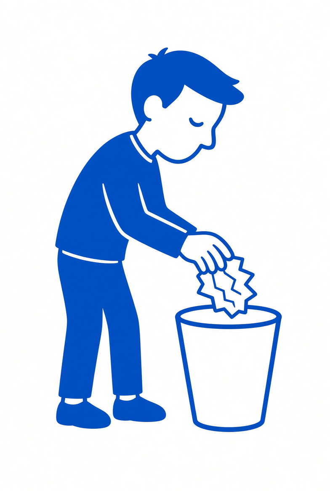
verwijderen
to remove
regelmatigrang 1138Movement & positiongetekend
- Scene
- one adult bends over a rubbish bin, one hand already holding a crumpled sheet of paper inside it and letting go, the fingers just opening; the bin is white and empty beneath. No other person and nothing else in the picture.
- Must read
- fingers just opening above a bin with the crumpled paper inside it.
- Avoid
- a sheet held up before a second person (tonen); a page taken from a shelf into a bag (pakken); a broom sweeping a floor; a bin bag tied at the top; a hand held flat against the chest (houden).
- Alt text
- Iemand buigt boven een prullenbak en laat een verfrommeld vel papier in de bak vallen.
- Example
- Ik verwijder de oude foto's van mijn telefoon.
I remove the old photos from my phone.
verwijderen.png · rang 1138 · B2 regelmatig · lexicon woorden.tsv
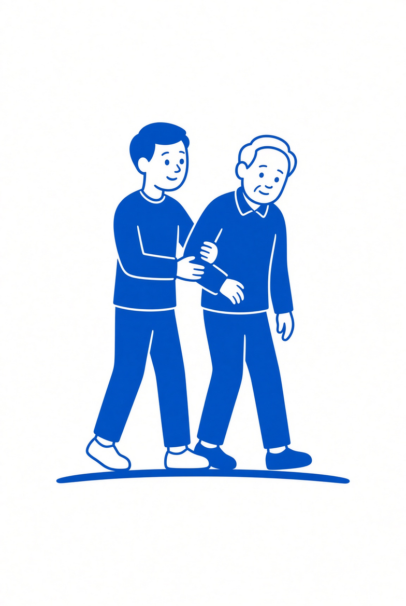
ondersteunen
to support (help)
regelmatigrang 1658Character & behaviourgetekend
- Scene
- two adults walk slowly side by side on a plain path; the one on the right is older and leans a little, and the one on the left holds that person's elbow with one hand and the back with the other, looking at them. Nothing else in the picture.
- Must read
- one adult holding another's elbow and back as that person leans on them.
- Avoid
- two people carrying one box between them (helpen); a hug with both arms round the neck (omarmen); a person pushing a wheelchair; a person lifting a heavy shelf; a hand patting a shoulder.
- Alt text
- Iemand houdt een oudere persoon bij de elleboog en de rug vast terwijl die leunend loopt.
- Example
- De gemeente wil de familie ondersteunen.
The municipality wants to support the family.
ondersteunen.png · rang 1658 · B2 regelmatig · lexicon woorden.tsv
geen beeld
wagen
car
regelmatigrang 1695Transport & travel
- Scene
- One child stands at the tip of a high diving board with bent knees and arms drawn back, looking down at the water far below.
- Must read
- A child at the tip of a diving board with bent knees looking down at the water.
- Avoid
- a child already in the air (springen); a child climbing a ladder (klimmen); a child falling (vallen); a child scratching the head between two doors (twijfelen).
- Alt text
- Een kind staat aan het uiteinde van een duikplank met gebogen knieën en kijkt omlaag naar het water.
- Example
- Ik waag het niet om van de hoge plank te springen.
I do not dare to jump off the high board.
wagen.png · rang 1695 · B2 regelmatig · lexicon woorden.tsv
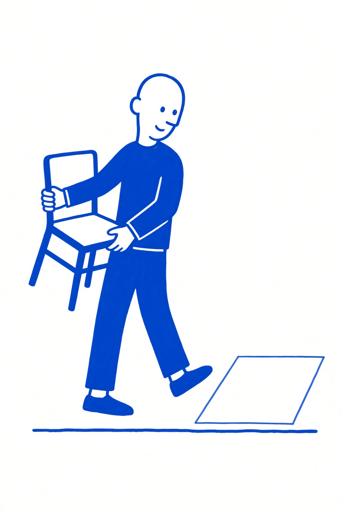
verplaatsen
to move (an object)
regelmatigrang 2320Movement & positiongetekend
- Scene
- one adult stands in a plain room holding a wooden chair off the floor with both hands, carrying it from the left side towards a pale square marked on the floor at the right, one step taken. Nothing else in the picture.
- Must read
- a chair lifted off the floor and carried from one spot to another.
- Avoid
- a person dragging a chair along the floor (slepen); a person sitting down on the chair (zitten); a box carried to a doorway (dragen); a trolley pushed along (duwen); arrows or dotted paths.
- Alt text
- Iemand draagt een stoel met twee handen van de ene plek in de kamer naar een andere plek.
- Example
- Wij verplaatsen de kast naar de andere kamer.
We move the cupboard to the other room.
verplaatsen.png · rang 2320 · B2 regelmatig · lexicon woorden.tsv
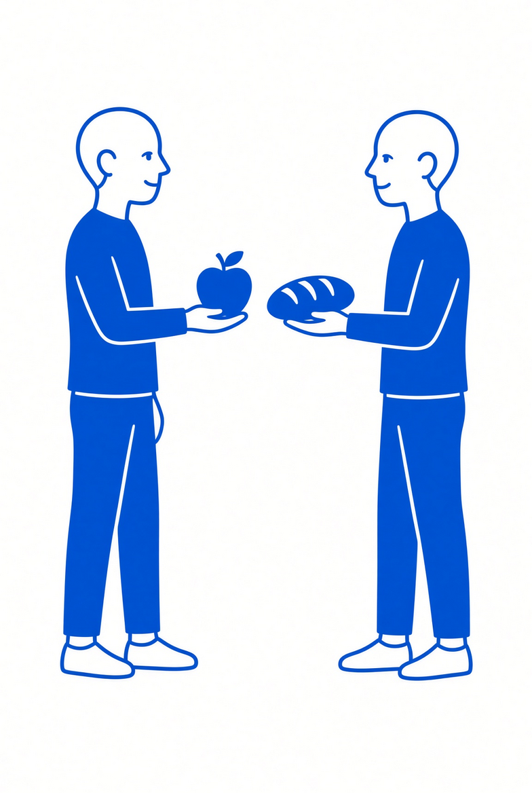
wisselen
to change (money, places)
regelmatigrang 2353Abstract & generalgetekend
- Scene
- two adults stand facing each other an arm's length apart, each holding out one object to the other: the left person an apple, the right person a loaf of bread. Both objects are caught halfway, side by side between the two pairs of hands. Both look at what they are about to receive.
- Must read
- two different objects passing in opposite directions between two people.
- Avoid
- one box passing one way only (geven); coins and notes on a counter (betalen); two people shaking hands (groeten); a shop shelf with a price (kopen); a ring of arrows.
- Alt text
- Twee mensen staan tegenover elkaar en houden elk een ander voorwerp naar de ander uit; de voorwerpen kruisen elkaar.
- Example
- Wij wisselen vandaag onze telefoonnummers.
We exchange phone numbers today.
wisselen.png · rang 2353 · B2 regelmatig · lexicon woorden.tsv
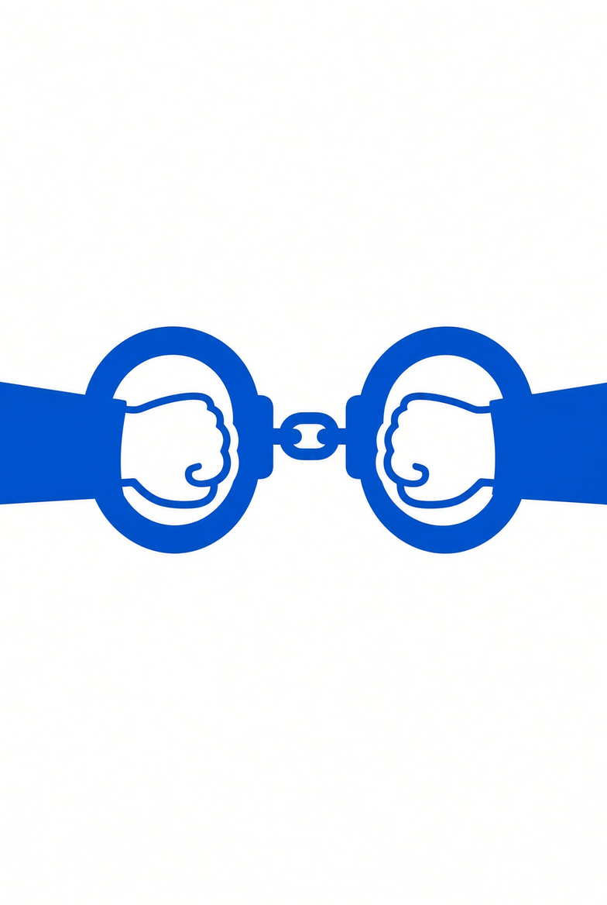
arresteren
to arrest
regelmatigrang 2551Law & conflictgetekend
- Scene
- a large pair of handcuffs, two thick solid rings joined by a short chain, with the cuffs closed on two separate forearms held out together, each forearm ending in its own clearly outlined white fist with no hand overlapping the other; the arm tubes start at least 8% in from both left and right edges; nothing else.
- Must read
- handcuffs closing round two wrists held out together.
- Avoid
- one adult sitting behind a high wooden desk (rechtspreken); two adults in a fist fight (vechten); one hand pulling another person by the arm (wegsturen); a handshake between two adults (afspreken); bars or a prison cell.
- Alt text
- Een paar handboeien sluit zich om twee polsen die naar voren worden gehouden.
- Example
- De politie arresteert de man vlak bij het station.
The police arrest the man close to the station.
arresteren.png · rang 2551 · B2 regelmatig · lexicon woorden.tsv
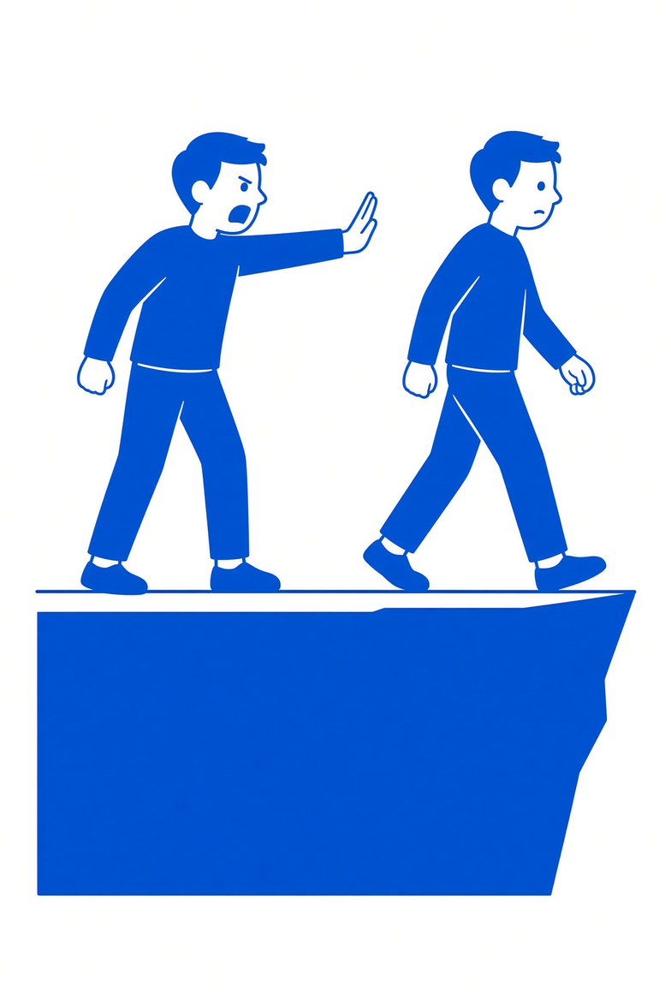
waarschuwen
to warn
regelmatigrang 2656Communication & languagegetekend
- Scene
- one adult holds up one flat palm towards a second adult who is walking towards the edge of a cliff with eyes fixed ahead; the first adult’s mouth is open mid-shout and the raised arm stretches out. The second adult is one stride from the drop. The entire cliff and both ground lines sit inside the frame with a white margin on all sides; the cliff base does not reach the bottom edge.
- Must read
- a raised flat palm and a shout stopping a walker at the cliff edge.
- Avoid
- a triangle sign on a stick beside the path (verbieden); a hand chopping the air near a phone (onderbreken); a finger wagging in another person’s face (berispen); a door held shut; a siren with nobody present.
- Alt text
- Een volwassene steekt een open hand op naar iemand die bijna over de rand van een klif stapt.
- Example
- De buurman waarschuwt ons voor het gladde ijs.
The neighbour warns us about the slippery ice.
waarschuwen.png · rang 2656 · B2 regelmatig · lexicon woorden.tsv

presenteren
to present
regelmatigrang 2765Communication & languagegetekend
- Scene
- one adult stands beside a tall flip chart with one open palm laid flat against the board and the other arm sweeping up towards its top; the flip chart pages are blank, and one adult sits facing the board with their heads up and eyes on it. No lettering on the board.
- Must read
- one open palm held flat on a flip chart facing an audience.
- Avoid
- a trophy held up in both hands (winnen); a sheet of paper handed over (geven); a shopkeeper turning a price sign (kosten); two adults shaking hands (afspreken).
- Alt text
- Een spreker legt een open hand op een leeg flipovervel en wijst met de andere arm naar boven.
- Example
- Zij presenteert haar plan aan het hele team.
She presents her plan to the whole team.
presenteren.png · rang 2765 · B2 regelmatig · lexicon woorden.tsv

straffen
to punish
regelmatigrang 2937Abstract & generalgetekend
- Scene
- one adult shrinks on a chair while a second adult stands over them with one pointing finger raised and the head lowered towards the first; the seated adult’s arms are pulled in and their eyes are down. Both adults, and no parent or child is shown, and no belt or cane.
- Must read
- one raised pointing finger above a person sitting down.
- Avoid
- a police officer with handcuffs (arresteren); a cane or a belt raised in the air; an open hand swung at a face (slaan); two adults in a fist fight (vechten); a locked cell door.
- Alt text
- Iemand zit ineengezakt op een stoel terwijl een staande volwassene een vinger op hen richt.
- Example
- Ouders willen hun kind niet te streng straffen.
Parents do not want to punish their child too harshly.
straffen.png · rang 2937 · B2 regelmatig · lexicon woorden.tsv

verdelen
to divide
regelmatigrang 2985Movement & positiongetekend
- Scene
- one adult cuts a loaf in two on a board with a bread knife, and one half slides onto a plate held out by a second adult; only these two figures are in the picture.
- Must read
- a loaf cut in two with one half going onto an outstretched plate.
- Avoid
- one adult handing a whole loaf to a second (geven); a shopkeeper taking coins (betalen); two adults each holding an end of a loaf (delen); a tray of drinks set down in front of a group.
- Alt text
- Iemand snijdt een brood doormidden en schuift een helft op het bord van een wachtende.
- Example
- Wij verdelen de taken onder de kinderen.
We divide the tasks among the children.
verdelen.png · rang 2985 · B2 regelmatig · lexicon woorden.tsv
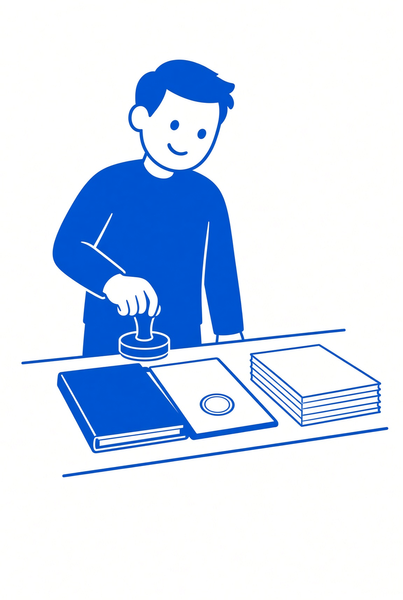
registreren
to register
regelmatigrang 3022Society & politicsgetekend
- Scene
- one adult stands behind a low counter and brings a round rubber stamp down onto a closed folder, the stamp’s base a finger’s width above the cover; a second folder already stamped with a dark ring lies beside it, and a stack of blank sheets waits at hand.
- Must read
- one rubber stamp pressing down on a folder at a counter.
- Avoid
- an ink pad beside a pile of envelopes (posten); a hand held up showing a thumb print (identificeren); a pen on a form (schrijven); a price sign on a shelf (kosten); a laptop (typen).
- Alt text
- Iemand achter een balie drukt een ronde stempel op een map; een tweede map is al gestempeld.
- Example
- U moet zich online registreren voor de cursus.
You must register online for the course.
registreren.png · rang 3022 · B2 regelmatig · lexicon woorden.tsv
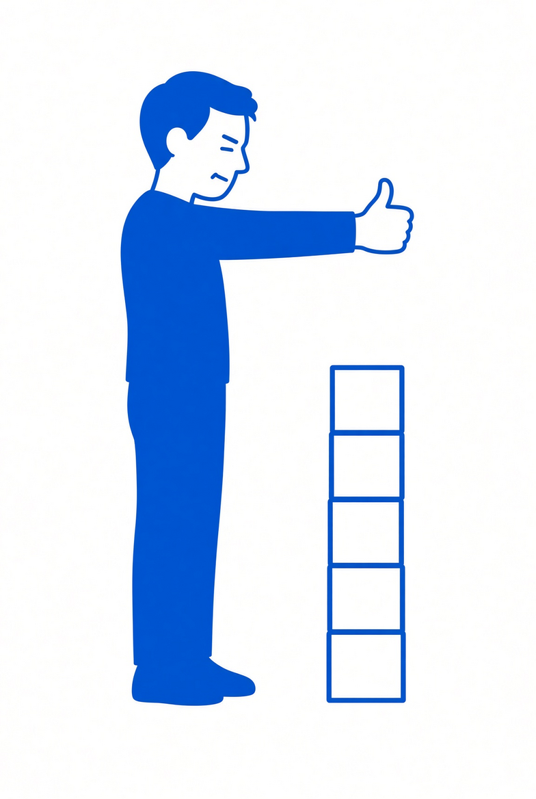
schatten
to estimate
regelmatigrang 3023Quantity & measuregetekend
- Scene
- one adult stands side-on, full figure, the eye on the viewer's side drawn as a clear tight squint with the face frowning slightly in concentration, one arm stretched straight out in front with the thumb raised, looking along it at a stack of five separate outlined white blocks with cobalt outlines standing on the ground ahead; nothing else.
- Must read
- an arm stretched out with a thumb raised, one eye shut, sizing up a stack.
- Avoid
- a tape measure or a ruler (meten); a calculator and loose coins; a balance with two pans (wegen); bare hands at the sides while looking away (kijken).
- Alt text
- Iemand knijpt één oog dicht en houdt een duim omhoog voor een stapel.
- Example
- Hoeveel mensen komen er volgens jou? Kun je dat schatten?
How many people are coming, do you think? Can you estimate it?
schatten.png · rang 3023 · B2 regelmatig · lexicon woorden.tsv
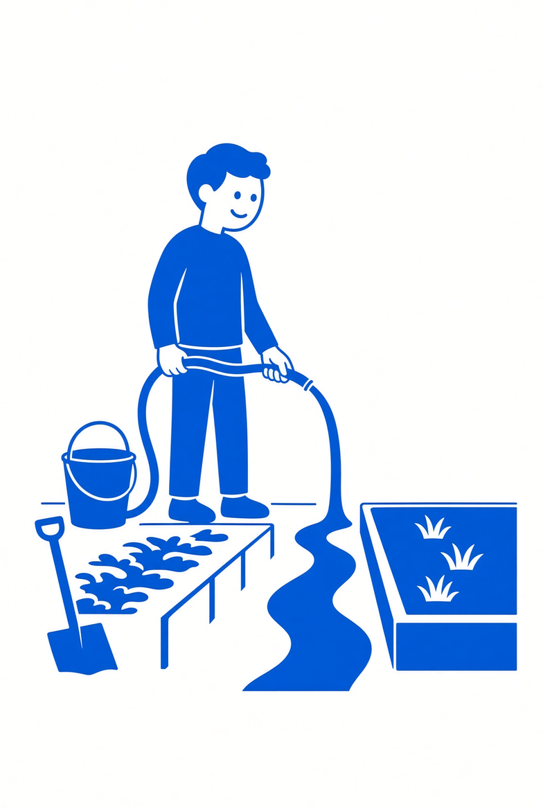
stromen
to flow
regelmatigrang 3026Movement & positiongetekend
- Scene
- one adult stands with a garden hose held low and lets water run out along a narrow channel dug between two raised beds; the water lies in the channel as one dark ribbon flowing away in the direction the hand points. A bucket stands dry beside a spade.
- Must read
- water running as one ribbon along a dug channel.
- Avoid
- a kettle on a stove (koken); a person staring at a tap; a barrel carried full in both arms (tillen); a row of wet paving stones (regen); a stream with nobody about.
- Alt text
- Een volwassene laat water uit een tuinslang door een gegraven geul lopen.
- Example
- Het water stroomt snel onder de brug door.
The water flows quickly under the bridge.
stromen.png · rang 3026 · B2 regelmatig · lexicon woorden.tsv

ruimen
to clear (snow, rubble)
regelmatigrang 3212Nature & weathergetekend
- Scene
- one adult in a winter coat pushes a wide snow shovel along the pavement outside a house, both hands on the handle; behind the shovel the path is bare and clean, ahead of it the snow lies thick, and a low heap of pushed snow rises at the kerb. Nothing else in the picture.
- Must read
- a clean strip of path behind a snow shovel, thick snow ahead of it.
- Avoid
- a long broom pushing crumbs indoors (vegen); a spade digging into soil (graven); flakes falling from the sky; children throwing snowballs (gooien); toys put away into a box.
- Alt text
- Iemand in een winterjas houdt een brede sneeuwschuiver; achter de schuiver ligt het pad schoon, ervoor ligt dikke sneeuw.
- Example
- De gemeente ruimt vroeg de sneeuw van de weg.
The municipality clears the snow from the road early.
ruimen.png · rang 3212 · B2 regelmatig · lexicon woorden.tsv

voeden
to feed (a baby)
regelmatigrang 3219Food & drinkgetekend
- Scene
- one adult sits beside a baby in a high chair and holds a small spoon of food to the baby's open mouth; the baby leans forward, a bowl stands on the high-chair tray and a bib hangs from the baby's neck. Nobody else in the picture.
- Must read
- a small spoon held to a baby's open mouth.
- Avoid
- bread thrown to ducks (voeren); a person eating alone from a bowl (eten); a crying baby with an empty tray (huilen); a bottle given to a lamb.
- Alt text
- Een volwassene houdt een lepeltje bij de open mond van een baby in een kinderstoel.
- Example
- Zij moet haar baby elke drie uur voeden.
She has to feed her baby every three hours.
voeden.png · rang 3219 · B2 regelmatig · lexicon woorden.tsv
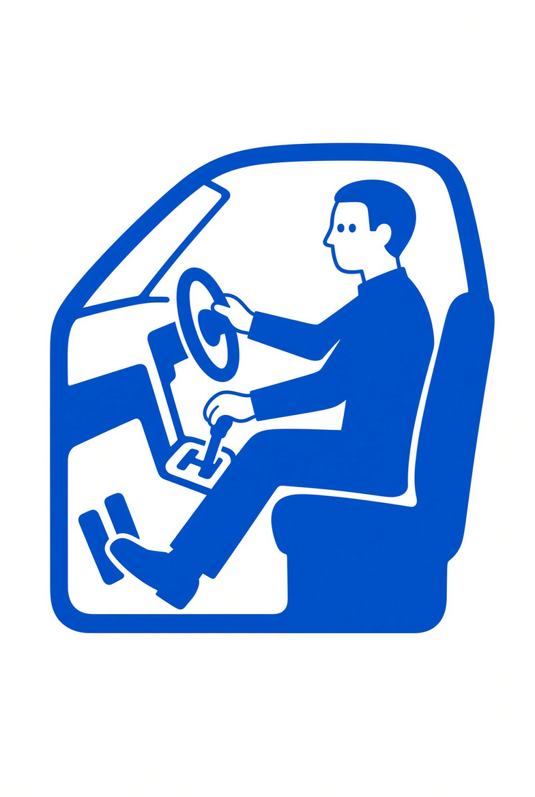
schakelen
to change gear
regelmatigrang 3308Transport & travelgetekend
- Scene
- seen from the passenger seat, one adult sits behind the steering wheel of a small car with the eyes on the road through the windscreen; the left foot presses the clutch pedal down and the right hand moves the gear stick from one slot to the next. No other people and nothing on the dashboard.
- Must read
- a hand moving the gear stick while one foot holds the clutch pedal down.
- Avoid
- both hands on the steering wheel and none on the gear stick (rijden); a hand turning the key in the ignition (starten); a foot stamping on the brake (remmen); a finger pressing a light switch on a wall.
- Alt text
- Iemand achter het stuur van een auto legt een hand op de pook en trapt een pedaal in.
- Example
- Hij leert in de auto schakelen.
He is learning to change gear in the car.
schakelen.png · rang 3308 · B2 regelmatig · lexicon woorden.tsv

verwelkomen
to welcome
regelmatigrang 3702People & relationsgetekend
- Scene
- one adult stands in an open front doorway with both arms spread wide towards a second adult who is coming up the path with a small suitcase; both smile and the visitor is one step from the door. Above the head of the host welcoming in the doorway floats one bold solid cobalt arrow pointing straight down at the head, with a clear white gap between arrow tip and hair; it marks who performs the verb. The other person has no arrow. No text.
- Must read
- open arms in a doorway facing an arriving guest.
- Avoid
- two people with arms around each other (knuffelen); a person leaving with a suitcase (vertrekken); a key turning in a door (openen); a hand raised in a wave from far away.
- Alt text
- Iemand staat in een open voordeur met wijd gespreide armen voor een gast met een koffertje.
- Example
- Wij verwelkomen de gasten bij de deur.
We welcome the guests at the door.
verwelkomen.png · rang 3702 · B2 regelmatig · lexicon woorden.tsv

slopen
to demolish
regelmatigrang 4632Technology & toolsgetekend
- Scene
- one worker in a helmet swings a heavy sledgehammer into a brick wall; a section has already caved in and loose bricks fall onto a pile below, with small dust puffs round the hole.
- Must read
- a sledgehammer knocking bricks out of a wall.
- Avoid
- a plate dropping and breaking on the floor (breken); a wall laid brick by brick (bouwen); a hammer on a nail in a box (maken); a drill going into a wall (boren).
- Contrast
- Pair with bouwen. Same brick wall: the sledgehammer knocks bricks out here, a brick is lowered into place there.
- Alt text
- Een arbeider met een helm slaat met een zware hamer een gat in een bakstenen muur.
- Example
- Ze gaan het oude huis slopen.
They are going to demolish the old house.
slopen.png · rang 4632 · B2 regelmatig · lexicon woorden.tsv
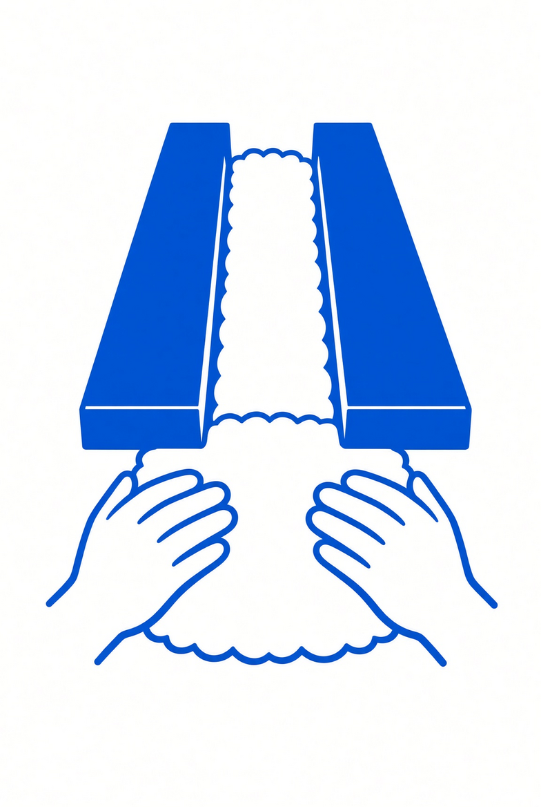
isoleren
to insulate
regelmatigrang 4806House & homegetekend
- Scene
- no person: two thick parallel roof beams as vertical bars with a gap between them; a thick soft wool mat fills the gap with its top half already inside the gap and its bottom edge bulging out below, and two outlined white hands pressing it in from both sides; nothing else.
- Must read
- a thick soft mat pressed into the gap between two roof beams.
- Avoid
- a hammer nailing a plank to a beam (bouwen); a person carrying a rolled mat up a ladder (dragen); a blanket laid over a bed (leggen); hands fixing a loose part with a spanner (repareren).
- Alt text
- Iemand op de knieën op een zolder drukt een dikke zachte laag wol tussen twee dakbalken.
- Example
- We laten het dak isoleren om energie te besparen.
We are having the roof insulated to save energy.
isoleren.png · rang 4806 · B2 regelmatig · lexicon woorden.tsv
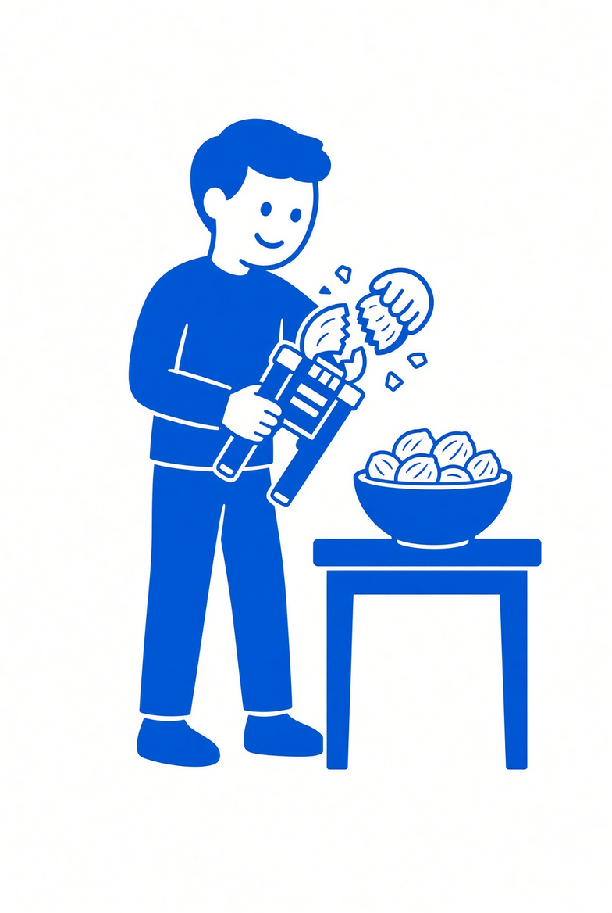
kraken
to crack (a nut)
regelmatigrang 4809Food & drinkgetekend
- Scene
- one adult holds a nutcracker in one hand and squeezes a walnut between its jaws, the shell splitting open with small pieces flying; a bowl of whole nuts stands on the table.
- Must read
- a nutcracker splitting a walnut shell.
- Avoid
- a plate dropping and breaking (breken); half a lemon pressed onto a juicer (persen); a cheek pinched between finger and thumb (knijpen); a hammer on a nail (maken).
- Alt text
- Iemand zet een notentang om een walnoot; de schaal springt open en er vliegen stukjes weg.
- Example
- Ik kan deze harde noot niet kraken.
I cannot crack this hard nut.
kraken.png · rang 4809 · B2 regelmatig · lexicon woorden.tsv
geen beeld
veroorloven
to permit
regelmatigrang 4892Law & conflict
- Scene
- a shopper stands in a bicycle shop with one hand on the handlebar of a bicycle and the other holding an open wallet stuffed with notes; the shopper smiles; the bicycle stands upright on its two wheels, and no counter or second person is in the frame.
- Must read
- an open bulging wallet held beside a bicycle in a shop.
- Avoid
- a person paying at a counter (kopen); a coin dropped into a piggy bank (sparen); a person handing money to another (geven); a person turning out empty pockets (zoeken).
- Alt text
- Iemand houdt een dikke geopende portemonnee omhoog naast een fiets in een winkel en glimlacht.
- Example
- Ik kan me geen nieuwe fiets veroorloven.
I cannot afford a new bike.
veroorloven.png · rang 4892 · B2 regelmatig · lexicon woorden.tsv
geen beeld
onthullen
to reveal
regelmatigrang 5014Abstract & general
- Scene
- One adult pulls a large plain cloth off a statue standing on a tall plinth, close side view; the cloth is mid-slide and the statue is half revealed, while a few onlookers stand back and watch with their faces turned up.
- Must read
- the cloth sliding off a half-revealed statue.
- Avoid
- a person pulling a rope (trekken); a person opening a door or a curtain (openen); a person taking a coat off (uitkleden); a statue already bare with a crowd clapping (bewonderen).
- Alt text
- Een doek glijdt van een standbeeld terwijl mensen toekijken.
- Example
- De burgemeester onthult het standbeeld.
The mayor unveils the statue.
onthullen.png · rang 5014 · B2 regelmatig · lexicon woorden.tsv
geen beeld
solliciteren
to apply
regelmatigrang 5025Work & jobs
- Scene
- One woman in a neat jacket sits straight on a chair in front of a desk and holds out a folder to a man behind the desk. His hand is just reaching for it. A small lamp and a pen stand on the desk. Nothing else in the frame.
- Must read
- the folder passing across the desk to the man.
- Avoid
- a woman shaking hands with a man (ontmoeten); two people talking over coffee (praten); a woman signing a paper at the desk (tekenen); a man handing a folder to a woman (geven).
- Alt text
- Een vrouw in een nette jas steekt een map uit naar een man achter een bureau.
- Example
- Anna solliciteert naar een baan in de winkel.
Anna applies for a job in the shop.
solliciteren.png · rang 5025 · B2 regelmatig · lexicon woorden.tsv
geen beeld
stichten
to found, to start
regelmatigrang 5027Time
- Scene
- In a village hall one adult hands a new matching football shirt to each person in a small group, who all reach out for it. A new ball lies on the table beside a neat pile of the same shirts. No pitch and no match in the picture.
- Must read
- the first matching shirts being handed out to a small group.
- Avoid
- a person handing out leaflets on the street (uitdelen); a team playing a match on a pitch (spelen); a person paying for a ball in a shop (kopen); a person raising a flag pole (oprichten)
- Alt text
- Een man geeft in een zaal gelijke shirts aan een kleine groep; op tafel ligt een nieuwe bal.
- Example
- Jan sticht een voetbalclub in het dorp.
Jan is founding a football club in the village.
stichten.png · rang 5027 · B2 regelmatig · lexicon woorden.tsv
geen beeld
versnellen
to speed up
regelmatigrang 5037Abstract & general
- Scene
- A car seen from the side faces right with its nose slightly lifted and three long horizontal streaks trailing behind; the driver's head is pressed back against the seat. The road below is flat and straight, and the wheels are blurred with short curved lines. No other vehicles or buildings are in the frame.
- Must read
- a car with long streaks behind it, nose lifted and the driver pressed back.
- Avoid
- a car parked with its doors open (parkeren); two cars with one passing the other (passeren); a car stopped with its front against a wall (botsen); a person running (rennen).
- Alt text
- Een auto rijdt naar rechts met opgetilde neus en lange strepen erachter; de bestuurder zit met het hoofd achterover.
- Example
- De auto versnelt op de snelweg.
The car speeds up on the motorway.
versnellen.png · rang 5037 · B2 regelmatig · lexicon woorden.tsv
geen beeld
activeren
to activate, put into action
regelmatigrang 5044Abstract & general
- Scene
- One adult stands at a cash machine in profile and pushes a new bank card into its slot with one hand. In the other hand she holds the empty envelope the card came in. The machine screen shows no text or numbers.
- Must read
- the new card going into the machine slot, the envelope in her other hand.
- Avoid
- a person counting banknotes from the machine (opnemen); a person pressing a big button on a wall (drukken); a person paying at a shop counter (betalen); a person cutting a card in half (knippen).
- Alt text
- Een vrouw steekt een pas in een geldautomaat en houdt een lege envelop in haar andere hand.
- Example
- Anna activeert haar nieuwe bankpas.
Anna activates her new bank card.
activeren.png · rang 5044 · B2 regelmatig · lexicon woorden.tsv
geen beeld
balen
to be fed up
regelmatigrang 5049Movement & position
- Scene
- one adult slumps low on a sofa with arms crossed, mouth turned down and eyes rolled up; raindrops run down the window behind. One hand rests under the chin, the legs stretch out on a low table, and no other person or screen is in the frame.
- Must read
- slumped on a sofa with crossed arms and a turned-down mouth.
- Avoid
- a person crying with tears (huilen); a person stamping a foot (stampen); a person asleep on a sofa (slapen); a person with a breath stroke leaving the mouth (zuchten).
- Alt text
- Iemand zit onderuit op een bank met gekruiste armen en een neergetrokken mond; buiten regent het.
- Example
- Ik baal ervan dat het regent.
I am fed up that it is raining.
balen.png · rang 5049 · B2 regelmatig · lexicon woorden.tsv
geen beeld
naderen
to draw near
regelmatigrang 5074Movement & position
- Scene
- the front of a train runs along a straight track toward a platform at the right edge; one adult stands behind the edge of the platform looking left, and the train nose is still several train lengths from the platform end, with a few motion lines behind it.
- Must read
- a train front on a track still some way from a platform with a person waiting.
- Avoid
- a train standing still at the platform (stoppen); a person stepping into the train (instappen); a train leaving the platform (vertrekken); a train on a bridge; a clock.
- Alt text
- Een trein rijdt over een spoor naar een perron waar een wachtende persoon staat.
- Example
- De trein nadert het station.
The train is approaching the station.
naderen.png · rang 5074 · B2 regelmatig · lexicon woorden.tsv
geen beeld
vertragen
to slow down, to delay
regelmatigrang 5097Transport & travel
- Scene
- A man stands on a station platform with a suitcase at his feet, looking at his wrist watch. Behind him a train creeps into the station through falling snow, with snow lying on its roof and on the platform.
- Must read
- a train crawling in through snow while the man checks his watch.
- Avoid
- a man sitting calmly on a bench (wachten); a hand pulling a brake lever (remmen); a train speeding past with speed lines (razen); a man running along the platform (rennen).
- Alt text
- Een man kijkt op zijn horloge terwijl achter hem in de sneeuw een trein langzaam het station binnenkomt.
- Example
- De sneeuw vertraagt de trein.
The snow slows the train down.
vertragen.png · rang 5097 · B2 regelmatig · lexicon woorden.tsv
geen beeld
koesteren
to cherish
regelmatigrang 5134Abstract & general
- Scene
- one woman sits in an armchair holding a small framed photo against her chest with both hands, eyes closed and a soft smile. A small lamp glows on a side table, a blanket lies over her knees, and no other person is in the room.
- Must read
- a framed photo held against the chest with both hands, eyes closed.
- Avoid
- a person staring at a photo held at arm's length (kijken); a person kissing a photo (kussen); a person holding a photo up to show another (tonen); a person hugging another person (knuffelen).
- Alt text
- Een vrouw zit met een kleine lijst tegen haar borst met gesloten ogen en een glimlach.
- Example
- Zij koestert de herinnering aan haar oma.
She cherishes the memory of her grandmother.
koesteren.png · rang 5134 · B2 regelmatig · lexicon woorden.tsv
geen beeld
verstoppen
to hide
regelmatigrang 5161Abstract & general
- Scene
- One child crouches behind the back of a sofa so that only the top of the head and one hand gripping the edge show, eyes wide. The sofa stands against a plain wall, the knees are bent, and no toys or other people are in the frame.
- Must read
- Only the top of the head and a hand showing over the back of a sofa.
- Avoid
- a child searching with hands over the eyes (zoeken); a child running away (wegrennen); a child asleep (slapen); a person under an umbrella (schuilen).
- Alt text
- Een kind zit gehurkt achter een bank; alleen het hoofd en een hand steken boven de rugleuning uit.
- Example
- Het kind verstopt zich achter de bank.
The child hides behind the sofa.
verstoppen.png · rang 5161 · B2 regelmatig · lexicon woorden.tsv
geen beeld
bezichtigen
to view
regelmatigrang 5180Abstract & general
- Scene
- two adults stand on the threshold of an open front door looking inside; a third adult holds the door open and sweeps an arm inward toward the hall; the hall inside is empty and plain, and none of the three carries bags or boxes.
- Must read
- two adults at an open front door looking in while a third adult holds the door and sweeps an arm inward.
- Avoid
- an adult knocking on a closed door (kloppen); an adult carrying boxes into a house (verhuizen); an adult waving from a window (wonen); an adult leaning close to a picture on a wall (bekijken); a person selling something at a counter (verkopen).
- Alt text
- Twee mensen staan op de drempel van een open voordeur; een derde houdt de deur vast en gebaart naar binnen.
- Example
- Zaterdag bezichtigen wij een nieuw huis.
On Saturday we are viewing a new house.
bezichtigen.png · rang 5180 · B2 regelmatig · lexicon woorden.tsv
geen beeld
introduceren
to introduce
regelmatigrang 5201Communication & language
- Scene
- one adult stands between two others and holds an open palm toward one of them while smiling at the other, who looks on with a friendly face; all three stand upright on flat ground with nobody shaking hands or pointing.
- Must read
- an open palm turned toward one person while a second looks on.
- Avoid
- two people greeting each other (groeten); a finger pointing at a stranger (wijzen); two people shaking hands (schudden); two people introducing themselves (voorstellen).
- Alt text
- Iemand staat tussen twee mensen en houdt een open hand naar de een, terwijl de ander glimlacht.
- Example
- Ik introduceer mijn vriend aan mijn ouders.
I introduce my friend to my parents.
introduceren.png · rang 5201 · B2 regelmatig · lexicon woorden.tsv
geen beeld
voltooien
to complete
regelmatigrang 5233Abstract & general
- Scene
- One painter stands in a bare studio and has just stepped back from a large painting on an easel, one last brush in her hand, arm lowered. The painting is whole and framed by clean edges. Paint tubes lie on the floor. Nobody else in the picture.
- Must read
- the painter stepping back from a whole painting, brush lowered.
- Avoid
- a person with a brush at the first lines of a blank canvas (beginnen); a person painting a wall with a roller (schilderen); a person throwing the painting away (weggooien); a person asleep beside an unfinished painting (rusten); a person framing the painting on a wall.
- Alt text
- Een vrouw staat een stap achter een groot schilderij op een ezel, met een penseel in haar neergelaten hand.
- Example
- Els voltooit haar schilderij.
Els finishes her painting.
voltooien.png · rang 5233 · B2 regelmatig · lexicon woorden.tsv
geen beeld
beluisteren
to listen to
regelmatigrang 5246Communication & language
- Scene
- one adult sits on a plain chair with large over-ear headphones on the head and a phone resting on the lap, the eyes closed and the face relaxed; both hands lie loose on the knees and nothing else is in the frame.
- Must read
- over-ear headphones on a head with a phone resting in the lap.
- Avoid
- a hand cupped behind an ear toward a wall (luisteren); a person singing with an open mouth (zingen); a person dancing (dansen); a phone held to the ear (bellen); musical notes.
- Alt text
- Iemand zit met grote kappen om de oren en een telefoon op de schoot en kijkt voor zich uit.
- Example
- Ik beluister een podcast in de trein.
I listen to a podcast on the train.
beluisteren.png · rang 5246 · B2 regelmatig · lexicon woorden.tsv
geen beeld
bewerkstelligen
to bring about, to realize
regelmatigrang 5248Abstract & general
- Scene
- A woman stands between two men who each look away from the other. She holds out one hand to each of them, and their two hands are being drawn towards each other, a few centimetres apart, about to touch. Nothing else in the frame.
- Must read
- the woman's two hands drawing the men's hands together.
- Avoid
- two men shaking hands with no one between them (begroeten); a woman pushing two men apart with straight arms (scheiden); a woman talking with a speech bubble (praten); a woman carrying a tray of cups (serveren).
- Alt text
- Een vrouw staat tussen twee mannen die van elkaar wegkijken en trekt hun handen naar elkaar toe.
- Example
- Els bewerkstelligt dat Jan en Piet weer vrienden worden.
Els makes sure that Jan and Piet become friends again.
bewerkstelligen.png · rang 5248 · B2 regelmatig · lexicon woorden.tsv
geen beeld
gillen
to scream
regelmatigrang 5263Abstract & general
- Scene
- One woman stands with her mouth wide open, both hands pressed to her cheeks, eyes squeezed shut and head thrown back. Her shoulders are raised and her elbows point out to the sides. She stands alone against a plain background, with no other people or objects in the frame.
- Must read
- a wide-open mouth with both hands pressed to the cheeks and head thrown back.
- Avoid
- a person calling with hands cupped round the mouth (roepen); a person crying with tears (huilen); a person laughing (lachen); a person singing (zingen).
- Alt text
- Een vrouw met wijd geopende mond en handen tegen de wangen gooit het hoofd in de nek.
- Example
- Het meisje gilt van schrik.
The girl screams with fright.
gillen.png · rang 5263 · B2 regelmatig · lexicon woorden.tsv
geen beeld
importeren
to import
regelmatigrang 5268Abstract & general
- Scene
- One large ship lies at a quay while a crane lifts a wooden crate from the ship's deck towards the quay. One man stands on the quay beside a small hand cart, waiting with his arms ready. The crate is clearly moving from ship to land.
- Must read
- the crate lifted from the ship towards the quay.
- Avoid
- a crate lifted from the quay onto the ship (exporteren); a man emptying a lorry by hand (lossen); a ship sailing alone on open sea (varen); coins paid over a counter (kopen).
- Alt text
- Een kraan hijst een kist van een schip naar de kade, waar een man bij een karretje wacht.
- Example
- Sam importeert koffie uit een ver land.
Sam imports coffee from a distant country.
importeren.png · rang 5268 · B2 regelmatig · lexicon woorden.tsv
geen beeld
kopiëren
to copy
regelmatigrang 5275Abstract & general
- Scene
- one adult stands at a large copier with the lid raised in one hand and a single sheet being laid on the glass with the other; a thin band of light runs along the glass edge and a stack of fresh sheets lies in the output tray.
- Must read
- a sheet laid on the glass of a copier with the lid held up and a stack in the tray.
- Avoid
- a person writing on a sheet with a pen (schrijven); a person drawing a picture (tekenen); a person feeding a sheet into a shredder (versnipperen); a person scanning a barcode (scannen); a person carrying a stack of paper (dragen).
- Alt text
- Iemand legt een vel op het glas van een kopieerapparaat, het deksel omhoog; in de bak ligt een stapel.
- Example
- Ik kopieer de pagina voor mijn collega.
I copy the page for my colleague.
kopieren.png · rang 5275 · B2 regelmatig · lexicon woorden.tsv
geen beeld
riskeren
to risk
regelmatigrang 5290Abstract & general
- Scene
- A man stands in the middle of a frozen pond in winter clothes, bent slightly at the knees, looking down at long cracks that spread across the thin ice around his shoes. His arms are held out for balance. No other person and nothing else in the picture.
- Must read
- long cracks in the ice around the man's shoes.
- Avoid
- a man gliding smoothly on thick ice with skates (schaatsen); a man walking along a dry pavement (lopen); a man already falling through the ice with raised arms (zinken); a person standing safely on the bank.
- Alt text
- Een man staat midden op een bevroren vijver en kijkt naar scheuren in het ijs rond zijn schoenen.
- Example
- Piet riskeert zijn leven op het dunne ijs.
Piet risks his life on the thin ice.
riskeren.png · rang 5290 · B2 regelmatig · lexicon woorden.tsv
geen beeld
stormen
to storm
regelmatigrang 5299Nature & weather
- Scene
- a single large tree bends hard to the right with all its leaves streaming one way, and one adult beside it leans into the gale with both hands pressing a hat to the head while the coat flaps; the ground is flat and bare, and no rain or house is in the frame.
- Must read
- a bent tree and a leaning person with a coat streaming in one direction.
- Avoid
- a light breeze stirring a flag (waaien); drops falling on an umbrella (regenen); a person running (rennen); a bolt above a house (donderen).
- Alt text
- Een boom buigt diep door en een persoon leunt voorover met een hand op de hoed terwijl de jas wappert.
- Example
- Het stormt vandaag erg hard.
It is storming very hard today.
stormen.png · rang 5299 · B2 regelmatig · lexicon woorden.tsv
geen beeld
stormen (rennen)
to rush
regelmatigrang 5299Nature & weather
- Scene
- Three adults burst through a double doorway side by side, the doors flung wide, bodies leaning forward with arms pumping and mouths open; they all look eager and in a hurry, and the room behind the door is bare.
- Must read
- three people leaning forward through a flung-open doorway at once.
- Avoid
- a person walking calmly through a door (lopen); a person knocking at a door (kloppen); a single runner on a track (rennen); people queueing at a door (wachten).
- Alt text
- Drie mensen komen tegelijk voorovergebogen door een wijd openstaande dubbele deur.
- Example
- De kinderen stormen de klas in.
The children rush into the classroom.
stormen-rennen.png · rang 5299 · B2 regelmatig · lexicon woorden.tsv
geen beeld
trillen
to tremble
regelmatigrang 5306Emotion & feeling
- Scene
- one adult stands holding a phone out in front in one hand, with three short double lines on each side of the phone and the hand, as if the whole thing buzzes; the eyes are on the phone.
- Must read
- a hand holding a phone with short double lines on both sides of it.
- Avoid
- a hand holding a phone to the ear (bellen); a thumb swiping across a phone (vegen); a figure hugging its own arms in the cold (rillen); a person shaking a bottle (schudden).
- Alt text
- Een hand houdt een telefoon vast met korte dubbele streepjes aan weerszijden.
- Example
- Mijn telefoon trilt in mijn hand.
My phone is vibrating in my hand.
trillen.png · rang 5306 · B2 regelmatig · lexicon woorden.tsv
geen beeld
haken
to crochet
regelmatigrang 5394Movement & position
- Scene
- one adult sits on a chair with a small flat piece of crochet on the lap; one hand holds a short hook with a curved tip pulled through a loop of yarn, and the yarn runs from a ball at the feet to the other hand.
- Must read
- a hook with a curved tip pulled through a loop of yarn.
- Avoid
- two long needles with rows of stitches (breien); a needle with thread through cloth (naaien); a person winding yarn into a ball (rollen); a person weaving at a loom (weven); a finished scarf.
- Alt text
- Iemand zit met een klein stuk garen op schoot en haalt een staafje met kromme punt door een lus.
- Example
- Oma haakt een sjaal.
Grandma crochets a scarf.
haken.png · rang 5394 · B2 regelmatig · lexicon woorden.tsv
geen beeld
haken (vast)
to hook, to catch
regelmatigrang 5394Movement & position
- Scene
- one adult stands next to a wall and pulls away with one arm, the body leaning out, while the sleeve of the jacket is held fast on a nail sticking out of the wall; the other hand grips the stuck sleeve and the face is annoyed.
- Must read
- a sleeve held fast on a nail while the arm pulls away.
- Avoid
- a coat hanging on a hook on a wall (hangen); a person tearing cloth with both hands (scheuren); a person pulling a loose thread (trekken); a person tying a knot (knopen); a torn sleeve.
- Alt text
- Iemand leunt naar buiten, weg van een muur, terwijl de mouw van de jas aan een spijker blijft zitten.
- Example
- Mijn jas haakt aan een spijker.
My coat catches on a nail.
haken-vast.png · rang 5394 · B2 regelmatig · lexicon woorden.tsv
geen beeld
overnachten
to stay overnight
regelmatigrang 5417Time
- Scene
- one man lies under a blanket in a bed in a small room, an open suitcase standing on a stool beside the bed and a lamp on a small table.
- Must read
- a man in a bed with an open suitcase on a stool beside it.
- Avoid
- a person asleep in a bed with no suitcase (slapen); a family at their front door (wonen); a person staying with a friend (logeren); a person getting out of bed (opstaan).
- Alt text
- Een man ligt in een bed in een kleine kamer met een open koffer op een kruk ernaast.
- Example
- Wij overnachten in een klein hotel.
We stay overnight in a small hotel.
overnachten.png · rang 5417 · B2 regelmatig · lexicon woorden.tsv
geen beeld
gehoorzamen
to obey
regelmatigrang 5465Character & behaviour
- Scene
- One man stands facing a dog on plain ground, one flat palm held out low in front of him and the other hand relaxed at his side. The dog sits squarely in front of him, looking up at the palm. Nothing else is in the picture.
- Must read
- the dog sitting and looking up at the flat palm.
- Avoid
- a dog running with a ball in its mouth (apporteren); a dog curled up asleep (slapen); a man pulling a dog on a lead (trekken); a dog jumping up at a person (springen).
- Alt text
- Een hond zit recht voor een man die zijn vlakke hand opsteekt en kijkt omhoog naar die hand.
- Example
- De hond gehoorzaamt Piet en gaat zitten.
The dog obeys Piet and sits down.
gehoorzamen.png · rang 5465 · B2 regelmatig · lexicon woorden.tsv
geen beeld
onderdrukken
to suppress
regelmatigrang 5494Abstract & general
- Scene
- One adult woman sits among other seated listeners in a hushed concert hall, seen from the front. She presses her hand flat over her mouth, cheeks puffed out, eyes wide, holding back a cough. The listeners beside her look calmly ahead at the stage.
- Must read
- the hand pressed over the mouth with puffed cheeks.
- Avoid
- a person coughing openly into a fist (hoesten); a person tying someone's hands (bedwingen); a hand over the mouth in surprise; a person yawning; a doctor with a stethoscope.
- Alt text
- Een vrouw in een stille zaal houdt haar hand stevig voor haar mond; haar wangen zijn bol.
- Example
- Anna onderdrukt een hoest tijdens het concert.
Anna suppresses a cough during the concert.
onderdrukken.png · rang 5494 · B2 regelmatig · lexicon woorden.tsv
geen beeld
weren
to keep out
regelmatigrang 5516Abstract & general
- Scene
- One adult guard in a plain jacket stands in a gate opening with one arm stretched out sideways, palm toward a man who faces him with hands in his pockets. Behind the gate a few small garden tables and lanterns are visible.
- Must read
- the guard's outstretched arm stopping the man at the gate.
- Avoid
- a person opening the gate wide (openen); a person pushing a man away with both hands (duwen); a person locking a padlock on a gate (sluiten); two people talking at a doorway; a fence with no one in front of it.
- Alt text
- Een bewaker staat in een poort met een arm opzij gestrekt voor een man die buiten blijft staan.
- Example
- De bewaker weert Jan van het feest.
The guard keeps Jan out of the party.
weren.png · rang 5516 · B2 regelmatig · lexicon woorden.tsv
geen beeld
arriveren
to arrive
regelmatigrang 5521Transport & travel
- Scene
- One train rolls slowly into a station with its nose reaching the platform; passengers with suitcases stand behind a line and lean forward to look. No doors are open yet, the platform edge is a plain strip, and no other train is in the frame.
- Must read
- A train nose reaching a platform where passengers with suitcases wait.
- Avoid
- a train pulling away (vertrekken); a person stepping up into a train (instappen); a person waiting alone (wachten); a person stepping out onto a platform (uitstappen).
- Alt text
- Een trein rijdt langzaam een perron op terwijl mensen met koffers achter een lijn staan.
- Example
- De trein arriveert over vijf minuten.
The train arrives in five minutes.
arriveren.png · rang 5521 · B2 regelmatig · lexicon woorden.tsv
geen beeld
experimenteren
to experiment
regelmatigrang 5535Thought & knowledge
- Scene
- One adult in a lab coat holds a small flask above a rack of four test tubes, tipping a few drops into the second tube, which bubbles. The other three tubes stand empty, and the adult leans forward with narrowed eyes. A plain bench lies beneath, with nothing else on it.
- Must read
- drops falling from a flask into a bubbling test tube.
- Avoid
- a person looking into a microscope (kijken); a person weighing powder on a scale (wegen); a person mixing in a bowl (mengen); a person cooking in a pot (koken).
- Alt text
- Iemand in een laboratoriumjas laat druppels uit een flesje in een van vier reageerbuisjes vallen waar bellen opstijgen.
- Example
- Wij experimenteren met water en zout.
We experiment with water and salt.
experimenteren.png · rang 5535 · B2 regelmatig · lexicon woorden.tsv
geen beeld
hanteren
to employ
regelmatigrang 5541Abstract & general
- Scene
- A carpenter stands over a plank on a bench and grips a heavy hammer firmly in both hands, held up ready and steady. A row of nails lies beside the plank. He looks at the hammer head.
- Must read
- the firm two-handed grip on the hammer.
- Avoid
- a hammer mid-blow on a nail (timmeren); a person carrying a hammer on the shoulder (dragen); a person sawing a plank (zagen); a hammer lying alone on the bench.
- Alt text
- Een man staat bij een plank en houdt een grote hamer met beide handen stevig omhoog; naast hem liggen spijkers.
- Example
- De timmerman hanteert de zware hamer met zorg.
The carpenter handles the heavy hammer with care.
hanteren.png · rang 5541 · B2 regelmatig · lexicon woorden.tsv
geen beeld
heersen
to reign, to prevail
regelmatigrang 5542Abstract & general
- Scene
- Inside a plain hall four adults share a party: two laugh with their heads back, one raises a glass, one holds both arms up, and paper streamers hang from the ceiling. Everybody is cheerful at the same moment, so the happiness seems to fill the whole room.
- Must read
- every person cheerful at once so the mood fills the room.
- Avoid
- one person dancing alone (dansen); a crowned man on a throne giving orders (regeren); a person blowing out candles on a cake (vieren); two people arguing (ruzie maken).
- Alt text
- In een zaal met slingers lachen vier mensen en iemand heft een glas.
- Example
- Op het feest heerst een vrolijke sfeer.
A cheerful mood prevails at the party.
heersen.png · rang 5542 · B2 regelmatig · lexicon woorden.tsv
geen beeld
interpreteren
to interpret
regelmatigrang 5544Abstract & general
- Scene
- One adult man at a kitchen table holds a single letter and smiles; his wife stands behind him reading over his shoulder with a doubtful, frowning face. Nothing is written on the letter.
- Must read
- one letter with a smiling face and a doubtful face.
- Avoid
- a person reading aloud to a child (voorlezen); a person writing a letter (schrijven); a person translating with a dictionary (vertalen); two people both smiling at the letter.
- Alt text
- Een man kijkt blij naar een brief; zijn vrouw kijkt over zijn schouder mee en fronst.
- Example
- Jan interpreteert de brief als goed nieuws, maar Els twijfelt.
Jan interprets the letter as good news, but Els doubts it.
interpreteren.png · rang 5544 · B2 regelmatig · lexicon woorden.tsv
geen beeld
kweken
to grow (plants), to breed
regelmatigrang 5550Plants & farming
- Scene
- one adult stands in front of a long shelf that carries a row of six identical small pots, each with one sprout, and holds one of the pots up close to the face to inspect it.
- Must read
- a row of identical small pots with a sprout each, one held up close by an adult.
- Avoid
- a person watering a pot from a can (gieten); a person digging a hole with a spade (graven); a person planting a tree (planten); a growing series of three pots (ontwikkelen).
- Alt text
- Iemand staat voor een plank met een rij gelijke potjes met elk een kiempje en houdt er een dichtbij.
- Example
- Hij kweekt tomaten in zijn kas.
He grows tomatoes in his greenhouse.
kweken.png · rang 5550 · B2 regelmatig · lexicon woorden.tsv
geen beeld
omarmen
to hug, to embrace
regelmatigrang 5558Body & health
- Scene
- two adults stand close together with both arms closed around each other's backs, cheeks almost touching, smiling. Their eyes are closed, their heads rest side by side, and the background is a plain wall with no other people or objects in the frame.
- Must read
- two people with their arms closed around each other's backs.
- Avoid
- two people shaking hands (schudden); two people kissing (kussen); one person carrying another (dragen); two people holding hands while dancing (dansen).
- Alt text
- Twee mensen staan dicht tegen elkaar met de armen om elkaars rug.
- Example
- Ze omarmt haar oma bij de deur.
She hugs her grandma at the door.
omarmen.png · rang 5558 · B2 regelmatig · lexicon woorden.tsv
geen beeld
printen
to print
regelmatigrang 5569Abstract & general
- Scene
- a boxy printer stands on a plain table and one blank sheet has slid halfway out of the slot at its front; one adult stands beside it with the eyes on the sheet.
- Must read
- a blank sheet half out of the slot of a box on a table.
- Avoid
- a person writing on a sheet (schrijven); a person lifting the lid of a scanner (kopiëren); a person stamping a sheet (stempelen); a person holding up a sheet to another (tonen); a phone on the table.
- Alt text
- Een kast op een tafel schuift langzaam een blanco vel uit een gleuf, een persoon kijkt toe.
- Example
- Ik print de uitnodiging voor het feest.
I am printing the invitation for the party.
printen.png · rang 5569 · B2 regelmatig · lexicon woorden.tsv
geen beeld
zuiveren
to cleanse, purify
regelmatigrang 5586Abstract & general
- Scene
- A man stands by a stream and pours a bucket of cloudy water with a few leaves in it into the top of a large filter. At the bottom of the filter clear water runs into a second bucket on the ground. Both buckets and the filter are clearly visible.
- Must read
- cloudy water going in the top and clear water running out at the bottom.
- Avoid
- a man pouring water on a plant (gieten); a man washing his hands in a stream (wassen); a woman drinking from a glass (drinken); a bucket of clean water with a tap (tappen).
- Alt text
- Een man giet troebel water met blaadjes in een grote bak, en onderaan loopt helder water in een emmer.
- Example
- Het filter zuivert het vieze water.
The filter purifies the dirty water.
zuiveren.png · rang 5586 · B2 regelmatig · lexicon woorden.tsv
geen beeld
bundelen
to bundle
regelmatigrang 5597Abstract & general
- Scene
- One adult kneels on the floor beside a neat square stack of old newspapers, pulling a string tight around the stack with both hands and about to tie a knot on top. There is no text on the papers and nothing else in the picture.
- Must read
- the string pulled tight around the stack of papers.
- Avoid
- a rope knotted around a post (binden); loose papers scattered over the floor (verspreiden); a parcel wrapped in paper with tape (inpakken); a person reading a newspaper (lezen)
- Alt text
- Een man trekt een touw strak om een berg kranten.
- Example
- Sam bundelt de oude kranten met een touw.
Sam bundles the old newspapers with a string.
bundelen.png · rang 5597 · B2 regelmatig · lexicon woorden.tsv
geen beeld
evacueren
to evacuate
regelmatigrang 5601Abstract & general
- Scene
- one line of five people, adults and a child, files quickly out through a wide door of a tall building while a man beside the door waves them through; nobody runs, nobody carries anything, and the building is drawn as a plain outline.
- Must read
- a single line of people hurrying out through a wide door while a man waves them on.
- Avoid
- people running in panic (vluchten); people entering a building (binnengaan); people queueing at a till (wachten); one person running alone (rennen).
- Alt text
- Een rij mensen loopt snel door een brede deur naar buiten; een man bij de deur zwaait ze door.
- Example
- De brandweer evacueert het hele gebouw.
The fire brigade evacuates the whole building.
evacueren.png · rang 5601 · B2 regelmatig · lexicon woorden.tsv
geen beeld
offeren
to sacrifice, to offer up
regelmatigrang 5622Religion & belief
- Scene
- one adult kneels in front of a low flat stone slab and sets a small bundle of fruit onto it with both hands held out and the head bowed; a short flame burns in a bowl at the slab's corner.
- Must read
- fruit set on a flat stone slab by a kneeling person with bowed head.
- Avoid
- a person eating fruit from a bowl (eten); a person giving a gift to a friend (geven); a person throwing coins into a fountain (gooien); a person kneeling to tie a shoe (knopen); a person carrying a basket at a market (dragen).
- Alt text
- Iemand knielt met gebogen hoofd voor een lage stenen plaat en zet er met twee handen fruit op.
- Example
- Vroeger offerde men dieren aan de goden.
In the past, people sacrificed animals to the gods.
offeren.png · rang 5622 · B2 regelmatig · lexicon woorden.tsv
geen beeld
storen
to disturb
regelmatigrang 5632Abstract & general
- Scene
- One adult sits at a plain desk with an open notebook, head in both hands, eyes squeezed shut. Close behind him a child stands banging on a large cooking pot with a wooden spoon. No other furniture and no one else in the picture.
- Must read
- the child banging a pot behind the man at his desk.
- Avoid
- a man glaring with clenched fists at the child (irriteren); a child knocking a pile of papers off the desk (omgooien); a child playing quietly while the man rests (spelen); a man calmly working with headphones on (concentreren).
- Alt text
- Een man houdt zijn handen tegen zijn hoofd, terwijl een kind achter hem met een lepel op een pan slaat.
- Example
- Het lawaai stoort Piet bij zijn werk.
The noise disturbs Piet at his work.
storen.png · rang 5632 · B2 regelmatig · lexicon woorden.tsv
geen beeld
wijden
to devote
regelmatigrang 5641Abstract & general
- Scene
- A woman kneels in a garden bed, bent over the soil and planting a seedling with a small trowel, completely absorbed and not looking up. Beside her stand a watering can and a tray of young plants.
- Must read
- the woman bent over the soil with both hands busy.
- Avoid
- a person mowing a lawn (maaien); a person digging with a big spade (graven); a person asleep in a deckchair (rusten); a person glancing at a wrist watch (haasten).
- Alt text
- Een vrouw zit laag bij de grond in een border en zet met een schepje jonge stekjes in de grond.
- Example
- Els wijdt haar vrije dag aan haar tuin.
Els devotes her day off to her garden.
wijden.png · rang 5641 · B2 regelmatig · lexicon woorden.tsv
geen beeld
fungeren
to function
regelmatigrang 5653Abstract & general
- Scene
- One large wooden crate stands in the middle of an empty room with a cup and a plate on top, and one chair pulled up to it. A man sits on the chair, ready to eat, looking at the plate. There is no table and nothing else in the room.
- Must read
- the cup and plate on a crate, with a chair pulled up.
- Avoid
- a man carrying a crate through a door (dragen); a man sitting on the crate himself (zitten); a normal table with a cloth and flowers (dekken); a crate full of apples (opslaan); a man hammering the crate shut (timmeren).
- Alt text
- In een lege kamer zit een man op een stoel bij een kist met een kop en een bord erop.
- Example
- Een oude kist fungeert als tafel.
An old crate serves as a table.
fungeren.png · rang 5653 · B2 regelmatig · lexicon woorden.tsv
geen beeld
mislukken
to fail (go wrong)
regelmatigrang 5675Abstract & general
- Scene
- A woman stands at a kitchen counter with both hands pressed to her cheeks and a dismayed face, looking at a round cake in a tin. The cake is flat and dark with a deep hole sunk in the middle. Nothing else on the counter.
- Must read
- the flat, sunken cake with the woman's hands on her cheeks.
- Avoid
- a tall risen cake held up proudly (slagen); a woman putting a cake into an oven (bakken); a cake dropped on the floor (laten vallen); a woman crying over a heap of crumbs (huilen).
- Alt text
- Een vrouw legt haar handen op haar wangen en kijkt naar een platte, donkere taart in een ronde vorm.
- Example
- De taart van Eva is mislukt.
Eva's cake has failed.
mislukken.png · rang 5675 · B2 regelmatig · lexicon woorden.tsv
geen beeld
omzeilen
to get around, bypass
regelmatigrang 5677Movement & position
- Scene
- One adult cyclist rides along the edge of a large puddle that fills most of the road, seen from above and slightly to the side. The wheel tracks behind the bicycle make a clear curve around the water. No other traffic.
- Must read
- the curved wheel track around the puddle.
- Avoid
- a cyclist riding straight through the water with a splash (doorrijden); a cyclist swerving away from a dog (ontwijken); a cyclist stopped in front of the puddle (stoppen); a cyclist riding a straight line on dry road.
- Alt text
- Een fietser rijdt in een bocht langs een grote plas die bijna de hele weg vult.
- Example
- De fietser omzeilt de grote plas.
The cyclist goes around the big puddle.
omzeilen.png · rang 5677 · B2 regelmatig · lexicon woorden.tsv
geen beeld
presteren
to achieve
regelmatigrang 5683Abstract & general
- Scene
- A woman in sports kit strikes a football on a plain pitch with full concentration, her eyes on the ball and her kicking leg swung back. A goal stands behind her, and two teammates in the background watch and nod. No crowd, no trophy.
- Must read
- a woman striking a ball with full concentration in front of a goal.
- Avoid
- a woman on a podium holding up a medal (winnen); a woman sprinting alone along a track (rennen); a woman sitting on a bench with a towel (rusten); a cup or trophy.
- Alt text
- Een vrouw in sportkleding richt met volle concentratie haar been op een bal, terwijl twee teamgenoten toekijken.
- Example
- Eva presteert goed in de wedstrijd.
Eva performs well in the match.
presteren.png · rang 5683 · B2 regelmatig · lexicon woorden.tsv
geen beeld
relaxen
to relax
regelmatigrang 5684Emotion & feeling
- Scene
- One adult lies in a hammock slung between two trees with the hands behind the head, one leg resting over the other, and a calm smile. The grass below is short and bare. Leaves hang still, and the hammock sags gently in the middle. No table, book or other people appear in the frame.
- Must read
- a figure lying in a hammock between two trees with the hands behind the head.
- Avoid
- a person sleeping in a bed (slapen); a person sitting upright in a chair (zitten); a person pushing a child on a swing (schommelen); a person lying flat on the ground in the sun (zonnebaden).
- Alt text
- Iemand ligt in een hangmat tussen twee bomen met de handen achter het hoofd en een glimlach.
- Example
- Ik relax graag in mijn tuin.
I like to relax in my garden.
relaxen.png · rang 5684 · B2 regelmatig · lexicon woorden.tsv
geen beeld
spotten
to mock, to make fun of
regelmatigrang 5690Communication & language
- Scene
- two adults stand side by side and point straight index fingers at a third adult who stands with rounded shoulders and a bowed head; one of the two has the head thrown back in a laugh, the other grins.
- Must read
- two people pointing and laughing at a person with a bowed head.
- Avoid
- a person pointing at a distant bird (wijzen); a crowd cheering with raised arms (juichen); two people laughing together at a joke (lachen); a person raising a fist at another (dreigen); a person smiling alone.
- Alt text
- Twee mensen wijzen met een vinger naar een derde met gebogen hoofd en lachen met open mond.
- Example
- Ze spotten met zijn nieuwe kapsel.
They make fun of his new haircut.
spotten.png · rang 5690 · B2 regelmatig · lexicon woorden.tsv
geen beeld
hacken
to hack
regelmatigrang 5733Abstract & general
- Scene
- one adult in a hooded top sits hunched over a laptop in an empty room, both hands on the keys and the face lit from the front by the screen, while a skull shape is drawn alone on the screen; nothing else is in the room.
- Must read
- a hunched, hooded person at a laptop whose screen shows a skull.
- Avoid
- a person typing a letter on a laptop (mailen); a person chopping wood with an axe (hakken); a person talking on a phone (bellen); a person playing a game with a pad (spelen); a person looking at a screen with a thumbs up (waarderen).
- Alt text
- Iemand met capuchon zit gebogen achter een laptop waarop een schedel te zien is.
- Example
- Iemand heeft mijn account gehackt.
Someone has hacked my account.
hacken.png · rang 5733 · B2 regelmatig · lexicon woorden.tsv
geen beeld
knallen
to bang, to pop
regelmatigrang 5737Abstract & general
- Scene
- One child presses both hands over the ears as a balloon on a string bursts into ragged shreds with sharp spiky lines around it. The child's eyes are screwed shut and the shoulders are raised. The child holds the end of the string, and nothing else is in the frame.
- Must read
- A balloon burst into shreds with spiky lines, hands over the ears.
- Avoid
- a person blowing up a balloon (blazen); a cracked pot (barsten); a person firing something (schieten); a person jumping (springen).
- Alt text
- Een kind drukt beide handen tegen de oren terwijl een ballon uit elkaar scheurt met scherpe lijnen.
- Example
- De ballon knalt en het kind schrikt.
The balloon pops and the child gets a fright.
knallen.png · rang 5737 · B2 regelmatig · lexicon woorden.tsv
geen beeld
tikken
to tap
regelmatigrang 5763House & home
- Scene
- one adult stands directly behind another, one extended index finger just touching the other's shoulder blade; the second adult turns the head back over the shoulder. The street is plain, neither carries a bag, and no other people or objects appear in the frame.
- Must read
- an index fingertip on a shoulder and a head turned back.
- Avoid
- a fist hitting a person (slaan); two hands shaking (schudden); a hand knocking on a door (kloppen); a hand patting a head (aaien).
- Alt text
- Iemand staat achter een ander en raakt met één vingertop de schouder aan; de ander kijkt om.
- Example
- Hij tikt me op mijn schouder.
He taps me on the shoulder.
tikken.png · rang 5763 · B2 regelmatig · lexicon woorden.tsv
geen beeld
compenseren
to compensate
regelmatigrang 5791Money & trade
- Scene
- One man stands at an open front door and holds out a bunch of flowers with a head tilted, apologetic face. A woman inside the doorway, still in her coat, looks at him with her arms folded. Nothing else is in the frame.
- Must read
- the held-out flowers and the apologetic face.
- Avoid
- a smiling woman receiving flowers on a birthday (feliciteren); two people shaking hands (groeten); a woman angrily pointing out of the door (wegsturen); a man with hands pressed together and no flowers (verontschuldigen).
- Alt text
- Een man staat bij een deur met een bos bloemen en een schuldig gezicht; een vrouw kijkt met gekruiste armen.
- Example
- Jan compenseert zijn late thuiskomst met bloemen.
Jan makes up for coming home late with flowers.
compenseren.png · rang 5791 · B2 regelmatig · lexicon woorden.tsv
geen beeld
liken
to like (on social media)
regelmatigrang 5809People & relations
- Scene
- one adult looks at a phone held in both hands and smiles; one thumb presses the screen directly under a small framed picture of a cat that is drawn on the screen.
- Must read
- a thumb pressing a phone screen under a small picture, with a smile on the face.
- Avoid
- a thumb swiping across the screen (vegen); a hand holding a phone to the ear (bellen); a hand taking a picture with a phone (fotograferen); a thumb raised in the air with no phone (duimen).
- Alt text
- Iemand kijkt glimlachend naar een telefoon en drukt met een vinger op het scherm onder een plaatje.
- Example
- Ik like de foto van mijn vriendin.
I like my friend's photo.
liken.png · rang 5809 · B2 regelmatig · lexicon woorden.tsv
geen beeld
onderschatten
to underestimate
regelmatigrang 5817Abstract & general
- Scene
- A small figure stands with hands on hips and a broad grin at the foot of a towering steep peak that fills the picture behind. The figure's feet are planted wide on flat ground, the head is tilted slightly back, and no path, other people or climbers appear in the frame.
- Must read
- a small grinning figure with hands on hips at the foot of a towering peak.
- Avoid
- a hiker already on the slope (beklimmen); a person scared and backing away (schrikken); a person pointing at a mountain (wijzen); a person looking at a map (kijken).
- Alt text
- Een klein figuurtje staat met de handen in de zij en een brede grijns voor een torenhoge berg.
- Example
- Ik heb die klus onderschat.
I underestimated that job.
onderschatten.png · rang 5817 · B2 regelmatig · lexicon woorden.tsv
geen beeld
rechtvaardigen
to justify
regelmatigrang 5823Abstract & general
- Scene
- One adult in work clothes, a bag on their back, stands beside a new bicycle at an office door. A colleague faces them, and the adult points at the bicycle with one open hand as if giving the reason for owning it. Only the two people, the bicycle and the door.
- Must read
- the man pointing out his bicycle to a colleague who listens.
- Avoid
- a man holding up a thing to show it off (laten zien); a teacher at a board with a long talk (uitleggen); a man paying at a till; a man cycling away; a judge with a gavel.
- Alt text
- Een man met een tas staat naast een fiets en wijst die aan een collega bij een deur.
- Example
- Jan rechtvaardigt de dure fiets: hij fietst er elke dag mee naar zijn werk.
Jan justifies the expensive bike: he cycles to work on it every day.
rechtvaardigen.png · rang 5823 · B2 regelmatig · lexicon woorden.tsv
geen beeld
verplichten
to oblige
regelmatigrang 5834Abstract & general
- Scene
- One girl stands beside her bicycle in front of a plain school gate. An adult woman in a vest stands facing her and holds out a helmet with both hands, arms straight, the girl looking at it. No other people.
- Must read
- the helmet held out by the adult toward the girl who stands beside her bicycle.
- Avoid
- a person offering a gift with a bow (geven); a person lifting a helmet on to her own head (dragen); a person pointing sternly at a door (bevelen); a shop shelf of helmets (kopen); a signpost with a helmet picture.
- Alt text
- Een meisje staat naast haar fiets terwijl een vrouw in een hesje haar met beide handen een helm voorhoudt.
- Example
- De school verplicht de leerlingen een helm te dragen.
The school requires pupils to wear a helmet.
verplichten.png · rang 5834 · B2 regelmatig · lexicon woorden.tsv
geen beeld
keuren
to inspect, to test
regelmatigrang 5861Education & learning
- Scene
- one adult in a smock leans over a workbench holding a clipboard against the chest in one hand and with the other hand pressing on the edge of a small chair to test it; the chair stands in the middle of the bench with one leg slightly raised under the pressure.
- Must read
- a clipboard in one hand and the other hand pressing on a chair to test it.
- Avoid
- a person buying a chair in a shop (kopen); a person mending a chair with a screwdriver (herstellen); a person sitting in a chair (zitten); a person carrying a chair (dragen); a person measuring a chair with a tape (meten).
- Alt text
- Iemand in een stofjas houdt een klembord vast en drukt met de andere hand op een stoel op de werkbank.
- Example
- De keurder keurt elke fiets voordat die de winkel in gaat.
The inspector tests every bike before it goes into the shop.
keuren.png · rang 5861 · B2 regelmatig · lexicon woorden.tsv
geen beeld
prikken
to prick, to poke
regelmatigrang 5869Abstract & general
- Scene
- One adult at a table presses the prongs of a fork into a potato lying on a plate, leaving a row of small holes; the other hand rests flat on the table, and no knife, second potato or other person is in the frame.
- Must read
- Fork prongs pushed into a potato on a plate.
- Avoid
- a knife slicing a potato (snijden); a hand stabbing with a long blade (steken); a fork lifting a bite to the mouth (eten); a fist striking a nail (slaan).
- Alt text
- Iemand zet een vork in een aardappel op een bord; er zit een rij gaatjes in.
- Example
- Prik met een vork gaatjes in de aardappel.
Prick holes in the potato with a fork.
prikken.png · rang 5869 · B2 regelmatig · lexicon woorden.tsv
geen beeld
prikken (datum)
to set a date
regelmatigrang 5869Abstract & general
- Scene
- One adult presses a pin into one square of a wall calendar grid while a second adult stands beside it, nodding with a hand at the chin; the squares are all empty, with no digits, and nothing else hangs on the plain wall.
- Must read
- A pin pressed into one square of a wall calendar grid.
- Avoid
- a pin lifted out and moved to another square (verzetten); a person pointing at a calendar (wijzen); a person writing in a diary (schrijven); a person looking at a clock (wachten).
- Alt text
- Een hand drukt een speld in een vakje van een wandkalender terwijl een ander knikt.
- Example
- Laten we een datum prikken voor het feest.
Let us set a date for the party.
prikken-datum.png · rang 5869 · B2 regelmatig · lexicon woorden.tsv
geen beeld
smeken
to beg
regelmatigrang 5875Abstract & general
- Scene
- one adult kneels on the floor with both hands pressed together under the chin and the face lifted, while a standing adult looks away with folded arms. The room is plain, the kneeling adult's shoulders are hunched, and no furniture or other objects appear.
- Must read
- a kneeling person with clasped hands and lifted face before a standing person who looks away.
- Avoid
- a person kneeling to tie a shoe (strikken); a person kneeling alone in prayer (bidden); a person asking with a raised hand (vragen); a person bowing at the waist (buigen).
- Alt text
- Iemand knielt met de handen tegen elkaar en omhoog gericht gezicht voor een staande persoon die wegkijkt.
- Example
- Het kind smeekt om nog een koekje.
The child begs for another biscuit.
smeken.png · rang 5875 · B2 regelmatig · lexicon woorden.tsv
geen beeld
verkondigen
to proclaim
regelmatigrang 5889Movement & position
- Scene
- one adult stands on a low wooden box holding a cone shaped megaphone to the mouth with one hand and the other arm raised; in front stand three small figures seen from behind with their faces turned up.
- Must read
- a figure on a box with a cone at the mouth, facing a small crowd.
- Avoid
- a person talking into a microphone on a stand (zingen); a person whispering in an ear (fluisteren); a person reading a sheet aloud (voorlezen); a person calling across a field with cupped hands (roepen).
- Alt text
- Iemand staat op een kist met een kegelvormige toeter voor de mond en kijkt naar een klein groepje mensen.
- Example
- De burgemeester verkondigt het nieuws op het plein.
The mayor proclaims the news on the square.
verkondigen.png · rang 5889 · B2 regelmatig · lexicon woorden.tsv
geen beeld
vernieuwen
to renew
regelmatigrang 5890Abstract & general
- Scene
- A man on a ladder leaning on a roof lays a new whole roof tile into an open gap. On the ground below lies a pile of old cracked tiles. He looks at the new tile in his hands.
- Must read
- the new whole tile going on and the cracked old tiles on the ground.
- Avoid
- a man patching one crack with a trowel (repareren); a man painting a wall (verven); a man sweeping the roof (schoonmaken); a man carrying one tile down the ladder (dragen).
- Alt text
- Een man op een ladder legt een heel nieuwe dakpan neer; beneden op de grond ligt een stapel gebarsten pannen.
- Example
- Sam vernieuwt het dak.
Sam renews the roof.
vernieuwen.png · rang 5890 · B2 regelmatig · lexicon woorden.tsv
geen beeld
beveiligen
to protect, secure
regelmatigrang 5910Abstract & general
- Scene
- One man bends over a bicycle that stands in a bike rack, close side view. He is closing a thick chain lock around the frame and the rack together, and the lock is just snapping shut in his hands. No other bikes, no other people.
- Must read
- the thick chain lock closing around frame and rack.
- Avoid
- a man turning a key in a front door (sluiten); a guard in uniform standing watch (bewaken); a bike simply leaning on a wall (parkeren); a thief with bolt cutters (stelen).
- Alt text
- Een man staat bij zijn fiets in een rek en doet er een dikke ketting omheen.
- Example
- Sam beveiligt zijn fiets met een zwaar slot.
Sam secures his bike with a heavy lock.
beveiligen.png · rang 5910 · B2 regelmatig · lexicon woorden.tsv
geen beeld
claimen
to claim, to demand possession, control or responsibility
regelmatigrang 5914Law & conflict
- Scene
- Two adults walk into a sunny garden. One of them has already put a hand flat on the back of the only chair and looks at the other with a firm face; the other stops, hands open.
- Must read
- the hand on the chair back: it is mine.
- Avoid
- a person sitting down comfortably in the chair (zitten); a person picking up the chair to carry it (pakken); two people pulling at one chair (vechten); a person offering the chair with an open hand.
- Alt text
- Een man legt zijn hand op de rugleuning van de enige stoel; een tweede persoon blijft staan en kijkt toe.
- Example
- Jan claimt de enige stoel in de zon.
Jan claims the only chair in the sun.
claimen.png · rang 5914 · B2 regelmatig · lexicon woorden.tsv
geen beeld
dineren
to dine
regelmatigrang 5918Food & drink
- Scene
- four adults sit evenly around a round table with a pendant lamp hanging above it; each has a plate in front, and each holds a knife in one hand and a fork in the other, two of them with a forkful lifted.
- Must read
- four people around a round table, each with a plate, a knife and a fork.
- Avoid
- two people holding hands at a small table (daten); one person eating alone with a spoon (eten); a person laying plates on a table (dekken); people standing with a drink (drinken); a waiter with a tray.
- Alt text
- Vier mensen zitten rond een tafel met elk een bord, en een lamp hangt boven hen.
- Example
- Wij dineren vanavond in een restaurant.
We are dining at a restaurant tonight.
dineren.png · rang 5918 · B2 regelmatig · lexicon woorden.tsv
geen beeld
filteren
to filter
regelmatigrang 5927Abstract & general
- Scene
- one hand holds a kettle and lets water run into a funnel with a paper cone standing on a glass jug; drops fall from the funnel into the jug, and the water in the jug is clear; no stove or other cup is in the frame.
- Must read
- water running into a paper cone in a funnel with drops falling into a glass jug.
- Avoid
- a hand pouring water from a jug into a glass (gieten); a colander over a pan (zeven); a pot boiling on a stove (koken); a spoon stirring in a cup (mengen).
- Alt text
- Een hand laat water uit een ketel in een trechter met een papieren kegel stromen; onderin druppelt het.
- Example
- Ik filter het water voor ik het drink.
I filter the water before I drink it.
filteren.png · rang 5927 · B2 regelmatig · lexicon woorden.tsv
geen beeld
plunderen
to plunder, to loot
regelmatigrang 5952Abstract & general
- Scene
- Two adults hurry out of a shop doorway with arms full of boxes and a lamp; the window beside the door is smashed and the shelves inside lie tipped over.
- Must read
- Two people leaving a shop with arms full of goods past a smashed window.
- Avoid
- a hand taking one item off a shelf (stelen); a customer paying at a counter (betalen); one person calmly carrying a box (dragen); a hooded figure at a counter (overvallen).
- Alt text
- Twee mensen haasten zich met armen vol dozen en een lamp uit een winkel met een gebroken raam.
- Example
- Na de storm plunderen mensen de winkels.
After the storm people loot the shops.
plunderen.png · rang 5952 · B2 regelmatig · lexicon woorden.tsv
geen beeld
rekken
to stretch
regelmatigrang 5957Movement & position
- Scene
- one adult stands beside a bed on tiptoe with both arms stretched fully overhead and the mouth wide open, as on waking; the bed is plain with a rumpled blanket, the eyes are shut, and no window or clock is in the frame.
- Must read
- arms stretched fully overhead on tiptoe with a wide open mouth beside a bed.
- Avoid
- a person yawning with a hand over the mouth (gapen); a person reaching for a high shelf (reiken); a person bending to touch the toes (bukken); a person asleep in bed (slapen).
- Alt text
- Iemand staat naast een bed op de tenen met beide armen volledig omhoog en een wijd open mond.
- Example
- Ik rek me na het opstaan.
I stretch after getting up.
rekken.png · rang 5957 · B2 regelmatig · lexicon woorden.tsv
geen beeld
selecteren
to select
regelmatigrang 5962Abstract & general
- Scene
- five figures stand in a row facing the viewer; a sixth adult stands in front of them with a hand resting on the shoulder of the third figure, who smiles while the other four look hopeful.
- Must read
- an adult resting a hand on the shoulder of one figure in a row of five.
- Avoid
- an open hand held above one of two jars (kiezen); a person pointing at something far away (wijzen); a person pulling one figure from a row by the arm (trekken); a hand picking up one apple (pakken).
- Alt text
- Een persoon legt een hand op de schouder van één van de vijf mensen die in een rij staan.
- Example
- De trainer selecteert vijf spelers voor de wedstrijd.
The coach selects five players for the match.
selecteren.png · rang 5962 · B2 regelmatig · lexicon woorden.tsv
geen beeld
spoelen
to rinse
regelmatigrang 5966Body & health
- Scene
- One adult holds a plate under a running tap in a sink; the water streams over the plate and down into the sink. The adult's other hand steadies the rim of the plate, and the sleeves are rolled up. A bare tiled wall rises behind the tap, and nothing else is in the frame.
- Must read
- a plate held in running water in a sink.
- Avoid
- a plate scrubbed with a brush (wassen); a cloth drying a plate (afdrogen); water poured from a jug (gieten); a person in a shower (douchen).
- Alt text
- Iemand houdt een bord onder een kraan waaruit water stroomt in een gootsteen.
- Example
- Ik spoel de borden onder de kraan.
I rinse the plates under the tap.
spoelen.png · rang 5966 · B2 regelmatig · lexicon woorden.tsv
geen beeld
adopteren
to adopt
regelmatigrang 5984People & relations
- Scene
- One woman and one man walk away hand in hand with a small girl between them, seen from behind. The girl holds a small bag in her free hand. Behind them, a plain door of a building is closing. Nothing else in the frame.
- Must read
- the small girl walking between the two adults with her bag.
- Avoid
- a family walking in a park with a dog (wandelen); a parent picking a child up from school (ophalen); a woman carrying a baby (dragen); a child waving goodbye at a door (zwaaien).
- Alt text
- Een man en een vrouw lopen hand in hand met een klein meisje met een tasje van een gebouw weg.
- Example
- Een vrouw en een man adopteren een meisje.
A woman and a man adopt a girl.
adopteren.png · rang 5984 · B2 regelmatig · lexicon woorden.tsv
geen beeld
golven
to ripple
regelmatigrang 6000Nature & weather
- Scene
- one tall flagpole stands on the left with a long flag streaming to the right with three clear curves along its length, the flag cloth rippling in the wind; the flag carries one plain star.
- Must read
- a long flag with three clear ripples along its length.
- Avoid
- a hand waving goodbye (zwaaien); a still flag hanging down the pole (hangen); a sail on a boat (zeilen); a wave breaking on a beach (stromen); a person blowing at the flag (blazen).
- Alt text
- Een lange vlag aan een mast heeft drie duidelijke bochten in het doek.
- Example
- De vlag golft in de wind.
The flag ripples in the wind.
golven.png · rang 6000 · B2 regelmatig · lexicon woorden.tsv

hakken
to chop (wood)
regelmatigrang 6000Technology & toolsgetekend
- Scene
- one adult brings an axe down two-handed on a log standing on a chopping block; the two halves are just flying apart and a small pile of split wood lies beside.
- Must read
- an axe splitting a log on a block.
- Avoid
- a saw through a plank (zagen); a rope tied round firewood (binden); a sledgehammer on a wall (slopen); a knife through bread (snijden).
- Alt text
- Iemand slaat met een bijl een blok hout op een stronk in tweeën.
- Example
- Mijn buurman hakt hout voor de kachel.
My neighbour chops wood for the stove.
hakken.png · rang 6000 · B2 regelmatig · lexicon woorden.tsv
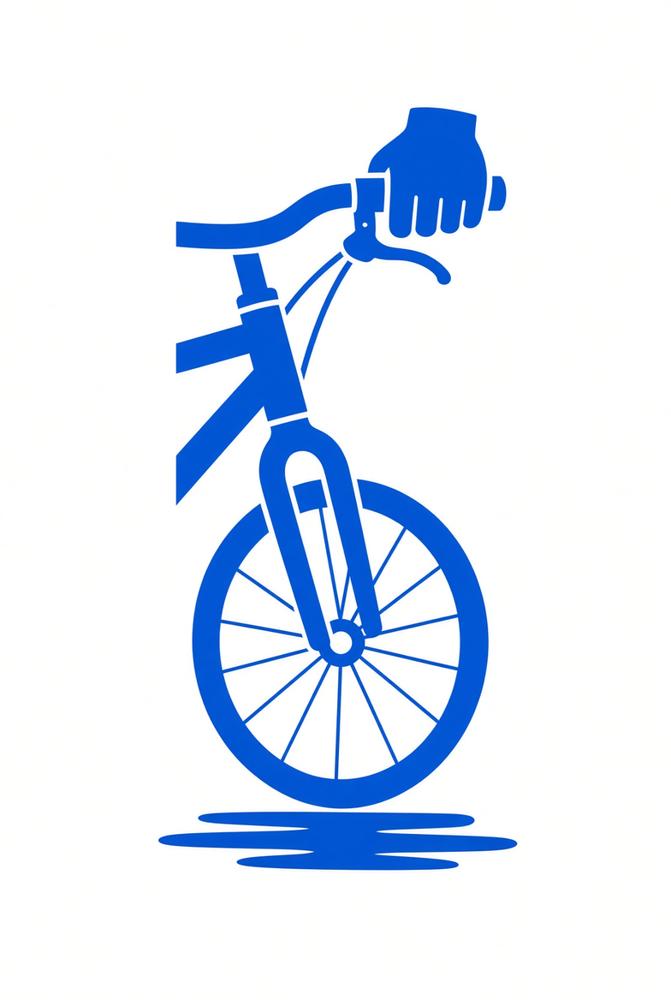
remmen
to brake
regelmatigrang 6000Transport & travelgetekend
- Scene
- a close view of a bicycle handlebar with one hand squeezing a brake lever, the front wheel below it, and a short thick skid streak lying on the ground behind the wheel; nothing else, no rider.
- Must read
- a hand squeezing a brake lever with a skid mark behind the wheel.
- Avoid
- a cyclist riding along freely (fietsen); a car standing in a bay (parkeren); a foot caught on a stone (struikelen); a cyclist standing still at a kerb (stoppen).
- Alt text
- Een hand knijpt in een remhendel; achter het wiel ligt een korte remstreep.
- Example
- Ik moest hard remmen, omdat er plotseling een kind overstak.
I had to brake hard because a child suddenly crossed the street.
remmen.png · rang 6000 · B2 regelmatig · lexicon woorden.tsv
geen beeld
ontwaken
to wake up
regelmatigrang 6029Movement & position
- Scene
- one adult sits upright in a plain bed with both arms stretched above the head and the mouth wide open in a yawn, the eyes just open; beside the bed a window shows a round sun with short straight rays.
- Must read
- a person sitting upright in bed with the arms stretched overhead in a yawn.
- Avoid
- a person lying asleep with the eyes shut (slapen); a person standing up out of the bed (opstaan); an alarm clock ringing (rinkelen); a person rubbing the eyes (wrijven); a moon.
- Alt text
- Iemand zit rechtop in bed met de armen boven het hoofd en een wijd open mond, naast een raam.
- Example
- Ik ontwaak als de zon opkomt.
I wake up when the sun rises.
ontwaken.png · rang 6029 · B2 regelmatig · lexicon woorden.tsv
geen beeld
rukken
to yank, to jerk
regelmatigrang 6040Body & health
- Scene
- One man stands with both fists at the chest and both elbows flung back, holding a short taut rope tied around a tree stump, his teeth bared. His knees are bent and his feet are planted wide on bare ground. The rope is short and straight, and nothing else is in the frame.
- Must read
- both fists at the chest and elbows flung back on a short taut rope tied to a stump.
- Avoid
- a team in a long tug of war (trekken); a person pushing a cart (duwen); a person hauling a heavy sack along the ground (slepen); a person throwing a rope (gooien).
- Alt text
- Een man houdt met twee vuisten bij de borst een strak touw vast dat om een boomstronk zit.
- Example
- Hij rukt aan het touw.
He yanks at the rope.
rukken.png · rang 6040 · B2 regelmatig · lexicon woorden.tsv
geen beeld
scannen
to scan
regelmatigrang 6041Abstract & general
- Scene
- one adult at a shop till holds a small box of cereal in one hand and moves it over a flat glass window in the counter; a thin straight beam runs from the glass across a striped barcode patch on the box; a bag stands open next to the till.
- Must read
- a box held over a glass window with a thin beam across its stripe patch.
- Avoid
- a person copying a sheet on a copier (kopiëren); a person weighing fruit on a scale (wegen); a person paying with coins at a till (betalen); a person packing items into a bag (inpakken); a person taking a photo of a box (fotograferen).
- Alt text
- Iemand houdt een doos boven een glazen ruitje in de toonbank; een dunne straal valt over het streepjespatroon.
- Example
- Ik scan mijn paspoort en mail het.
I scan my passport and email it.
scannen.png · rang 6041 · B2 regelmatig · lexicon woorden.tsv
geen beeld
annuleren
to cancel
regelmatigrang 6071Time
- Scene
- One adult sits on a sofa under a blanket with a phone held to one ear and a tissue in the other hand, looking unwell. Behind her on the door hangs a smart dress, unworn, with a pair of shoes on the floor beneath it.
- Must read
- the phone call from the sofa beside the unworn dress on the door.
- Avoid
- a person chatting and laughing on the phone (bellen); a person putting on a coat and shoes at the door (vertrekken); a person asleep in bed with a thermometer (slapen); a person typing a message at a computer (mailen)
- Alt text
- Een vrouw onder een deken houdt een telefoon aan haar oor; een mooie jurk hangt aan de deur.
- Example
- Eva is ziek en annuleert haar afspraak.
Eva is ill and cancels her appointment.
annuleren.png · rang 6071 · B2 regelmatig · lexicon woorden.tsv

blussen
to put out (a fire)
regelmatigrang 6075Work & jobsgetekend
- Scene
- one firefighter in helmet and coat aims a hose at a small fire in a waste skip; a strong jet of water hits the flames, which are already shrinking. Nobody else is in the picture, and smoke curls up above the skip.
- Must read
- a hose jet hitting flames.
- Avoid
- water sprayed at a plant (spuiten); a loaf burning in an oven (verbranden); water falling from a shower head (douchen); a candle blown out (blazen).
- Alt text
- Iemand van de brandweer richt een slang op de vlammen in een container; de straal raakt het vuur.
- Example
- De brandweer kan het vuur snel blussen.
The fire brigade can put out the fire quickly.
blussen.png · rang 6075 · B2 regelmatig · lexicon woorden.tsv
geen beeld
definiëren
to define
regelmatigrang 6079Abstract & general
- Scene
- One adult teacher stands beside a board that shows only a drawn chair, one hand held out open towards it as if explaining, mouth open. A few pupils sit at desks facing the board and listen. No letters or numbers on the board.
- Must read
- the teacher's open hand held out towards the drawn chair.
- Avoid
- a teacher pointing a finger at a pupil (wijzen); a teacher writing a long list on the board (opsommen); a teacher reading aloud from a book (voorlezen); a pupil holding up a hand with a question (vragen).
- Alt text
- Een leraar staat bij een bord en houdt een hand uit naar een afbeelding van een stoel, terwijl leerlingen luisteren.
- Example
- De leraar definieert het woord stoel.
The teacher defines the word chair.
definieren.png · rang 6079 · B2 regelmatig · lexicon woorden.tsv
geen beeld
manipuleren
to manipulate
regelmatigrang 6102Character & behaviour
- Scene
- A girl stands in front of her father with a sad drooping mouth, looking up at him, while he reaches into his back pocket for his wallet. Her other hand, hidden behind her back, is clenched in a small fist of triumph.
- Must read
- the sad face in front and the triumphant fist hidden behind.
- Avoid
- a child holding out an open palm (vragen); a child with a hand over a grinning mouth (liegen); a child crying with tears running (huilen); a child kneeling with clasped hands (smeken).
- Alt text
- Een meisje kijkt droevig naar haar vader, die in zijn zak voelt; achter haar rug zit een vuist.
- Example
- Eva manipuleert haar vader om een ijsje te krijgen.
Eva manipulates her father to get an ice cream.
manipuleren.png · rang 6102 · B2 regelmatig · lexicon woorden.tsv
geen beeld
raadplegen
to consult
regelmatigrang 6113Abstract & general
- Scene
- A man sits at a plain table with a thick open book in front of him. He follows a line on the page with the tip of one finger, a pen in his other hand, eyes on the page. Nothing else on the table.
- Must read
- the finger on the page, following one line.
- Avoid
- a man leaning back and reading a novel for pleasure (lezen); a man writing in a notebook (schrijven); a man asking another person across the table (vragen); a man typing on a laptop (typen); a closed book on a shelf.
- Alt text
- Een man zit aan een tafel en volgt met zijn vinger een regel in een dik boek.
- Example
- Piet raadpleegt het woordenboek.
Piet consults the dictionary.
raadplegen.png · rang 6113 · B2 regelmatig · lexicon woorden.tsv
geen beeld
verwoesten
to destroy, to devastate
regelmatigrang 6137Abstract & general
- Scene
- three houses stand in a row after a storm: the left one has its roof torn off, the middle one is half collapsed with a bent tree lying across it, and the right one lacks a wall; loose planks lie scattered; no person.
- Must read
- a row of houses with torn roofs and walls and a fallen tree across the middle one.
- Avoid
- a single building coming apart in the air (vernietigen); a house with flames in a window (branden); a person sweeping a floor (vegen); a tree falling in a forest (vallen).
- Alt text
- Drie huizen staan op een rij zonder dak of muur, met een omgevallen boom over het middelste en verspreide planken.
- Example
- De storm heeft het dorp verwoest.
The storm destroyed the village.
verwoesten.png · rang 6137 · B2 regelmatig · lexicon woorden.tsv
geen beeld
omvatten
to include
regelmatigrang 6182Abstract & general
- Scene
- A large park seen from directly above, enclosed by one continuous low hedge. Inside the hedge lie a round lake, a small wood of tree tops and a playground with a slide. One tiny adult stands on a path. Nothing outside the hedge.
- Must read
- one hedge line enclosing the lake, the wood and the playground.
- Avoid
- a single bucket holding some water (bevatten); a person drawing a circle on a map (tekenen); a gate standing open onto a street (openen); a fence with a single tree behind it (afsluiten).
- Alt text
- Een groot park van bovenaf wordt omringd door een lage heg, met een meer, bomen en een speeltuin erbinnen.
- Example
- Het park omvat een meer, een bos en een speeltuin.
The park includes a lake, a wood and a playground.
omvatten.png · rang 6182 · B2 regelmatig · lexicon woorden.tsv
geen beeld
ontvluchten
to flee from
regelmatigrang 6183Movement & position
- Scene
- one adult runs out through the doorway of a small house with flames licking out of its windows, the body leaning forward at full stride, the head turned back over the shoulder with wide eyes.
- Must read
- a running figure leaving the doorway of a house with flames at its windows.
- Avoid
- a person climbing out of a window (klimmen); a person running with nothing behind (rennen); a person pulling a hose at the fire (blussen); a person carrying a child out of a house (redden); a fire engine.
- Alt text
- Iemand snelt uit de deur van een huis met vlammen uit de ramen en kijkt achterom.
- Example
- De familie ontvlucht het brandende huis.
The family flees the burning house.
ontvluchten.png · rang 6183 · B2 regelmatig · lexicon woorden.tsv
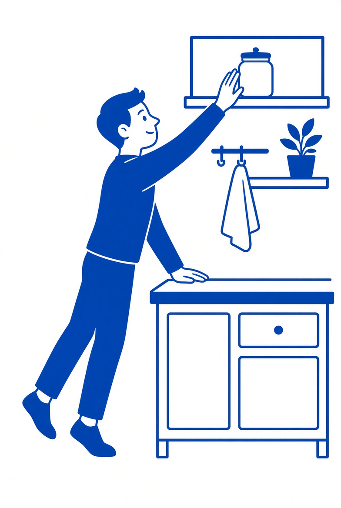
reiken
to reach (for)
regelmatigrang 6190Movement & positiongetekend
- Scene
- one adult stands on tiptoe in a kitchen, one arm stretched as far as it goes towards a jar on the top shelf, the fingertips just short of it. The heels are off the floor and the free hand presses on the counter for balance.
- Must read
- fingertips stretched towards a jar just out of reach.
- Avoid
- a hand closing round a mug on a shelf (pakken); a suitcase held above the head (tillen); a person on a ladder (klimmen); a fingertip on a glass (raken).
- Alt text
- Iemand staat op de tenen en strekt een arm naar een pot op de bovenste plank, net te ver.
- Example
- De jongen reikt naar het boek op de plank.
The boy reaches for the book on the shelf.
reiken.png · rang 6190 · B2 regelmatig · lexicon woorden.tsv
geen beeld
stikken
to suffocate, to choke
regelmatigrang 6195Abstract & general
- Scene
- one man bends forward with both hands around his own throat, eyes wide and mouth wide open; a half-eaten bread roll lies on a plate on the table in front of him.
- Must read
- both hands around the throat and a wide-open mouth beside a half-eaten roll.
- Avoid
- a person coughing into a fist (hoesten); a person screaming with hands on the cheeks (gillen); a person swallowing a drink (slikken); a person talking at a table (praten).
- Alt text
- Een man buigt voorover met beide handen om zijn keel; op tafel ligt een half opgegeten broodje.
- Example
- Hij stikt bijna in een stuk brood.
He nearly chokes on a piece of bread.
stikken.png · rang 6195 · B2 regelmatig · lexicon woorden.tsv
geen beeld
verhuren
to rent out
regelmatigrang 6208Abstract & general
- Scene
- One adult man stands in the open door of a small room with a bed and hands a key to a young woman on the threshold. She holds out folded notes in her other hand. Both look at the key. Nothing else in the room but the bed.
- Must read
- the key going one way and the money going the other.
- Avoid
- a woman handing money to a man to get a key (huren); a man with a house sign selling a building (verkopen); a man handing a key to a friend without money (lenen); a man painting the walls of the room (schilderen).
- Alt text
- Een man overhandigt in de deuropening van een kamertje een sleutel aan een jonge vrouw met geld in haar hand.
- Example
- Mark verhuurt een kamer aan een student.
Mark rents a room to a student.
verhuren.png · rang 6208 · B2 regelmatig · lexicon woorden.tsv
geen beeld
verklappen
to give away (a secret)
regelmatigrang 6210Movement & position
- Scene
- one adult leans close to the ear of a second adult with the hand cupped beside the mouth to whisper while looking sideways over the shoulder; the second adult's eyes are wide and the mouth open; a small wrapped parcel with a bow stands behind the second adult.
- Must read
- a cupped hand beside the mouth at a second person's ear with wide eyes, beside a wrapped parcel.
- Avoid
- two people talking loudly face to face (praten); a person shouting through a megaphone (roepen); a person writing a note (schrijven); a person covering their own mouth (zwijgen); a person giving a parcel (geven).
- Alt text
- Iemand fluistert met een hand naast de mond in het oor van een ander met grote ogen.
- Example
- Ik mag niet verklappen wat er in het pakje zit.
I must not give away what is in the parcel.
verklappen.png · rang 6210 · B2 regelmatig · lexicon woorden.tsv
geen beeld
vloeien
to run smoothly
regelmatigrang 6213Movement & position
- Scene
- One river winds down a slope between two banks as a ribbon with small wave lines, one tree on each bank; the slope is plain and bare, the river narrows toward the top, and no bridge, boat, house or person is in the frame.
- Must read
- A stream running down a slope in a curving ribbon.
- Avoid
- drops falling from a tap (druppelen); a jug pouring into a glass (gieten); water coming out of a pipe (lekken); a sea with waves (golven).
- Alt text
- Een smalle rivier slingert van een helling omlaag tussen twee oevers met een boom aan elke kant.
- Example
- De rivier vloeit door de vallei naar zee.
The river flows through the valley to the sea.
vloeien.png · rang 6213 · B2 regelmatig · lexicon woorden.tsv
geen beeld
zweven
to hover
regelmatigrang 6216Abstract & general
- Scene
- a single hot-air balloon with a basket hangs high in an empty sky above a small hill, a wide gap of open air between the basket and the hilltop; no ropes to the ground.
- Must read
- a balloon and basket hanging in empty air with clear air beneath.
- Avoid
- a balloon sinking to the ground (dalen); a bird beating its wings (vliegen); a boat on water (drijven); an object falling (vallen).
- Alt text
- Een luchtballon met een mand hangt hoog boven een heuvel, met veel lege lucht eronder.
- Example
- De ballon zweeft boven de stad.
The balloon floats above the city.
zweven.png · rang 6216 · B2 regelmatig · lexicon woorden.tsv
geen beeld
rouwen
to mourn
regelmatigrang 6254Emotion & feeling
- Scene
- one adult stands with a bowed head and clasped hands in front of a plain rounded stone set on a low mound of earth; a single flower lies at the foot of the stone.
- Must read
- a bowed head and clasped hands before a plain rounded stone on a low mound.
- Avoid
- a person crying with both hands on the face (huilen); a person laying a flower on a table (geven); a person standing at a window looking out (wachten); a person walking away with a bag (lopen).
- Alt text
- Iemand staat met gebogen hoofd en gevouwen handen voor een gladde ronde steen op een lage heuvel.
- Example
- Zij rouwt om haar moeder.
She is mourning her mother.
rouwen.png · rang 6254 · B2 regelmatig · lexicon woorden.tsv
geen beeld
smokkelen
to smuggle, to transport contraband
regelmatigrang 6257Transport & travel
- Scene
- A boy walks through a cinema doorway in a coat that bulges at the chest, with the corner of a bag of sweets just showing at his pocket. He glances sideways at an attendant at the door, who is looking the other way. Nothing else in the frame.
- Must read
- the bulging coat with sweets showing while the attendant looks away.
- Avoid
- a boy crouched behind a wall out of sight (verstoppen); a boy eating sweets openly in a seat (snoepen); a boy paying for sweets at a counter (kopen); a boy grabbing sweets off a shelf (stelen).
- Alt text
- Een jongen loopt met een uitpuilende jas een deur door en kijkt schuin naar een medewerker die wegkijkt.
- Example
- Sam smokkelt snoep de bioscoop in.
Sam smuggles sweets into the cinema.
smokkelen.png · rang 6257 · B2 regelmatig · lexicon woorden.tsv
geen beeld
splitsen
to split, to divide
regelmatigrang 6259Abstract & general
- Scene
- an axe stands in a log on a chopping block and the log falls apart in two halves, one to each side of the blade; the halves tilt outward in mid-fall, and no person, second log or pile of wood is in the frame.
- Must read
- one log in two halves falling apart on either side of an axe.
- Avoid
- an axe chopping into a whole log (hakken); a saw cutting a plank (zagen); a stick snapped over a knee (breken); a cake shared on plates (delen).
- Alt text
- Een bijl staat in een blok hout dat in twee helften uiteenvalt, een aan elke kant.
- Example
- Hij splitst het blok hout in twee delen.
He splits the log into two parts.
splitsen.png · rang 6259 · B2 regelmatig · lexicon woorden.tsv
geen beeld
verduren
to endure
regelmatigrang 6271Abstract & general
- Scene
- One man stands next to a plain bus stop post in heavy rain, shoulders hunched and chin tucked, hands deep in his pockets, rain lines falling on him. He stays where he is and looks straight ahead. No shelter and no umbrella.
- Must read
- the hunched man staying put in the rain.
- Avoid
- a man looking at his watch under a roof (wachten); a man running through rain (rennen); a man holding an umbrella (schuilen); a man shaking a fist at the sky (klagen).
- Alt text
- Een man staat met opgetrokken schouders en zijn handen in zijn zakken, terwijl water op hem neerdaalt, bij een paal.
- Example
- Jan verduurt de regen bij de bushalte.
Jan endures the rain at the bus stop.
verduren.png · rang 6271 · B2 regelmatig · lexicon woorden.tsv
geen beeld
verwarren
to confuse
regelmatigrang 6273Abstract & general
- Scene
- one adult stands between two adults of identical build in identical clothes, with a hand laid on each one's shoulder, the brows pulled together and the head tilted in a puzzled look at one of them.
- Must read
- a puzzled face between two identical-looking people.
- Avoid
- a person comparing two apples in the hands (vergelijken); a person pointing at two people (wijzen); a person choosing one of two jars (kiezen); a person rubbing the eyes (wrijven); question marks.
- Alt text
- Een persoon met een frons staat tussen twee gelijk geklede mensen en legt op elk een hand op de schouder.
- Example
- Ik verwar de tweeling vaak met elkaar.
I often mix up the twins.
verwarren.png · rang 6273 · B2 regelmatig · lexicon woorden.tsv
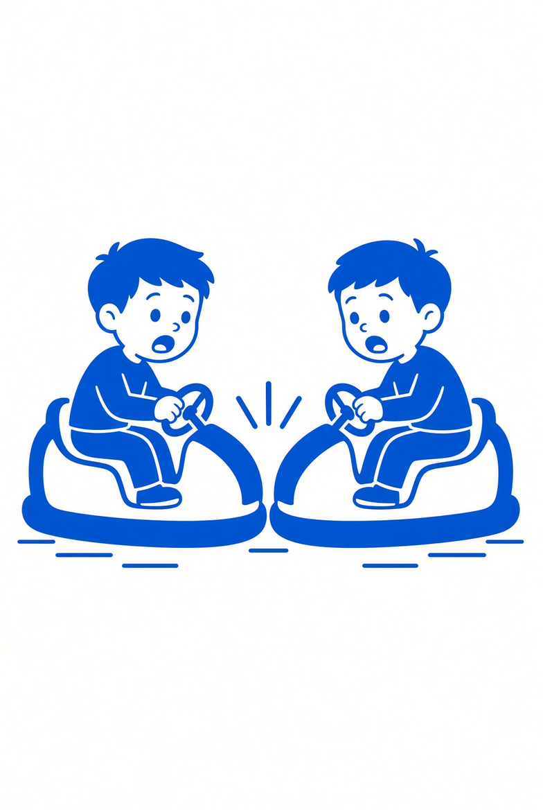
botsen
to bump (into)
regelmatigrang 6290Transport & travelgetekend
- Scene
- two children in bumper cars at a fair meet front to front, both jolted forward in their seats, with short lines at the point of contact. Each child grips a small steering wheel with both hands, mouth open in surprise; the floor is otherwise empty.
- Must read
- two bumper cars meeting nose to nose.
- Avoid
- a car standing in a bay (parkeren); a knee bumped on a table (stoten); a cyclist squeezing the brakes (remmen); a car driving along a road (rijden).
- Alt text
- Twee kinderen in autootjes op de kermis komen met de neuzen tegen elkaar en schieten naar voren.
- Example
- De fietser botst tegen een geparkeerde auto.
The cyclist crashes into a parked car.
botsen.png · rang 6290 · B2 regelmatig · lexicon woorden.tsv
geen beeld
coachen
to coach
regelmatigrang 6293Sport & games
- Scene
- one adult stands at the edge of a sports field with one hand on the shoulder of a young player who has a ball at the feet and sweeps the other arm out over the pitch.
- Must read
- a hand on a young player's shoulder and the other arm sweeping across the field.
- Avoid
- a player kicking a ball at a goal (schoppen); an adult pointing at a faraway thing (wijzen); an adult blowing a whistle (fluiten); two people just talking at a table (praten).
- Alt text
- Een volwassene staat aan de rand van een veld met een hand op de schouder van een jonge speler.
- Example
- Hij coacht het meisjesteam van onze club.
He coaches the girls' team of our club.
coachen.png · rang 6293 · B2 regelmatig · lexicon woorden.tsv
geen beeld
concurreren
to compete
regelmatigrang 6295Character & behaviour
- Scene
- Two adults each stand in front of their own small bakery, one on each side of a narrow street, arms crossed over the chest. Each owner glares across the street at the other shop. Bread in each shop window is visible; nothing else in the picture.
- Must read
- two owners facing each other across the street with crossed arms.
- Avoid
- a baker handing a loaf to a customer (verkopen); two bakers shaking hands; two people racing; a crowd of customers; a price sign with numbers.
- Alt text
- Twee bakkers staan met over elkaar geslagen armen voor hun winkel, aan weerszijden van een smalle straat.
- Example
- De twee bakkers concurreren met elkaar.
The two bakers compete with each other.
concurreren.png · rang 6295 · B2 regelmatig · lexicon woorden.tsv
geen beeld
innen
to collect (a payment)
regelmatigrang 6307Movement & position
- Scene
- One adult woman stands in a front doorway holding out one open hand, palm up. A man faces her and drops a few round coins into her palm. Seen from the side, the coins caught in the air between the hands. A small tin box hangs from her other arm.
- Must read
- the coins dropping into the woman's open palm.
- Avoid
- a cashier at a till handing change back (betalen); a person pocketing coins in secret (stelen); a person putting coins into a piggy bank (sparen); a person holding a bill and a pen; a crowd queueing.
- Alt text
- Een vrouw staat bij een voordeur met een open hand waarin een man munten laat vallen.
- Example
- Els int het geld voor de club.
Els collects the money for the club.
innen.png · rang 6307 · B2 regelmatig · lexicon woorden.tsv
geen beeld
joggen
to jog
regelmatigrang 6308Abstract & general
- Scene
- One adult jogs along a park path between trees with loose fists, an upright body and one foot just off the ground in a short easy stride; the face is calm with the mouth closed, and no other runner or dog is in the frame.
- Must read
- A runner at an easy pace with loose fists and an upright body on a park path.
- Avoid
- a sprinter with open mouth and long stride (rennen); a person walking (wandelen); a person on a bicycle (fietsen); a person bent over panting (hijgen).
- Alt text
- Iemand beweegt zich in een rustige draf over een pad tussen bomen.
- Example
- Ik jog elke ochtend door het park.
I jog through the park every morning.
joggen.png · rang 6308 · B2 regelmatig · lexicon woorden.tsv
geen beeld
kruisen
to cross
regelmatigrang 6312Movement & position
- Scene
- seen from above, two straight roads meet in the middle at right angles and each carries one small car heading toward the middle junction; the roads are drawn as plain double lines on flat ground, and no person, tree or building is in the frame.
- Must read
- two straight roads meeting in the middle, one car on each.
- Avoid
- two cars driving side by side on one road (inhalen); a single car on a curved road (rijden); a car parked at the roadside (parkeren); two people passing on a narrow bridge (passeren).
- Alt text
- Van boven gezien snijden twee rechte wegen elkaar in het midden en op elke weg komt een auto aan.
- Example
- Twee wegen kruisen elkaar in het dorp.
Two roads cross in the village.
kruisen.png · rang 6312 · B2 regelmatig · lexicon woorden.tsv
geen beeld
observeren
to observe
regelmatigrang 6323Abstract & general
- Scene
- one adult stands on a low rock holding binoculars to the eyes with both hands, the body turned to the right; a small bird flies far away in the upper right.
- Must read
- binoculars held to the eyes with both hands, a small bird far away on the right.
- Avoid
- a person looking with a magnifier at the ground (ontdekken); a person shading the eyes with a flat hand (zoeken); a person taking a photo (fotograferen); a person looking out of a window (kijken).
- Alt text
- Iemand staat op een steen met een verrekijker voor de ogen, gericht op een klein vogeltje in de verte.
- Example
- Hij observeert de vogels in het park.
He observes the birds in the park.
observeren.png · rang 6323 · B2 regelmatig · lexicon woorden.tsv
geen beeld
plagen
to pester, to tease
regelmatigrang 6329Abstract & general
- Scene
- Two boys stand close to their little sister, pointing at her with fingers and laughing; she stands with her head bowed and her arms pulled in. The boys lean toward her with wide grins, and her hands are clasped in front of her. The three stand on bare ground with nothing else in the frame.
- Must read
- a ring of laughing children pointing at one child with a bowed head.
- Avoid
- a fist landing on a child (slaan); children playing a game together (spelen); one child giggling alone (giechelen); a hand tickling a child (kietelen).
- Alt text
- Twee kinderen wijzen lachend met een vinger naar een derde dat met gebogen hoofd tussen hen in staat.
- Example
- Hij plaagt zijn zusje.
He teases his little sister.
plagen.png · rang 6329 · B2 regelmatig · lexicon woorden.tsv
geen beeld
reguleren
to regulate
regelmatigrang 6331Abstract & general
- Scene
- A street with cars parked neatly in marked bays. A woman in a uniform with a cap walks slowly along the row and looks at each car in turn. No signs with text and no numbers.
- Must read
- the neat rows in their bays and the woman walking along them.
- Avoid
- a woman bending to inspect one car closely (controleren); a driver steering a car into a bay (parkeren); a woman handing a paper slip to a driver (bekeuren); a woman holding up a flat palm to stop a car (stoppen).
- Alt text
- Een vrouw in uniform loopt langs een rij auto's die netjes tussen strepen staan.
- Example
- De gemeente reguleert het parkeren in de stad.
The council regulates parking in the city.
reguleren.png · rang 6331 · B2 regelmatig · lexicon woorden.tsv
geen beeld
schaden
to damage, to harm, to hurt
regelmatigrang 6334Body & health
- Scene
- One girl stands in a garden bed holding an empty watering can upside down. Around her the plants hang limp, their stems bent over and their leaves drooping to the soil; the cracked dry earth is drawn with a few lines. She looks at the plants with a worried face.
- Must read
- the limp, drooping plants around the girl.
- Avoid
- a girl watering fresh upright plants (besproeien); a girl cutting a stem with scissors (knippen); a girl pulling a plant out of the soil (plukken); a single dead tree (sterven).
- Alt text
- Een meisje staat met een lege kan tussen slappe stengels met hangende bladeren.
- Example
- De droogte schaadt de planten.
The drought harms the plants.
schaden.png · rang 6334 · B2 regelmatig · lexicon woorden.tsv
geen beeld
vergaderen
to hold a meeting
regelmatigrang 6352People & relations
- Scene
- four adults sit around a long table; one holds an open palm up while speaking and another holds a pen over a pad, the other two look at the speaker.
- Must read
- four people around a table, one with a raised open palm, one with a pen over a pad.
- Avoid
- four people with a plate each (dineren); a teacher before a class (onderwijzen); two people with a bar each above the head (praten); a person presenting a folder to a boss (rapporteren); a screen on the wall.
- Alt text
- Vier mensen zitten rond een lange tafel; een houdt een open hand omhoog en een ander een pen.
- Example
- We vergaderen elke maandag om negen uur.
We hold a meeting every Monday at nine.
vergaderen.png · rang 6352 · B2 regelmatig · lexicon woorden.tsv
geen beeld
vernielen
to vandalise, to wreck
regelmatigrang 6354Abstract & general
- Scene
- One youth swings a long metal pole against a glass wall of a bus shelter; the glass cracks and shards fly outward. The youth's feet are planted wide and both hands grip the pole high. The bus shelter has a plain bench inside, and no other people or vehicles appear in the frame.
- Must read
- a long pole swung into a glass wall with shards flying out.
- Avoid
- a glass dropping on the floor (breken); a person kicking a ball (schoppen); a person hitting a nail with a hammer (timmeren); a person painting a wall (schilderen).
- Alt text
- Een jongen zwaait met een lange stang tegen een glazen wand van een bushalte; scherven vliegen weg.
- Example
- Jongeren vernielen de bushalte.
Youths vandalise the bus stop.
vernielen.png · rang 6354 · B2 regelmatig · lexicon woorden.tsv
geen beeld
adverteren
to advertise, to place an advertisement
regelmatigrang 6364Places & geography
- Scene
- One adult sits at a table with a newspaper open in front of her; one whole page is filled by a big picture of a bicycle, and she points at it with a finger. No text on the page.
- Must read
- the big bicycle picture placed on the newspaper page.
- Avoid
- a person reading the paper with small print (lezen); a person handing a bicycle to a buyer (verkopen); a person riding a bicycle (fietsen); a person taking a photo of a bicycle (fotograferen).
- Alt text
- Een vrouw wijst aan een tafel naar een grote foto van een fiets in een opengeslagen krant.
- Example
- Jan adverteert in de krant.
Jan advertises in the newspaper.
adverteren.png · rang 6364 · B2 regelmatig · lexicon woorden.tsv
geen beeld
bekleden
to cover
regelmatigrang 6370Work & jobs
- Scene
- one adult kneels at a plain wooden chair seat and pulls a stretched sheet of fabric tight over it with one hand while the other holds a staple gun against the underside edge; one edge is already fixed and a loose corner still hangs.
- Must read
- a stretched fabric sheet pulled tight over a chair seat with a staple gun against the edge.
- Avoid
- a person sitting on a chair (zitten); a person painting a chair with a brush (verven); a person nailing a plank (spijkeren); a person throwing a blanket over a table (leggen); a person carrying a chair (dragen).
- Alt text
- Iemand trekt een stuk stof strak over een stoelzitting en houdt een nietmachine tegen de rand.
- Example
- We laten de oude stoelen opnieuw bekleden.
We are having the old chairs reupholstered.
bekleden.png · rang 6370 · B2 regelmatig · lexicon woorden.tsv
geen beeld
ontploffen
to explode
regelmatigrang 6401Abstract & general
- Scene
- One drum in an empty yard bursts open at the top in a cloud of sharp points with fragments flying; far away one adult runs with both hands over the head.
- Must read
- A drum bursting into sharp fragments with a spiked cloud.
- Avoid
- a balloon bursting (knallen); a campfire with flames (branden); a plate breaking on the floor (breken); a cracked pot (barsten).
- Alt text
- Een ton op een leeg erf springt open in een wolk met scherpe punten en rondvliegende stukken.
- Example
- De gasfles ontploft met een harde knal.
The gas cylinder explodes with a loud bang.
ontploffen.png · rang 6401 · B2 regelmatig · lexicon woorden.tsv
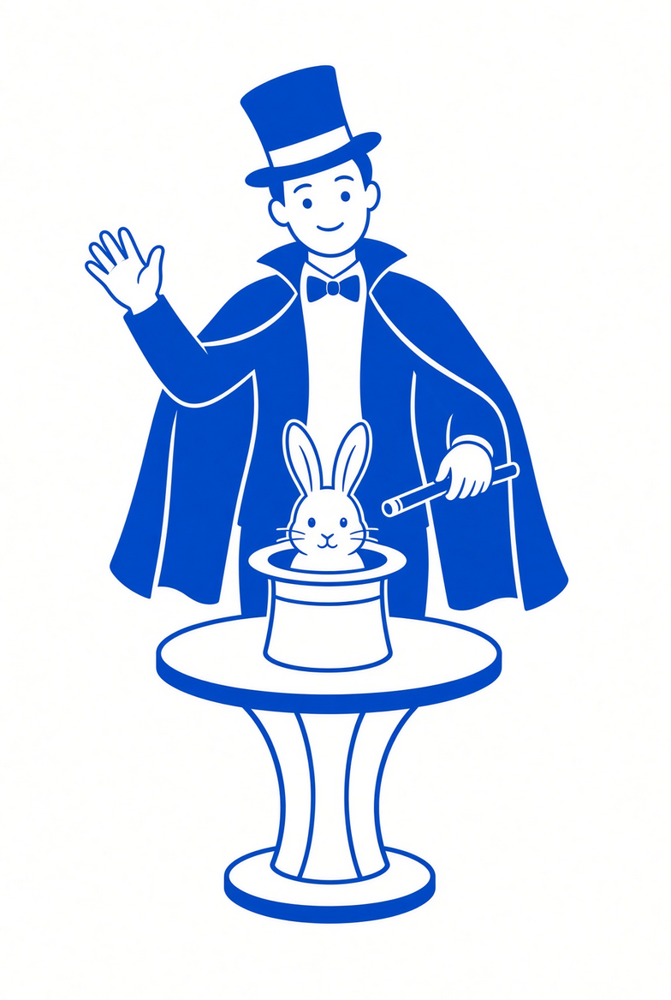
toveren
to do magic
regelmatigrang 6415Arts & mediagetekend
- Scene
- one magician in a top hat and cape holds a short wand over an upside-down hat on a table, and a rabbit's head pops out of the hat; the magician's other hand is raised.
- Must read
- a rabbit popping out of a hat under a wand.
- Avoid
- an object hidden behind the back (verbergen); a figure half behind a wall (verdwijnen); a person juggling balls; a rope pulled with both hands (trekken).
- Alt text
- Iemand met een hoge hoed houdt een stokje boven een hoed waar een konijn uit komt.
- Example
- De goochelaar tovert een konijn uit zijn hoed.
The magician conjures a rabbit out of his hat.
toveren.png · rang 6415 · B2 regelmatig · lexicon woorden.tsv
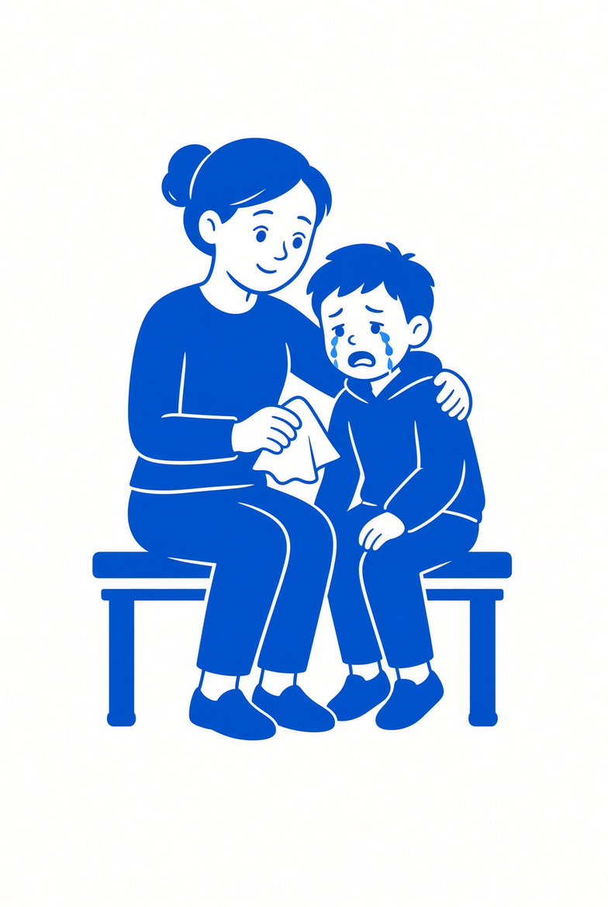
troosten
to comfort
regelmatigrang 6417Emotion & feelinggetekend
- Scene
- one adult sits on a bench beside a crying child, one arm round the child's shoulders and the other hand offering a tissue; the child leans against the adult. Nobody else is in the picture.
- Must read
- an arm round a crying child's shoulders.
- Avoid
- a person crying alone (huilen); a bandage round an arm (verbinden); a child hugging a teddy (knuffelen); lips on a cheek (zoenen).
- Alt text
- Iemand zit naast een huilend kind, een arm om de schouders, en biedt een zakdoekje aan.
- Example
- Ik probeer mijn huilende zoontje te troosten.
I try to comfort my crying little son.
troosten.png · rang 6417 · B2 regelmatig · lexicon woorden.tsv
geen beeld
faciliteren
to facilitate
regelmatigrang 6453Abstract & general
- Scene
- One woman puts a row of chairs in a big empty hall while one man carries a table through the door. A small group of people stands waiting in the doorway, looking in. The hall is bare except for chairs and the table.
- Must read
- the chairs and the table being set up in the empty hall for the waiting group.
- Avoid
- a person cleaning the floor of a hall (schoonmaken); a person giving a speech to a full hall (spreken); a person helping an old man up the stairs (helpen); a person paying at a counter (betalen).
- Alt text
- Een vrouw zet stoelen in een lege zaal terwijl een man een tafel binnendraagt en mensen wachten.
- Example
- De gemeente faciliteert het feest met een zaal en tafels.
The council provides the party with a hall and tables.
faciliteren.png · rang 6453 · B2 regelmatig · lexicon woorden.tsv
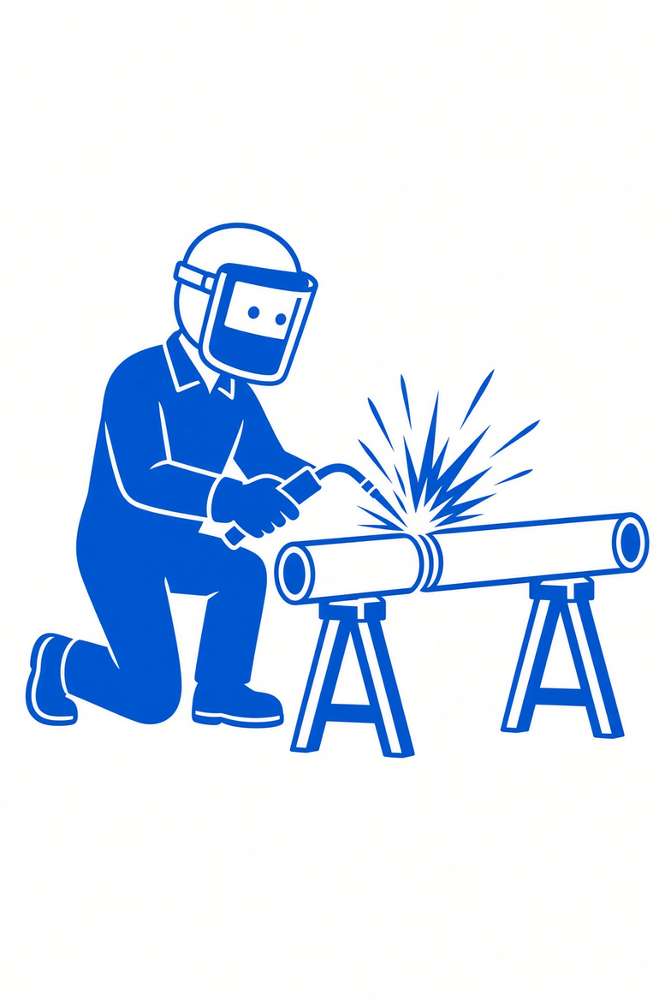
lassen
to weld
regelmatigrang 6470Technology & toolsgetekend
- Scene
- one worker in a face shield kneels beside two metal pipes and holds a torch to the joint between them; a burst of sparks flies from the point. The pipes rest on two trestles and nothing else is in the picture.
- Must read
- sparks flying from a torch at the joint of two pipes.
- Avoid
- a drill going into a wall (boren); a saw through a plank (zagen); a hose aimed at flames (blussen); a hammer on a nail (maken).
- Alt text
- Een arbeider met een kap voor het gezicht houdt een brander tegen de naad van twee buizen; er spatten vonken.
- Example
- De monteur gaat de kapotte pijp lassen.
The mechanic is going to weld the broken pipe.
lassen.png · rang 6470 · B2 regelmatig · lexicon woorden.tsv
geen beeld
corrigeren
to correct
regelmatigrang 6530Abstract & general
- Scene
- one adult sits at a desk with a stack of sheets beside them and a pen that is drawing a ring around one single scribbled word on the top sheet, the other hand holding the sheet flat.
- Must read
- a pen drawing a ring around one scribbled word on a sheet.
- Avoid
- a pencil drawing a straight line beside a wobbly line (verbeteren); a person writing on a clean sheet (schrijven); a person reading a book (lezen); an eraser rubbing out a box (wijzigen); a pen with a long handle.
- Alt text
- Iemand zit aan een bureau en zet met een pen een ring om één krabbel op een vel.
- Example
- De leraar corrigeert de toetsen.
The teacher corrects the tests.
corrigeren.png · rang 6530 · B2 regelmatig · lexicon woorden.tsv
geen beeld
lusten
to like (to eat)
regelmatigrang 6550People & relations
- Scene
- One child sits at a table and pushes a plate piled with small round sprouts away with one hand, lips pressed together, head turned away. A fork lies unused beside the plate, and the child's other arm hangs by the side. No other people are in the frame.
- Must read
- a hand pushing away a plate of small round sprouts, lips pressed together.
- Avoid
- a child lifting a spoon to the mouth (eten); a child throwing food on the floor (gooien); a child crying (huilen); a child chewing (kauwen).
- Alt text
- Een kind schuift met een hand een bord vol kleine bolletjes weg en draait het hoofd om.
- Example
- Mijn zoon lust geen spruitjes.
My son does not like sprouts.
lusten.png · rang 6550 · B2 regelmatig · lexicon woorden.tsv
geen beeld
misleiden
to mislead
regelmatigrang 6554Abstract & general
- Scene
- One adult seller smiles broadly beside a car and points at its good side, while his other arm covers a big dent on the near side. A customer stands facing the good side, looking pleased and seeing nothing wrong.
- Must read
- the seller's arm hiding the dent while he points at the good side.
- Avoid
- a person with fingers crossed behind the back (liegen); two people shaking hands over a car for money (verkopen); a shopkeeper hiding coins behind his back (bedriegen); a person showing the way with a map
- Alt text
- Een man wijst naar de mooie kant van een auto; zijn arm bedekt een grote deuk.
- Example
- De verkoper misleidt de koper.
The seller misleads the buyer.
misleiden.png · rang 6554 · B2 regelmatig · lexicon woorden.tsv
geen beeld
noteren
to note down
regelmatigrang 6558Money & trade
- Scene
- one adult stands holding a small notebook open in one hand and a pen in the other that is just touching the page, the head tilted down; the other adult is facing them and talking, mouth open.
- Must read
- a pen touching a small notebook held open in one hand.
- Avoid
- a person typing on a laptop (typen); a person reading a book (lezen); a person drawing a picture (tekenen); a person writing a long letter at a desk (schrijven); a person taking a photograph of a page (fotograferen).
- Alt text
- Iemand houdt een opengeslagen boekje in één hand en zet er met een pen een regel in.
- Example
- Ik noteer je telefoonnummer in mijn agenda.
I note down your phone number in my diary.
noteren.png · rang 6558 · B2 regelmatig · lexicon woorden.tsv
geen beeld
runnen
to run (a business)
regelmatigrang 6575Movement & position
- Scene
- One adult in an apron stands behind the counter of a small shop, setting a jar on a shelf with one hand and handing coins of change to a customer with the other. Shelves behind her are full. She is clearly the only one working there.
- Must read
- the woman alone behind the counter, handling everything herself.
- Avoid
- a woman only sweeping the floor (schoonmaken); a woman unloading boxes from a van (bezorgen); a woman asleep behind an empty counter (slapen); a customer browsing the shelves (winkelen).
- Alt text
- Een vrouw achter een toonbank zet een pot in het rek en geeft wisselgeld aan een klant.
- Example
- Anna runt een kleine winkel.
Anna runs a small shop.
runnen.png · rang 6575 · B2 regelmatig · lexicon woorden.tsv
geen beeld
streamen
to stream
regelmatigrang 6576Nature & weather
- Scene
- One adult sits slumped in the corner of a sofa with a laptop on the knees; the screen shows two small figures sitting at a table; a cushion lies beside the adult, the feet are tucked up, and no television or headphones appear in the frame.
- Must read
- A person on a sofa with a laptop on the knees showing tiny figures at a table.
- Avoid
- a person watching a television across the room (kijken); a cloud above a laptop with falling squares (downloaden); a person reading (lezen); a person with headphones (luisteren).
- Alt text
- Iemand zit onderuit op een bank met een laptop op de knieën waarop twee kleine figuurtjes aan een tafel zitten.
- Example
- We streamen elke avond een serie.
We stream a series every evening.
streamen.png · rang 6576 · B2 regelmatig · lexicon woorden.tsv
geen beeld
verheugen
to be happy
regelmatigrang 6581Emotion & feeling
- Scene
- one child sits beaming on a packed suitcase beside the front door with clasped hands, looking at the door. Its legs swing off the floor, the door is closed and plain, and no other person or toy is in the frame.
- Must read
- a wide smile on a child sitting on a packed suitcase beside a door.
- Avoid
- a person waiting by a clock (wachten); a person on a train (reizen); a person laughing aloud (lachen); a person packing a case (pakken).
- Alt text
- Een kind zit stralend met gevouwen handen op een volle koffer naast de voordeur en kijkt naar de deur.
- Example
- Ik verheug me op de vakantie.
I am looking forward to the holiday.
verheugen.png · rang 6581 · B2 regelmatig · lexicon woorden.tsv
geen beeld
citeren
to quote
regelmatigrang 6592Abstract & general
- Scene
- one adult stands in front of a small seated group with both hands raised beside the head, the first two fingers of each hand bent twice, and the mouth open in speech.
- Must read
- both hands raised beside the head with two crooked fingers each, the mouth open.
- Avoid
- two hands waving (zwaaien); a person reading aloud from a book to a child (voorlezen); a person holding a megaphone (verkondigen); a person counting on raised fingers (tellen).
- Alt text
- Iemand praat met beide handen naast het hoofd, elk met twee gebogen vingers, tegen een zittend groepje.
- Example
- De leraar citeert een beroemd gedicht.
The teacher quotes a famous poem.
citeren.png · rang 6592 · B2 regelmatig · lexicon woorden.tsv
geen beeld
implementeren
deploy
regelmatigrang 6608Technology & tools
- Scene
- In a plain office two adults carry a new computer on a tray towards a desk with a monitor, where a woman stands waiting. The old computer sits unplugged on the floor beside the desk with its cable lying loose.
- Must read
- the new computer arriving while the old one stands aside.
- Avoid
- a technician kneeling to connect a cable under the desk (installeren); a person typing at a keyboard (werken); a person pointing at a diagram on a whiteboard (plannen); a person throwing the old computer in a bin (weggooien).
- Alt text
- Twee mannen dragen een nieuwe computer naar een bureau waar een vrouw wacht; op de vloer staat een oude.
- Example
- Het bedrijf implementeert een nieuw systeem.
The company is implementing a new system.
implementeren.png · rang 6608 · B2 regelmatig · lexicon woorden.tsv
geen beeld
intimideren
to intimidate
regelmatigrang 6610Character & behaviour
- Scene
- a very tall adult stands close with hands on hips and looks down, chest forward; a much smaller person presses back against a wall with both hands raised near the chin.
- Must read
- a tall figure looming close over a small figure pressed against a wall.
- Avoid
- a clenched fist held out at a person (bedreigen); a hand pushing a person (duwen); an adult bending down to help a child (helpen); an adult bending down to ask a question (vragen).
- Alt text
- Een lange man staat met de handen op de heupen over een kleinere gebogen die tegen een muur staat.
- Example
- Hij intimideert de nieuwe leerling.
He intimidates the new pupil.
intimideren.png · rang 6610 · B2 regelmatig · lexicon woorden.tsv
geen beeld
transformeren
to transform
regelmatigrang 6643Abstract & general
- Scene
- One woman stands beside a long wall holding a paint roller. The left half of the wall is plain and dull; the right half is covered in a bold cobalt pattern of large shapes. Paint pots stand at her feet. She looks at the border between the two halves.
- Must read
- the wall split into a plain half and a patterned half.
- Avoid
- a woman rolling plain paint on a bare wall (verven); a woman hanging a frame on a wall (ophangen); a woman cleaning a dirty wall with a sponge (schoonmaken); a woman knocking a hole in the wall (slopen); a whole wall already finished.
- Alt text
- Een vrouw met een verfroller staat bij een muur die links kaal is en rechts een groot patroon heeft.
- Example
- Eva transformeert haar saaie kamer.
Eva transforms her boring room.
transformeren.png · rang 6643 · B2 regelmatig · lexicon woorden.tsv
geen beeld
vreten
to gobble, to scoff
regelmatigrang 6651Abstract & general
- Scene
- a dog stands over a floor bowl with its muzzle deep inside, the ears swung forward and the tail held stiff, the bowl half empty; the dog is alone on a plain floor, and no person, bone, second bowl or cat is in the frame.
- Must read
- a dog's muzzle deep inside a bowl, the ears swung forward.
- Avoid
- a person eating with a fork (eten); a dog drinking water (drinken); a dog chewing a bone (kluiven); a person biting a sandwich (bijten); a cat at a bowl.
- Alt text
- Een hond staat met de kop diep in een kom en de oren hangen naar voren.
- Example
- De hond vreet zijn bak leeg.
The dog gobbles up his whole bowl.
vreten.png · rang 6651 · B2 regelmatig · lexicon woorden.tsv
geen beeld
bloeien
to bloom
regelmatigrang 6665Plants & farming
- Scene
- one tree stands on flat ground with every branch crowded with small open flowers and a few petals floating down; the trunk is straight, the ground below is bare apart from a scatter of petals, and no person is in the frame.
- Must read
- a tree with every branch crowded with small open flowers.
- Avoid
- a bare tree with falling leaves (vallen); a small seedling in the soil (groeien); a person planting a tree (planten); a person sniffing at a branch (ruiken).
- Alt text
- Een boom waarvan de takken vol staan met kleine open kelkjes met blaadjes; een paar blaadjes zweven omlaag.
- Example
- In april bloeien de fruitbomen.
In April the fruit trees blossom.
bloeien.png · rang 6665 · B2 regelmatig · lexicon woorden.tsv
geen beeld
kalmeren
to calm
regelmatigrang 6682Emotion & feeling
- Scene
- A mother kneels on the floor and holds a crying child close against her, one hand stroking slowly up and down the child's back. The child's wet face rests on her shoulder and its shoulders are starting to drop. Nothing else in the frame.
- Must read
- the mother's stroking hand and the child's lowering shoulders.
- Avoid
- a mother offering a toy to a child (afleiden); a mother wiping the child's tears with a tissue (afvegen); a child hugging a soft toy alone (knuffelen); a mother scolding with a raised finger (straffen).
- Alt text
- Een moeder zit op de vloer en houdt een huilend kind vast, met een hand op zijn rug.
- Example
- De moeder kalmeert het huilende kind.
The mother calms the crying child.
kalmeren.png · rang 6682 · B2 regelmatig · lexicon woorden.tsv
geen beeld
mijden
to shun
regelmatigrang 6691Abstract & general
- Scene
- One adult man on a pavement has just seen a neighbour walking towards him and now crosses the street towards the opposite pavement, glancing back over one shoulder. The neighbour is small in the distance, walking on. Nothing else but the kerb.
- Must read
- the man heading across the street while looking back at the neighbour.
- Avoid
- a man crossing at a zebra with nobody behind him (oversteken); a man dodging a bicycle with a sharp step (ontwijken); two men shaking hands (groeten); a man hiding behind a tree (verstoppen).
- Alt text
- Een man loopt op straat naar de overkant en kijkt achterom naar een buurman die op de stoep verderloopt.
- Example
- Sam mijdt zijn buurman.
Sam avoids his neighbour.
mijden.png · rang 6691 · B2 regelmatig · lexicon woorden.tsv
geen beeld
motiveren
to motivate
regelmatigrang 6692Abstract & general
- Scene
- one adult runner bent over with both hands on the knees and the head hanging low, and a second adult in a track suit runs alongside with one hand on the runner's back and the other fist raised in front, the mouth open; a long straight track runs under both.
- Must read
- a coach with one hand on a tired runner's back and a raised fist.
- Avoid
- a person finishing a race with arms up (winnen); a person tying running shoes (knopen); a person walking a dog (wandelen); a person handing over a bottle of water (geven); a person clapping from a bench (klappen).
- Alt text
- Iemand houdt een vuist omhoog en legt een hand op de rug van een vermoeide hardloper.
- Example
- De trainer motiveert het team.
The coach motivates the team.
motiveren.png · rang 6692 · B2 regelmatig · lexicon woorden.tsv
geen beeld
overbruggen
to bridge, to span
regelmatigrang 6699Transport & travel
- Scene
- A woman stands in the middle of a plain wooden bridge, one hand on the rail, and looks down at the water. The bridge arches in one piece from one bank of a narrow stream to the other bank. No boat, no other person and no traffic.
- Must read
- a bridge reaching in one piece from bank to bank over a stream.
- Avoid
- a woman wading through the stream with her shoes in her hand (oversteken); a woman jumping across the stream (springen); a woman walking on stepping stones (lopen); a boat sailing under the bridge (varen).
- Alt text
- Een vrouw staat met een hand op de leuning midden op een houten weg boven een smalle beek.
- Example
- De houten brug overbrugt de beek.
The wooden bridge spans the stream.
overbruggen.png · rang 6699 · B2 regelmatig · lexicon woorden.tsv
geen beeld
schokken
to jolt, to shake
regelmatigrang 6708Emotion & feeling
- Scene
- One adult sits on the seat of a cart on a bumpy dirt track and is lifted clear of the seat as a wheel drops into a dip, both hands clutching the seat edge.
- Must read
- A rider lifted off the seat as a wheel drops into a dip.
- Avoid
- a person trembling (trillen); a person shaking a bottle (schudden); a person hopping (springen); a smooth ride on a flat road (rijden).
- Alt text
- Iemand in een kar komt van het zitvlak omhoog doordat een wiel in een kuil zakt.
- Example
- De bus schokt over het hobbelige pad.
The bus jolts along the bumpy track.
schokken.png · rang 6708 · B2 regelmatig · lexicon woorden.tsv
geen beeld
schokken (schrik)
to shock
regelmatigrang 6708Emotion & feeling
- Scene
- One adult stands frozen in a doorway with a hand over the open mouth and wide eyes, looking at a room where chairs lie on their sides, drawers hang open and cushions are scattered over the floor; no other person is in the frame.
- Must read
- A frozen person with a hand over the mouth facing a room in disorder.
- Avoid
- a person jumping back at a noise (schrikken); a person crying (huilen); a person looking pleased at a gift (verbazen); a person looking at a room (kijken).
- Alt text
- Iemand staat verstijfd in een deuropening met een hand voor de mond voor een kamer vol omgevallen stoelen.
- Example
- Het nieuws schokt het hele land.
The news shocks the whole country.
schokken-schrik.png · rang 6708 · B2 regelmatig · lexicon woorden.tsv
geen beeld
spugen
to spit
regelmatigrang 6710Abstract & general
- Scene
- one adult bends over a washbasin with one cheek puffed and a thin arc of water leaving pursed lips into the basin. The washbasin is plain, the other hand grips its rim, and no tap is running and no toothbrush is in the frame.
- Must read
- a thin arc of water leaving pursed lips toward a basin.
- Avoid
- a person drinking from a tap (drinken); a person brushing teeth (poetsen); a person blowing out a candle (blazen); a person being sick (overgeven).
- Alt text
- Iemand buigt over een wasbak met een bolle wang en laat een dun straaltje water uit de lippen lopen.
- Example
- Hij spuugt het water in de wasbak.
He spits the water into the sink.
spugen.png · rang 6710 · B2 regelmatig · lexicon woorden.tsv
geen beeld
verzachten
to soften
regelmatigrang 6721Abstract & general
- Scene
- One woman sits at a plain table rubbing white cream into the back of one dry hand with the other, her face relieved; a small open tube lies beside her. Nothing else is in the frame.
- Must read
- the cream being rubbed into the hand with a relieved face.
- Avoid
- a woman washing her hands at a sink (wassen); a woman pulling on gloves (aantrekken); a woman painting her nails (lakken); butter spread on bread (smeren).
- Alt text
- Een vrouw masseert crème in haar handen en kijkt opgelucht; naast haar ligt een open tube.
- Example
- De crème verzacht haar droge handen.
The cream softens her dry hands.
verzachten.png · rang 6721 · B2 regelmatig · lexicon woorden.tsv
geen beeld
assisteren
to assist
regelmatigrang 6736Work & jobs
- Scene
- two adults stand at a plain table on which a third figure lies; one adult leans over the lying figure with an open palm out to the side, and the other adult lays a pair of scissors handle first into that open palm.
- Must read
- an adult laying a tool handle first into the open palm of another who leans over a patient.
- Avoid
- two adults carrying a bed (dragen); a person giving an envelope (overhandigen); a person wrapping a bandage round an arm (verbinden); a person lifting a child (tillen).
- Alt text
- Iemand legt een schaar met het handvat vooruit in de open hand van een ander bij een liggend figuur.
- Example
- De verpleegster assisteert de arts bij de operatie.
The nurse assists the doctor during the operation.
assisteren.png · rang 6736 · B2 regelmatig · lexicon woorden.tsv
geen beeld
beroven
to rob
regelmatigrang 6739Law & conflict
- Scene
- A person with a mask over the eyes pulls a bag off the arm of a second person on a quiet street. The second person leans away with both hands up and a wide-eyed face. A lamp post stands behind them, and no other people are in the frame.
- Must read
- a masked person pulling a bag off the arm of a backing-away person.
- Avoid
- a hand slipping into a pocket unseen (stelen); a hand taking an offered item from a friend (pakken); a bag handed over to a friend (geven); two people fighting (vechten).
- Alt text
- Iemand met een masker voor de ogen trekt een tas van de arm van een ander die achteruit leunt.
- Example
- De dief berooft de oude vrouw van haar tas.
The thief robs the old woman of her bag.
beroven.png · rang 6739 · B2 regelmatig · lexicon woorden.tsv
geen beeld
coördineren
to coordinate
regelmatigrang 6744Abstract & general
- Scene
- One adult woman stands alone in the middle of an open field, one arm stretched out to the left and her other hand holding an open notebook. Three helpers carrying boxes, a pole and a chair walk away from her in three different directions.
- Must read
- the woman in the middle with helpers walking away in three directions.
- Avoid
- one finger pointing at a single thing (wijzen); a woman walking in front of a line of followers (leiden); a person carrying everything alone; a crowd; a megaphone.
- Alt text
- Een vrouw staat midden op een veld met één arm opzij; drie mensen met spullen lopen drie kanten op.
- Example
- Anna coördineert de vrijwilligers op het festival.
Anna coordinates the volunteers at the festival.
coordineren.png · rang 6744 · B2 regelmatig · lexicon woorden.tsv
geen beeld
innoveren
to innovate
regelmatigrang 6759Abstract & general
- Scene
- One adult in an apron stands in a workshop and holds up a chair with a strange new shape: curved, with one wide leg and a loop for a back. A plain ordinary four-legged chair stands next to it on the floor for comparison.
- Must read
- the odd new chair held up beside the ordinary chair.
- Avoid
- a person copying a chair with a pencil (kopieren); a person repairing a chair leg with glue (repareren); a person sawing a plank (zagen); a lightbulb above the head; a shop full of chairs.
- Alt text
- Een man in een werkplaats houdt een vreemd gevormde stoel omhoog naast een gewone stoel.
- Example
- Jan innoveert: hij maakt een stoel in een nieuwe vorm.
Jan innovates: he makes a chair in a new shape.
innoveren.png · rang 6759 · B2 regelmatig · lexicon woorden.tsv
geen beeld
ondermijnen
to undermine, subvert, sap
regelmatigrang 6780Abstract & general
- Scene
- A man crouches at the base of a garden wall and looks at a hollow under it, where a thin stream of water runs and washes the sand out. The wall above is whole but leans slightly. Close side view, nothing else in the frame.
- Must read
- the hollow under the wall: the ground is gone, the wall still stands.
- Avoid
- a wall collapsed in a heap of bricks (instorten); a man hitting a wall with a hammer (slopen); a man building a wall brick by brick (bouwen); a man digging with a spade (graven).
- Alt text
- Een man hurkt bij een muur en kijkt naar een holte onder de voet, waar een straaltje water zand wegspoelt.
- Example
- Het water ondermijnt de muur.
The water undermines the wall.
ondermijnen.png · rang 6780 · B2 regelmatig · lexicon woorden.tsv
geen beeld
verwezenlijken
to bring about
regelmatigrang 6810Thought & knowledge
- Scene
- One woman stands with her hands on her hips in front of a small finished house, her head tilted up to its roof and a proud smile on her face. A ladder and a wheelbarrow stand against the side wall. Nothing else is in the picture.
- Must read
- the finished house with the proud woman in front of it.
- Avoid
- a woman laying bricks on a wall (bouwen); a woman reading a drawing of a house (plannen); a woman handing over money at a desk (kopen); a woman asleep with a thought bubble (dromen).
- Alt text
- Een vrouw staat met de handen in de zij voor een klein huis, met een ladder en kruiwagen ernaast.
- Example
- Els verwezenlijkt haar droom: een eigen huis.
Els makes her dream come true: a house of her own.
verwezenlijken.png · rang 6810 · B2 regelmatig · lexicon woorden.tsv
geen beeld
achtervolgen
to chase, to pursue
regelmatigrang 6819Movement & position
- Scene
- On a straight road a car with a lamp on its roof drives close behind another car, its nose almost touching the rear bumper. A few short speed lines trail behind both cars, and the road ahead is empty and flat, with no other vehicles in the frame.
- Must read
- a roof-lamp car right behind another car on a straight road.
- Avoid
- one car driving alone (rijden); two cars driving calmly side by side (volgen); a car overtaking another (inhalen); a person running along the pavement (rennen).
- Alt text
- Op een rechte weg zit een auto met een lamp op het dak vlak achter een andere auto.
- Example
- De politie achtervolgt de dief.
The police chase the thief.
achtervolgen.png · rang 6819 · B2 regelmatig · lexicon woorden.tsv
geen beeld
domineren
to dominate
regelmatigrang 6831Abstract & general
- Scene
- Four adults sit round a table. One leans far forward with his mouth open and one hand raised high; the other three lean back in their chairs with closed mouths and look at him.
- Must read
- the one person leaning forward while the others lean back.
- Avoid
- a friendly chat with everyone leaning in (praten); one person shouting at another standing (schreeuwen); a person quietly listening (luisteren); a person ruling with a crown (heersen).
- Alt text
- Vier mensen aan een tafel; één zit naar voren met een hand omhoog, de anderen zitten achterover.
- Example
- Sam domineert het gesprek.
Sam dominates the conversation.
domineren.png · rang 6831 · B2 regelmatig · lexicon woorden.tsv
geen beeld
doven
to extinguish
regelmatigrang 6832Abstract & general
- Scene
- one adult stands facing a small campfire with a fire extinguisher held in both hands, the nozzle pointed at the flames and a thick spray leaving it towards the base of the fire; the flames are already low and half the logs are bare.
- Must read
- a spray from a nozzle aimed at the base of a campfire whose flames are shrinking.
- Avoid
- a person lighting a match (aansteken); a person blowing out a candle (uitblazen); a person adding logs to a fire (stoken); a person cooking over a fire (koken); a person watching the fire (kijken).
- Alt text
- Iemand richt een spuit op de onderkant van een kampvuur waarvan de vlammen kleiner worden.
- Example
- De brandweer dooft het vuur snel.
The fire brigade puts out the fire quickly.
doven.png · rang 6832 · B2 regelmatig · lexicon woorden.tsv
geen beeld
gebaren
to gesture
regelmatigrang 6836Abstract & general
- Scene
- One adult shapes a wide round figure in the air with both hands and the mouth closed while a second adult watches closely. The second adult stands with arms down and tilted head, and both are in a plain room with no objects.
- Must read
- Both hands shaping a wide round figure in the air with a closed mouth.
- Avoid
- one hand waving (zwaaien); a finger pointing (wijzen); a person talking with an open mouth (praten); two hands clapping (klappen).
- Alt text
- Iemand vormt met beide handen een brede ronde figuur in de lucht, de mond dicht, terwijl een ander toekijkt.
- Example
- Hij gebaart dat we moeten wachten.
He gestures that we should wait.
gebaren.png · rang 6836 · B2 regelmatig · lexicon woorden.tsv
geen beeld
reinigen
to clean, to cleanse
regelmatigrang 6867House & home
- Scene
- one adult holds a drinking glass up in one hand and rubs the inside of it with a cloth wrapped round the fingers of the other hand, the eyes on the glass.
- Must read
- a cloth rubbing the inside of a drinking glass held up in the hand.
- Avoid
- a person washing the hands under a tap (wassen); a person sweeping a floor (vegen); a person brushing teeth (poetsen); a person drying a plate with a towel (afdrogen).
- Alt text
- Iemand houdt een glas omhoog en wrijft met een doek om de vingers de binnenkant schoon.
- Example
- Ik reinig het glas met een doek.
I clean the glass with a cloth.
reinigen.png · rang 6867 · B2 regelmatig · lexicon woorden.tsv
geen beeld
vloeken
to curse, to swear
regelmatigrang 6879Religion & belief
- Scene
- One adult holds a thumb with the other hand and glares with bared teeth, face twisted; a hammer lies dropped on the floor beside a nail in a board. The adult's eyes are narrowed and the shoulders are hunched. The board leans against a bench, and no other people are in the frame.
- Must read
- bared teeth and a gripped thumb beside a dropped hammer.
- Avoid
- a person crying (huilen); a person shouting insults at another (schelden); a person calling for someone far away (schreeuwen); a hammer striking a nail (slaan).
- Alt text
- Iemand houdt een duim vast en kijkt woedend met ontblote tanden; op de vloer ligt een hamer.
- Example
- Hij vloekt hard als hij zijn duim raakt met de hamer.
He swears loudly when he hits his thumb with the hammer.
vloeken.png · rang 6879 · B2 regelmatig · lexicon woorden.tsv
geen beeld
markeren
to mark, to highlight
regelmatigrang 6921Education & learning
- Scene
- one adult sits at a plain table over an open book page of short rows of scribbles and draws a broad band with a thick marker across one single row, the band already half the row long.
- Must read
- a thick band drawn over one row of scribbles by a marker.
- Avoid
- a pen underlining with a thin line (corrigeren); a hand writing a note in the margin (schrijven); a person painting a wall (schilderen); a person reading with a finger (lezen); a page of printed text.
- Alt text
- Iemand trekt met een dikke stift een brede baan over één regel krabbels op een opengeslagen boek.
- Example
- Ik markeer de belangrijke woorden in de tekst.
I highlight the important words in the text.
markeren.png · rang 6921 · B2 regelmatig · lexicon woorden.tsv
geen beeld
mixen
to blend
regelmatigrang 6922Abstract & general
- Scene
- one kitchen blender stands on its base with a lid on, fruit pieces whirling inside in a swirl, and one hand pressing down on the lid. The blender stands on a counter, a few whole fruits lie beside it, and the cord runs off to one side.
- Must read
- fruit pieces whirling in a swirl inside a blender jug.
- Avoid
- a spoon stirring in a pot (roeren); a knife cutting fruit (snijden); a person pouring from a jug (gieten); a person shaking a bottle (schudden).
- Alt text
- Een hoge kan op een voet met fruitstukjes die rondwervelen; een hand drukt op het deksel.
- Example
- Ik mix een banaan met melk.
I blend a banana with milk.
mixen.png · rang 6922 · B2 regelmatig · lexicon woorden.tsv
geen beeld
spenderen
to spend
regelmatigrang 6936Abstract & general
- Scene
- One woman stands at a shop counter with four large shopping bags at her feet and holds out a bank card to the shop assistant, who holds a small card machine. She smiles. A rack of clothes hangs behind her. Nothing else in the frame.
- Must read
- the pile of full bags and the held-out card at the counter.
- Avoid
- a woman putting coins in a piggy bank (sparen); a woman looking at a dress in a window (kijken); a woman carrying bags through a street (dragen); a woman giving a bag to a friend (geven).
- Alt text
- Een vrouw met vier volle tassen bij haar voeten houdt haar kaart uit naar een verkoper.
- Example
- Anna spendeert veel geld aan kleren.
Anna spends a lot of money on clothes.
spenderen.png · rang 6936 · B2 regelmatig · lexicon woorden.tsv
geen beeld
vergemakkelijken
to simplify, facilitate
regelmatigrang 6941Abstract & general
- Scene
- One adult pushes a trolley loaded with boxes up a gentle ramp with ease. At the foot of a steep staircase beside the ramp, a second adult carries a single box in both arms, leaning back and straining.
- Must read
- the trolley on the easy ramp beside the person straining on the stairs.
- Avoid
- a person straining to push a heavy cart (duwen); a person carrying two boxes up a staircase (dragen); one person handing a box to another (helpen); a person on a bicycle going fast (versnellen)
- Alt text
- Een vrouw rijdt dozen omhoog over een helling; onderaan een steile trap sjouwt een man met één doos.
- Example
- De kar vergemakkelijkt het werk.
The cart makes the work easier.
vergemakkelijken.png · rang 6941 · B2 regelmatig · lexicon woorden.tsv
geen beeld
baten
to avail
regelmatigrang 6962Abstract & general
- Scene
- One adult woman stands on a river bank shouting, both hands cupped round her mouth. On the far bank a man walks away with large headphones on, his back turned and not looking round. The river is wide and empty between them.
- Must read
- the shouting woman and the man walking away with headphones on.
- Avoid
- a woman waving both arms (zwaaien); a woman whispering into a phone (bellen); a man turning round to answer her (antwoorden); a woman throwing a stone into the river (gooien).
- Alt text
- Een vrouw roept met haar handen rond haar mond; aan de overkant loopt een man met een koptelefoon weg.
- Example
- Roepen baat niet: de man hoort haar niet.
Shouting is no use: the man cannot hear her.
baten.png · rang 6962 · B2 regelmatig · lexicon woorden.tsv
geen beeld
forceren
to push through
regelmatigrang 6975Abstract & general
- Scene
- A woman stands at a wooden cupboard, both hands gripping the edge of one door, her body leaning back with feet braced and her face strained. The door has opened only a finger's width. No second person, nothing else in the picture.
- Must read
- both hands hauling at a door that barely gives way.
- Avoid
- a person gently pressing a handle with the door swinging wide (openen); a person pulling a rope hand over hand (trekken); a person kicking a door (schoppen); a person picking a lock with a wire (inbreken).
- Alt text
- Een vrouw hangt met beide handen aan een kastdeur, haar voeten stevig op de vloer; de deur zit bijna dicht.
- Example
- Els forceert de deur van de kast.
Els forces the cupboard door.
forceren.png · rang 6975 · B2 regelmatig · lexicon woorden.tsv
geen beeld
glimlachen
to smile
regelmatigrang 6976Emotion & feeling
- Scene
- one adult stands facing the viewer, whole figure, with both mouth corners lifted into a wide smile and the cheeks raised; the eyes are crinkled, the arms hang loose at the sides and the head is slightly tilted; nothing else is in the picture.
- Must read
- a wide smile with lifted cheeks on a calm standing person.
- Avoid
- a person laughing with the head back and the mouth wide open (lachen); a person frowning (fronsen); a person crying with tear drops (huilen); a person yawning (gapen); a person waving (zwaaien).
- Alt text
- Een volwassene staat met opgetrokken mondhoeken en gekrulde ogen rustig naar de kijker.
- Example
- Zij glimlacht naar de baby.
She smiles at the baby.
glimlachen.png · rang 6976 · B2 regelmatig · lexicon woorden.tsv
geen beeld
kauwen
to chew
regelmatigrang 6987Abstract & general
- Scene
- One adult sits at a table with one cheek bulging and the mouth closed, a fork lowered in the hand and a bun with a bite taken out on the plate.
- Must read
- A bulging cheek and a closed mouth beside a bun with a bite out.
- Avoid
- a fork lifted to the mouth (eten); a person swallowing (slikken); teeth biting an apple (bijten); a person raising a cup (drinken).
- Alt text
- Iemand zit aan tafel met een bolle wang en een gesloten mond, bij een broodje met een hap eruit.
- Example
- Je moet je eten goed kauwen.
You have to chew your food well.
kauwen.png · rang 6987 · B2 regelmatig · lexicon woorden.tsv
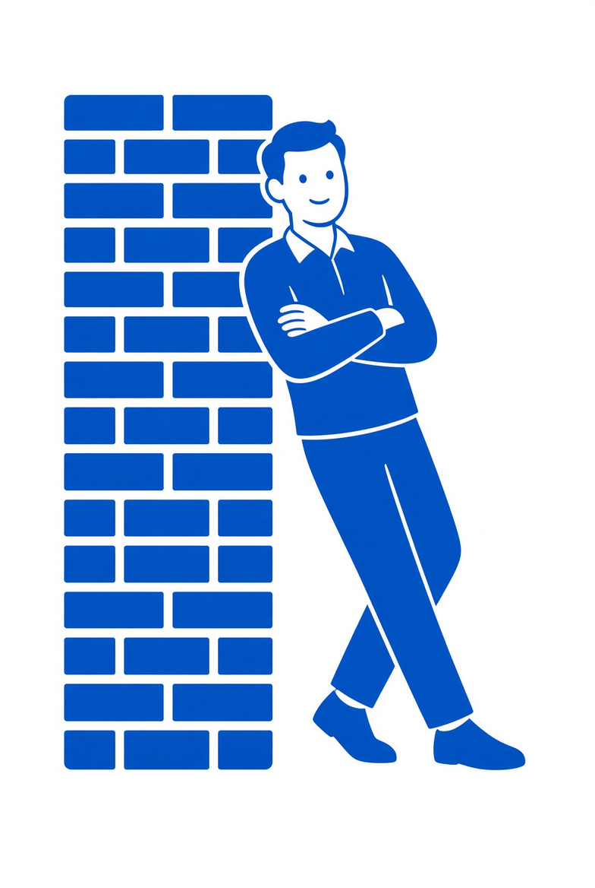
leunen
to lean
regelmatigrang 6994Movement & positiongetekend
- Scene
- one adult stands at a slant with one shoulder resting against a wall, ankles crossed and arms folded, the whole weight on the wall, waiting. The wall is plain brick, the feet stand a little way out from it, and nothing else is in the picture.
- Must read
- a body resting at a slant with one shoulder on a wall.
- Avoid
- a person standing upright (staan); a person on a chair (zitten); both palms pushed against a crate (duwen); a person lying down (liggen).
- Alt text
- Iemand staat schuin met één schouder tegen een muur, de enkels gekruist en de armen over elkaar.
- Example
- Ze leunt tegen de muur en wacht op de bus.
She leans against the wall and waits for the bus.
leunen.png · rang 6994 · B2 regelmatig · lexicon woorden.tsv
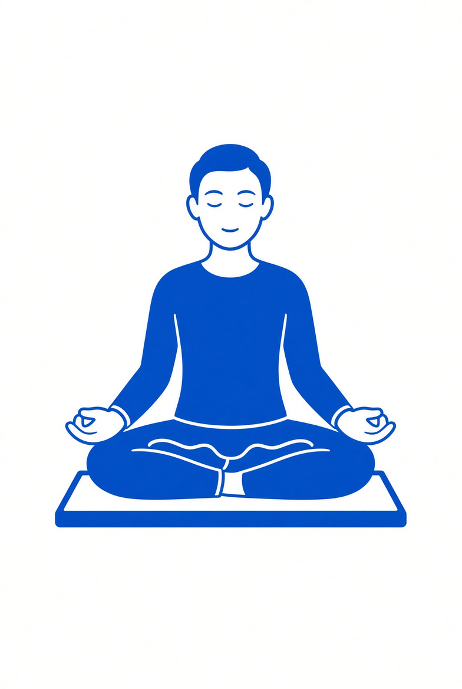
mediteren
to meditate
regelmatigrang 6999Body & healthgetekend
- Scene
- one adult sits on a mat with the legs folded in front on the floor, back straight, eyes closed, hands resting palms up on the knees; nothing else in the room.
- Must read
- a seated figure with folded legs, closed eyes and open palms on the knees.
- Avoid
- a person lying asleep (slapen); hands folded with the head bowed (bidden); chin on a fist with a thought bubble (denken); a person upright on both knees (knielen).
- Alt text
- Iemand zit met gekruiste benen op een mat, rug recht, ogen dicht, handpalmen open op de knieën.
- Example
- Ik mediteer elke ochtend tien minuten.
I meditate for ten minutes every morning.
mediteren.png · rang 6999 · B2 regelmatig · lexicon woorden.tsv
geen beeld
monteren
to assemble
regelmatigrang 7002Movement & position
- Scene
- One adult kneels among flat panels and screws on a floor, turning a small hex key in a half-built cabinet; an empty diagram sheet with only drawn parts lies beside it.
- Must read
- the hex key in the half-built flat-pack cabinet.
- Avoid
- a person hammering a nail into a plank (timmeren); a person stacking bricks (bouwen); a person fixing a broken chair with a spanner (repareren); a finished cabinet with the door open.
- Alt text
- Een volwassene draait met een inbussleutel een kast in elkaar.
- Example
- Hij monteert de nieuwe kast zelf.
He assembles the new cupboard himself.
monteren.png · rang 7002 · B2 regelmatig · lexicon woorden.tsv
geen beeld
roddelen
to gossip
regelmatigrang 7017Communication & language
- Scene
- two adults stand head to head, one cupping a hand beside the mouth near the other's ear, both pairs of eyes sliding sideways toward a third adult who walks away in the background with a bag.
- Must read
- a cupped hand at an ear with both pairs of eyes turned toward a third person.
- Avoid
- two friends chatting over a cup (praten); one person whispering alone into an ear (fluisteren); a person pointing at another (wijzen); a person eavesdropping behind a door (afluisteren).
- Alt text
- Twee mensen staan met de hoofden dicht bij elkaar en kijken schuin naar een derde die wegloopt.
- Example
- Ze roddelen over hun buurvrouw.
They gossip about their neighbour.
roddelen.png · rang 7017 · B2 regelmatig · lexicon woorden.tsv
geen beeld
verwarmen
to heat, to warm up
regelmatigrang 7033Nature & weather
- Scene
- one adult stands against a wall radiator under a window, both palms flat on the slatted panel, the shoulders hunched and a small relieved smile. The room is plain, the radiator has a row of narrow slats, and no blanket, mug or fire is in the frame.
- Must read
- palms flat against a wall radiator with the shoulders hunched.
- Avoid
- a person holding hands over a flame (stoken); a person wrapped in a blanket (inpakken); a person shivering with arms hugged round the body (rillen); a person sipping from a mug (drinken).
- Alt text
- Iemand staat met opgetrokken schouders en beide handen plat tegen een paneel onder een raam.
- Example
- Ik verwarm mijn handen aan de radiator.
I warm my hands on the radiator.
verwarmen.png · rang 7033 · B2 regelmatig · lexicon woorden.tsv
geen beeld
bedelen
to panhandle
regelmatigrang 7044Abstract & general
- Scene
- A person sits on a pavement with legs folded and holds a small cup out in one hand toward two passers-by. The passers-by walk on without looking down, their feet and legs in mid-stride. A plain wall runs behind them, and nothing else is in the frame.
- Must read
- a seated person holding a cup out toward passers-by.
- Avoid
- a coin dropped into a cup (geven); a person asking a question (vragen); a coin dropped into a piggy bank (sparen); a person eating on a bench (eten).
- Alt text
- Iemand zit op de stoep en strekt een beker uit naar twee voorbijgangers die doorlopen.
- Example
- Er zit een man te bedelen bij het station.
A man is sitting begging at the station.
bedelen.png · rang 7044 · B2 regelmatig · lexicon woorden.tsv
geen beeld
bespelen
to play (a piano, a stage)
regelmatigrang 7046Arts & media
- Scene
- One girl sits on a stool at a piano, both hands on the keys, looking down at her hands. Her fingers are mid-movement, one hand a little higher than the other. Nothing else in the picture, no sheet music, no musical symbols.
- Must read
- her fingers pressing the piano keys.
- Avoid
- a girl listening to a radio (luisteren); a girl singing with her mouth open and no piano (zingen); a girl playing football (voetballen); a girl dusting a closed piano (schoonmaken); musical notes in the air.
- Alt text
- Een meisje zit op een kruk bij een piano met beide handen op de toetsen en kijkt naar haar vingers.
- Example
- Eva bespeelt de piano.
Eva plays the piano.
bespelen.png · rang 7046 · B2 regelmatig · lexicon woorden.tsv
geen beeld
confronteren
to confront
regelmatigrang 7048Abstract & general
- Scene
- A girl stands holding an empty cookie box open and up in front of her younger brother's face. He sits at a table with crumbs down his shirt and looks away, cheeks flushed. She frowns at him. Nothing else on the table.
- Must read
- the empty box held up in front of the brother's face.
- Avoid
- a girl offering a full box with a smile (geven); a girl eating a cookie beside her brother (delen); a girl shouting with fists clenched (ruzie maken); a boy hiding the box under the table (verstoppen).
- Alt text
- Een meisje houdt een lege doos vlak voor het gezicht van haar broertje, dat kruimels op zijn shirt heeft.
- Example
- Zijn zus confronteert Sam met de lege doos.
His sister confronts Sam with the empty box.
confronteren.png · rang 7048 · B2 regelmatig · lexicon woorden.tsv
geen beeld
exploiteren
to exploit
regelmatigrang 7055Abstract & general
- Scene
- One adult woman in an apron stands behind the counter of a small bakery, handing a loaf to a customer who lays coins in her other hand. Shelves of loaves stand behind her. Both look at the loaf. No other customers.
- Must read
- coins paid over the counter of a shop that she runs.
- Avoid
- a woman handing a loaf to a friend without payment (geven); a stall of fruit on the street (verkopen); a manager at a desk with a phone (runnen); a baker kneading dough at a table (bakken).
- Alt text
- Een vrouw met een schort staat achter de toonbank van een bakkerij en overhandigt een brood aan een klant.
- Example
- Anna exploiteert een bakkerij.
Anna runs a bakery.
exploiteren.png · rang 7055 · B2 regelmatig · lexicon woorden.tsv
geen beeld
renoveren
to renovate
regelmatigrang 7092Abstract & general
- Scene
- Two adults stand in a half-empty kitchen. One on a stepladder prises an old cabinet off the wall with a crowbar, the other kneels fitting a new unit that is half in place beside it. The old and the new stand side by side. No paint.
- Must read
- an old cabinet half torn out beside a new unit half fitted.
- Avoid
- a person rolling paint onto a wall (schilderen); a person polishing an antique chair (restaureren); a person sweeping a clean floor (schoonmaken); a person stacking bricks for a new house (bouwen).
- Alt text
- Twee volwassenen staan in een halflege keuken; de een wrikt een oude kast los, de ander zet een nieuwe vast.
- Example
- Els en Jan renoveren de oude keuken.
Els and Jan are renovating the old kitchen.
renoveren.png · rang 7092 · B2 regelmatig · lexicon woorden.tsv
geen beeld
updaten
to update
regelmatigrang 7100Abstract & general
- Scene
- one person holds a phone upright in both hands and looks at its screen, which shows a wide horizontal bar filled halfway and a round arrow turning. The room behind is plain, one thumb hovers by the screen, and no cable or second device is in the frame.
- Must read
- a phone screen with a wide bar filled halfway.
- Avoid
- a person talking with a phone at the ear (bellen); a person typing with both thumbs (typen); a person taking a photo with a phone (fotograferen); a phone on a charging cable (opladen).
- Alt text
- Iemand houdt met beide handen een telefoon voor zich; op het scherm staat een half gevulde balk.
- Example
- Mijn telefoon moet nog updaten.
My phone still has to update.
updaten.png · rang 7100 · B2 regelmatig · lexicon woorden.tsv
geen beeld
behoeden
to protect, watch over
regelmatigrang 7119Clothing & appearance
- Scene
- On an icy pavement a young woman holds an old man firmly by the arm as he steps carefully over a patch of ice; she looks at his feet and he looks at the ice. Nothing else is in the frame, no other people.
- Must read
- her firm hold on his arm above the patch of ice.
- Avoid
- a woman pushing an old man in a wheelchair (duwen); a woman catching a falling man in her arms (opvangen); two people strolling arm in arm and chatting (wandelen); a woman holding an umbrella over a man (beschermen).
- Alt text
- Een jonge vrouw houdt een oude man stevig bij zijn arm terwijl hij over een gladde plek stapt.
- Example
- Els behoedt haar opa voor een val.
Els keeps her grandfather from a fall.
behoeden.png · rang 7119 · B2 regelmatig · lexicon woorden.tsv
geen beeld
breien
to knit
regelmatigrang 7123Abstract & general
- Scene
- one adult sits in an armchair with two long needles crossed in the hands and a long strip of knitted fabric hanging down off the needles to the floor; a ball of wool lies in the lap and the eyes follow the stitches.
- Must read
- two long needles crossed in the hands with a long strip of fabric hanging from them.
- Avoid
- a person sewing a button with a needle (naaien); a person winding wool into a ball (opwinden); a person hanging a scarf on a hook (ophangen); a person weaving a basket (vlechten); a person tying a knot in a rope (knopen).
- Alt text
- Iemand zit in een leunstoel met twee lange naalden en een lange strook stof die van de naalden hangt.
- Example
- Mijn oma breit een sjaal voor mij.
My grandma is knitting a scarf for me.
breien.png · rang 7123 · B2 regelmatig · lexicon woorden.tsv
geen beeld
gamen
to game
regelmatigrang 7137Sport & games
- Scene
- One adult sits with legs folded on the floor facing a screen that shows one small car, both thumbs on the buttons of a controller held in two hands, tongue between the teeth. A low table stands to one side, and no other people are in the frame.
- Must read
- Both thumbs on a controller and the eyes on a screen with a small car.
- Avoid
- a person watching a television (kijken); children playing with blocks (spelen); a person typing on a keyboard (typen); a phone held to the ear (bellen).
- Alt text
- Iemand zit op de grond voor een scherm en drukt met twee duimen op een apparaatje.
- Example
- Hij gamet elke avond met zijn broer.
He plays video games every evening with his brother.
gamen.png · rang 7137 · B2 regelmatig · lexicon woorden.tsv

grazen
to graze
regelmatigrang 7141Animalsgetekend
- Scene
- two cows stand in a meadow with their heads down, pulling at the grass with their mouths; a fence runs behind. No person in the picture. One cow swishes its tail; the grass is long round their legs.
- Must read
- cows with their heads down in the grass.
- Avoid
- a cow lying down (liggen); bread thrown to ducks (voeren); a hen on a nest (broeden); a horse galloping.
- Alt text
- Twee koeien staan met de koppen omlaag in de wei en eten.
- Example
- De koeien grazen in de wei.
The cows graze in the meadow.
grazen.png · rang 7141 · B2 regelmatig · lexicon woorden.tsv
geen beeld
lokaliseren
to localize
regelmatigrang 7159Abstract & general
- Scene
- One adult woman kneels on the floor beside a sofa, one hand cupped to her ear and the other hand stretched out under the sofa, where the edge of a phone lies half visible. She looks straight at the spot under the sofa.
- Must read
- the hand cupped to the ear and the other hand reaching to the phone under the sofa.
- Avoid
- a woman on all fours looking blindly around the room (zoeken); a woman holding the phone up and smiling (vinden); a phone with a map on the screen; a ringing sound drawn as lines.
- Alt text
- Een vrouw zit op haar knieën bij een bank, een hand aan haar oor, een hand eronder.
- Example
- Anna lokaliseert haar telefoon onder de bank.
Anna locates her phone under the sofa.
lokaliseren.png · rang 7159 · B2 regelmatig · lexicon woorden.tsv

stoken
to stoke (a fire)
regelmatigrang 7177House & homegetekend
- Scene
- one adult crouches in front of a free-standing wood stove in a living room, holding the small stove door open with one hand while the other hand pushes a split log into the flames inside; a basket of logs stands on the floor beside the knees and a pipe rises from the stove.
- Must read
- a log being pushed through the open stove door into the flames.
- Avoid
- open palms held out towards a campfire (warmen); a pan on a cooking hob (koken); logs piled neatly against a wall (stapelen); a match held to a candle wick.
- Alt text
- Iemand zit gehurkt voor een houtkachel, houdt het deurtje open en legt er een blok hout in.
- Example
- Hij stookt de kachel met hout.
He stokes the stove with wood.
stoken.png · rang 7177 · B2 regelmatig · lexicon woorden.tsv
geen beeld
traceren
to trace out, draw an outline
regelmatigrang 7180Sport & games
- Scene
- One child sits at a table with one hand spread flat on a large sheet of paper, fingers apart, and with the other hand draws a pencil line right around the outline of the fingers. She watches the pencil tip. The sheet shows only the line.
- Must read
- the pencil line following round the spread fingers on the paper.
- Avoid
- a child drawing a free house with a pencil (tekenen); a child cutting round a shape with scissors (knippen); a child pressing a painted hand on paper (verven); a ruler and a measuring tape; a finished drawing held up.
- Alt text
- Een kind legt een hand gespreid op papier en gaat met een potlood langs de vingers.
- Example
- Eva traceert de vorm van haar hand op papier.
Eva traces the shape of her hand on paper.
traceren.png · rang 7180 · B2 regelmatig · lexicon woorden.tsv
geen beeld
vergoeden
to reimburse
regelmatigrang 7185Abstract & general
- Scene
- A woman sits at a desk and puts a few banknotes into the hand of a man who stands across from her. In his other hand the man holds a blank paper receipt. Both look at the money. No numbers or text on the paper.
- Must read
- the money passing to the man who holds the receipt.
- Avoid
- coins laid on a shop counter (betalen); a man handing a box to a woman (geven); a man putting notes into a wallet alone (sparen); a woman taking money from a man (innen).
- Alt text
- Een vrouw achter een bureau legt geld in de hand van een man met een strookje papier.
- Example
- De baas vergoedt de kosten van de reis met de trein.
The boss reimburses the cost of the train trip.
vergoeden.png · rang 7185 · B2 regelmatig · lexicon woorden.tsv
geen beeld
vernederen
to humiliate
regelmatigrang 7187Character & behaviour
- Scene
- one adult stands bent and shrinking with the head down and one hand over the face, in front of four figures in a row who point at the bent figure with open laughing mouths.
- Must read
- one bowed figure with a hand over the face, in front of four figures pointing with open mouths.
- Avoid
- a person crying alone (huilen); a person bowing politely to someone (danken); a parent sending a child to a corner (bestraffen); a crowd cheering with raised arms (juichen).
- Alt text
- Eén figuur staat gebogen met een hand voor het gezicht terwijl vier anderen met open mond wijzen.
- Example
- Je moet iemand niet vernederen.
You must not humiliate anyone.
vernederen.png · rang 7187 · B2 regelmatig · lexicon woorden.tsv
geen beeld
emigreren
to emigrate
regelmatigrang 7213Abstract & general
- Scene
- One family of three, two adults and a child, stands beside a van whose back doors are open on boxes and suitcases, in front of their house. All three look up at a small aeroplane flying high in the empty sky above them.
- Must read
- the loaded van and the aeroplane in the sky above the family.
- Avoid
- a family carrying boxes into a new house (verhuizen); a family with suitcases on a beach (reizen); a person waving at a plane (zwaaien); people running with bundles (vluchten).
- Alt text
- Een gezin staat bij een bestelbus vol dozen en koffers, en hoog in de lucht vliegt een vliegtuig.
- Example
- De familie emigreert naar een ander land.
The family emigrates to another country.
emigreren.png · rang 7213 · B2 regelmatig · lexicon woorden.tsv
geen beeld
janken
to whine, to bawl
regelmatigrang 7222Abstract & general
- Scene
- A child stands with the head thrown back, mouth stretched wide and thick streams of tears running down both cheeks, fists at the sides. The shoulders are raised and the eyes are screwed shut. The child stands alone against a plain background, and no other people are in the frame.
- Must read
- a head thrown back with a wide mouth and thick streams of tears.
- Avoid
- a child crying quietly with hands over the face (huilen); a child laughing (lachen); a child calling to a friend (roepen); a child asleep (slapen).
- Alt text
- Een kind staat met het hoofd achterover, een wijd open mond en dikke stromen tranen op de wangen.
- Example
- Het kind jankt omdat het honger heeft.
The child bawls because it is hungry.
janken.png · rang 7222 · B2 regelmatig · lexicon woorden.tsv
geen beeld
reduceren
to reduce
regelmatigrang 7241Quantity & measure
- Scene
- One adult woman stands between two bins on a pavement, looking at them. The bin on the left is full and overflowing; the bin on the right is only half full. Nothing else is in the frame.
- Must read
- the full bin beside the half-full one.
- Avoid
- a person throwing rubbish into a bin (weggooien); two equal full bins (verzamelen); a person emptying a bin into a truck (legen); an empty bin.
- Alt text
- Een vrouw staat tussen twee vuilnisbakken; de linker puilt uit, de rechter is half leeg.
- Example
- Els reduceert haar afval.
Els reduces her waste.
reduceren.png · rang 7241 · B2 regelmatig · lexicon woorden.tsv
geen beeld
rinkelen
to ring, to jingle
regelmatigrang 7243Sport & games
- Scene
- One hand holds a small hand bell up at shoulder height, tipped to one side in mid-shake, with short curved lines on both sides of it. The wrist is slightly bent and the arm is bare to the elbow. Nothing else is in the frame, and no door, tower or other objects are shown.
- Must read
- a small hand bell tipped mid-shake with short curved lines at its sides.
- Avoid
- a church tower with a big bell (luiden); a phone buzzing on a table (trillen); a person knocking on a door (kloppen); a thumb pressing a bicycle bell (bellen); musical notes.
- Alt text
- Een hand houdt een klein klokje omhoog, scheef geschud, met korte lijnen aan weerszijden.
- Example
- Het belletje boven de deur rinkelt.
The little bell above the door rings.
rinkelen.png · rang 7243 · B2 regelmatig · lexicon woorden.tsv
geen beeld
stabiliseren
to stabilize
regelmatigrang 7249Abstract & general
- Scene
- One man stands at the foot of a tall ladder leaning on a tree and grips both side rails firmly with both hands, feet planted wide. A woman climbs the ladder towards a branch above him. The man looks up at her. Nothing else in the frame.
- Must read
- the man's two hands gripping the ladder rails while the woman climbs.
- Avoid
- a man carrying a ladder on his shoulder (dragen); a man falling off a ladder (vallen); a man painting a wall from a ladder (schilderen); a man pushing a wall over (duwen).
- Alt text
- Een man staat onderaan een ladder met beide handen om de stijlen terwijl een vrouw naar boven klimt.
- Example
- Piet stabiliseert de ladder.
Piet steadies the ladder.
stabiliseren.png · rang 7249 · B2 regelmatig · lexicon woorden.tsv
geen beeld
verrijken
to enrich
regelmatigrang 7256Abstract & general
- Scene
- One adult pours dark compost from a bucket in a ring around one young plant. Next to it a second young plant stands in poor pale soil and looks thin and bent. Nothing else is in the picture.
- Must read
- the dark compost ring round one plant beside the thin plant in poor soil.
- Avoid
- a person watering with a can (sproeien); a person digging a hole with a spade (graven); a person pulling out weeds (wieden); a person sowing seeds from a hand (zaaien)
- Alt text
- Een man giet donkere aarde uit een emmer rond een struik; een tweede struik staat dun in lichte grond.
- Example
- Piet verrijkt de grond met mest.
Piet enriches the soil with manure.
verrijken.png · rang 7256 · B2 regelmatig · lexicon woorden.tsv
geen beeld
belemmeren
to obstruct, to hinder, to hamper
regelmatigrang 7266Abstract & general
- Scene
- One adult woman moves along a narrow hallway turned sideways, her back brushing the wall. A huge suitcase and two big boxes stand in the way, filling most of the floor, and she looks down at them as she squeezes past.
- Must read
- the big objects filling the hallway so she must turn sideways.
- Avoid
- a woman carrying the suitcase down the hall (dragen); a woman putting boxes away in a cupboard (opruimen); a woman walking freely down an empty hall (lopen); a man holding out an arm to stop her (tegenhouden).
- Alt text
- Een vrouw draait zich zijwaarts om langs een grote koffer en twee dozen in een smalle gang te komen.
- Example
- De koffer belemmert Els in de gang.
The suitcase hinders Els in the hallway.
belemmeren.png · rang 7266 · B2 regelmatig · lexicon woorden.tsv
geen beeld
bezuinigen
to economize, to cut the budget
regelmatigrang 7269Money & trade
- Scene
- A man and a woman sit at a small kitchen table eating sandwiches from a plate, with a thermos between them. Through the window behind them a cafe with an awning and empty outdoor tables is visible across the street.
- Must read
- sandwiches at the kitchen table with the cafe in view outside.
- Avoid
- a person dropping a coin into a piggy bank (sparen); a person cooking at a stove (koken); a person paying at a till (betalen); a couple dining at the cafe tables (dineren).
- Alt text
- Een man en een vrouw zitten aan een keukentafel met boterhammen en een thermosfles; buiten het raam staat een café.
- Example
- Jan en Els bezuinigen: zij eten thuis en niet in het café.
Jan and Els are cutting back: they eat at home and not in the cafe.
bezuinigen.png · rang 7269 · B2 regelmatig · lexicon woorden.tsv
geen beeld
onderscheppen
to intercept
regelmatigrang 7302Abstract & general
- Scene
- one player in a plain jersey leaps with both arms stretched up and out to the right, the fingers spread wide, and catches a ball in mid-air at the highest point of the jump; a second player behind has an arm out and is too late, the hand just short of the ball.
- Must read
- a leaping player catching a ball in mid-air with both hands in front of a late opponent.
- Avoid
- a player kicking a ball along the ground (schoppen); a goalkeeper diving to the floor (vangen); a player throwing a ball to a friend (gooien); a player running with a ball (rennen); a person standing with a ball in the hands (houden).
- Alt text
- Een speler springt met gestrekte armen op en grijpt de bal in de lucht voor een te late tegenstander.
- Example
- De verdediger onderschept de pass.
The defender intercepts the pass.
onderscheppen.png · rang 7302 · B2 regelmatig · lexicon woorden.tsv
geen beeld
ontruimen
to clear, evacuate
regelmatigrang 7303Abstract & general
- Scene
- One student stands at the doorway of a room carrying the last cardboard box out, the box held in front of him. Behind him the room is completely empty: bare floor, bare wall, a bare window. Nothing is left inside.
- Must read
- the completely bare room behind the man with the last box.
- Avoid
- a student carrying boxes into a full room (verhuizen); a student tidying books on a shelf (opruimen); a student sweeping the floor with a broom (vegen); a room full of furniture with an open door; a person running out of a burning room.
- Alt text
- Een jongen draagt de laatste doos de deur uit; achter hem is de kamer kaal en leeg.
- Example
- Jan ontruimt zijn kamer.
Jan clears out his room.
ontruimen.png · rang 7303 · B2 regelmatig · lexicon woorden.tsv
geen beeld
trotseren
to defy, to brave, to resist
regelmatigrang 7319Character & behaviour
- Scene
- A woman cycles along an empty road in heavy rain and strong wind: slanting rain lines, her coat flapping out behind her, her hair blown back. Her chin is lifted and she is smiling broadly. A single bicycle and rider, nothing else in the frame.
- Must read
- the smiling face and lifted chin of the cyclist in the storm.
- Avoid
- a woman sheltering under an umbrella at a bus stop (schuilen); a cyclist in sunshine with a calm face (genieten); a cyclist with a grim, bent head pushing against the wind (worstelen); a woman pushing her bike by hand (lopen).
- Alt text
- Een vrouw rijdt lachend op een fiets door slagregen; haar jas wappert en ze heeft de kin omhoog.
- Example
- Els trotseert de regen op de fiets.
Els braves the rain on her bike.
trotseren.png · rang 7319 · B2 regelmatig · lexicon woorden.tsv
geen beeld
verdubbelen
to double
regelmatigrang 7324Quantity & measure
- Scene
- One adult woman stands at a kitchen table and holds a small bowl in her left hand and a bowl twice as large in her right hand, both held out side by side and both filled with flour. She looks from one to the other.
- Must read
- the big bowl holding twice what the small bowl holds.
- Avoid
- a cup next to a ruler (meten); two identical bowls side by side (kopieren); a bowl filled to overflowing (vullen); a woman cutting a cake in half (halveren).
- Alt text
- Een vrouw houdt een klein kommetje en een grote kom vast; de grote kom bevat dubbel zoveel meel.
- Example
- Eva verdubbelt het recept.
Eva doubles the recipe.
verdubbelen.png · rang 7324 · B2 regelmatig · lexicon woorden.tsv
geen beeld
belasten
to tax
regelmatigrang 7341Money & trade
- Scene
- A man stands at a counter with a small pile of coins in front of him. An official behind the counter slides about a third of the pile aside towards himself with a flat hand while the man watches with a frown. No shop goods and no other person.
- Must read
- an official's hand sliding a part of the man's coins aside.
- Avoid
- a man handing coins over for a loaf of bread (betalen); an official giving coins back to a man (vergoeden); a man dropping coins into a piggy bank (sparen); a man counting coins alone.
- Alt text
- Een man kijkt fronsend toe terwijl een ambtenaar een deel van zijn munten naar zich toe haalt.
- Example
- De overheid belast het loon van Jan.
The government taxes Jan's wages.
belasten.png · rang 7341 · B2 regelmatig · lexicon woorden.tsv
geen beeld
betogen
to rally publicly
regelmatigrang 7342Communication & language
- Scene
- Four adults march in a line along a street holding blank boards on sticks above their heads, the first one with a hand cupped at the mouth. The boards are plain and empty. Behind them the street is bare, and no crowd or other objects appear in the frame.
- Must read
- Marchers holding blank boards on sticks above their heads.
- Avoid
- a group strolling (lopen); a person on a picket line with arms folded (staken); a person singing (zingen); a person cheering with raised arms (juichen).
- Alt text
- Vier mensen in een rij houden lege borden op stokken omhoog; de eerste heeft een hand voor de mond.
- Example
- Duizenden mensen betogen tegen de nieuwe wet.
Thousands of people are demonstrating against the new law.
betogen.png · rang 7342 · B2 regelmatig · lexicon woorden.tsv
geen beeld
betogen (argument)
to argue (a case)
regelmatigrang 7342Communication & language
- Scene
- One adult stands behind a lectern with one finger raised and the other hand open toward three listeners seated on chairs in a row; the listeners sit still with their hands in their laps, and the room is bare.
- Must read
- A speaker with one raised finger before three seated listeners.
- Avoid
- two people chatting (praten); a person telling a story (vertellen); two people shouting at each other (twisten); three people round a table (bespreken).
- Alt text
- Iemand staat achter een katheder met een vinger omhoog terwijl drie mensen op stoelen luisteren.
- Example
- De advocaat betoogt dat zijn cliënt onschuldig is.
The lawyer argues that his client is innocent.
betogen-argument.png · rang 7342 · B2 regelmatig · lexicon woorden.tsv

golfen
to play golf
regelmatigrang 7359Sport & gamesgetekend
- Scene
- one adult stands on short-cut grass with a club swung back over the shoulder, eyes on a small ball on a tee; a flag on a pole stands in the distance.
- Must read
- a club swung back over a small ball on a tee.
- Avoid
- a foot striking a ball (voetballen); a bat hitting a ball (slaan); an arm drawn back to throw (mikken); a person walking with a stick (lopen).
- Alt text
- Iemand staat op kort gras met een stok over de schouder, de blik op een klein balletje.
- Example
- Mijn opa golft elke zaterdag.
My grandfather plays golf every Saturday.
golfen.png · rang 7359 · B2 regelmatig · lexicon woorden.tsv
geen beeld
knappen
to snap
regelmatigrang 7369Abstract & general
- Scene
- one adult holds a dry stick at both ends, bent in a deep arc, the middle splitting with a jagged break and two short splinters poking out. The stick is bare and rough, both hands grip tightly, and the background is plain with no objects.
- Must read
- a bent stick splitting at the middle with a jagged break.
- Avoid
- a stick lying broken in pieces on the ground (breken); a rope pulled taut (spannen); a person cutting a stick with a saw (zagen); a branch bending gently in the wind (buigen).
- Alt text
- Iemand houdt een droge stok aan beide uiteinden vast; in het midden scheurt hij met een rafelige kier open.
- Example
- De tak knapt onder het gewicht van de sneeuw.
The branch snaps under the weight of the snow.
knappen.png · rang 7369 · B2 regelmatig · lexicon woorden.tsv
geen beeld
overhandigen
to hand over
regelmatigrang 7391Movement & position
- Scene
- two adults stand facing each other; one holds out a plain flat envelope at arm's length and the other holds an open hand under it, ready to take it, the envelope in the space between the hands.
- Must read
- a flat envelope in the space between two hands, one holding it out and the other open.
- Avoid
- a person pushing a letter into a post box (zenden); a box passing between two people (geven); two people shaking hands (begroeten); a person holding up an envelope to show it (tonen).
- Alt text
- Twee mensen staan tegenover elkaar; de een houdt een platte enveloppe uit en de ander heeft een open hand.
- Example
- Hij overhandigt haar een brief.
He hands her a letter.
overhandigen.png · rang 7391 · B2 regelmatig · lexicon woorden.tsv
geen beeld
smullen
to feast, to enjoy eating
regelmatigrang 7402Food & drink
- Scene
- One adult sits at a table with eyes closed and a broad smile in front of a heaped plate and holds a drumstick; the cheeks are full. The other hand rests flat on the table beside a napkin. The plate holds a tall pile of food, and nobody else is in the frame.
- Must read
- closed eyes and a broad smile over a heaped plate.
- Avoid
- a person taking a calm bite (eten); a person cooking at a stove (koken); a person tasting from a small spoon (proeven); a person drinking from a glass (drinken).
- Alt text
- Iemand zit met dichte ogen en brede glimlach voor een hoog opgetast bord en houdt een kippenpoot vast.
- Example
- De kinderen smullen van de pannenkoeken.
The children feast on the pancakes.
smullen.png · rang 7402 · B2 regelmatig · lexicon woorden.tsv
geen beeld
trakteren
to treat (someone)
regelmatigrang 7413Abstract & general
- Scene
- one adult stands smiling and holds out a flat tray with several small cakes toward two colleagues, who lean in a little with open hands. The office is plain with a bare desk behind them, and nobody holds a drink or a candle.
- Must read
- a tray of small cakes held out to two people.
- Avoid
- a person handing over one wrapped gift (geven); a person paying at a counter (besteden); a person baking at an oven (bakken); a person blowing out candles; a table laid for a meal (dineren).
- Alt text
- Iemand houdt een plat dienblad met kleine gebakjes uit naar twee anderen, die glimlachend toekijken.
- Example
- Ik trakteer mijn collega's op taart.
I treat my colleagues to cake.
trakteren.png · rang 7413 · B2 regelmatig · lexicon woorden.tsv
geen beeld
waken
to watch
regelmatigrang 7423Clothing & appearance
- Scene
- A large dog lies on a porch with its head up and ears pricked, looking down a garden path; a closed front door is behind it. No person is in the frame, only the dog, the door and the path.
- Must read
- the raised head and pricked ears of the alert dog.
- Avoid
- a dog curled up asleep (slapen); a dog barking at a passer-by (blaffen); a dog walking on a lead (uitlaten); a dog chewing a bone (kluiven).
- Alt text
- Een grote hond ligt voor een gesloten deur met opgeheven kop en rechtop staande oren en kijkt naar het pad.
- Example
- De hond waakt over het huis.
The dog watches over the house.
waken.png · rang 7423 · B2 regelmatig · lexicon woorden.tsv
geen beeld
babbelen
to natter
regelmatigrang 7436Communication & language
- Scene
- Two neighbours stand on either side of a low garden fence, both leaning on their elbows on top of it with heads close together. One hand gestures loosely in the air. Behind each person a small lawn is visible, and no other people or objects appear in the frame.
- Must read
- two people leaning on a low garden fence, heads close together.
- Avoid
- two friends talking over cups at a table (kletsen); a person calling across a street (roepen); a person whispering with a hand at the ear (fluisteren); a person singing (zingen).
- Alt text
- Twee mensen leunen met de ellebogen op een laag hek en praten met de hoofden dicht bij elkaar.
- Example
- De buren babbelen over het weer.
The neighbours chat about the weather.
babbelen.png · rang 7436 · B2 regelmatig · lexicon woorden.tsv
geen beeld
consumeren
to consume, to use
regelmatigrang 7448Abstract & general
- Scene
- One adult woman sits at a small round table in a cafe, a single cup on a saucer in front of her. She holds the cup with both hands close to her chest and looks at it. Nothing else on the table, no other guests.
- Must read
- the cup held in both hands at a cafe table.
- Avoid
- a woman tilting a glass back with her head raised (drinken); a woman reading a menu; a waiter with a tray; a plate with food; a cup standing alone on the table.
- Alt text
- Een vrouw zit aan een rond tafeltje in een café en houdt een kopje met beide handen vast.
- Example
- Eva consumeert een kop thee in het café.
Eva has a cup of tea in the cafe.
consumeren.png · rang 7448 · B2 regelmatig · lexicon woorden.tsv
geen beeld
reanimeren
to resuscitate
regelmatigrang 7498Abstract & general
- Scene
- One adult kneels beside a person lying on their back on the floor with both hands stacked on the middle of the chest and the arms held straight. The floor is plain, the kneeling adult looks down at the face, and no tools or other people are in the frame.
- Must read
- Straight arms and stacked hands pressing the chest of a person lying on the floor.
- Avoid
- a person lifting someone from the floor (tillen); a person asleep on the floor (slapen); a person kneeling to help someone up (helpen); an embrace (knuffelen).
- Alt text
- Iemand knielt naast een liggend persoon met beide handen op elkaar op de borst en gestrekte armen.
- Example
- De ambulancemedewerker reanimeert de man.
The paramedic resuscitates the man.
reanimeren.png · rang 7498 · B2 regelmatig · lexicon woorden.tsv
geen beeld
schorsen
to suspend
regelmatigrang 7501Abstract & general
- Scene
- One adult young man in ordinary jeans and a jacket sits alone in an empty spectator stand beside a grass pitch, a sports bag at his feet. Out on the grass a few players in football shirts run after a ball. He watches them.
- Must read
- the man in ordinary clothes sitting in the stand while his team plays.
- Avoid
- a player lying injured on the grass with a medic (blesseren); a player on a bench in kit waiting to come on (wisselen); a referee holding up a card (waarschuwen); a player leaving the pitch with a ball; a full crowd cheering.
- Alt text
- Een jongeman in gewone kleren zit op de tribune naast het veld terwijl zijn ploeg speelt.
- Example
- De club schorst Mark voor één wedstrijd.
The club suspends Mark for one match.
schorsen.png · rang 7501 · B2 regelmatig · lexicon woorden.tsv
geen beeld
telefoneren
to phone
regelmatigrang 7509Abstract & general
- Scene
- One adult sits on a sofa with a phone held against one ear, mouth open and one hand gesturing in the air, one leg resting over the other. The adult leans back into the cushions with a relaxed face. Nothing else is around, and no second person is in the frame.
- Must read
- a phone held at the ear of a talking person on a sofa.
- Avoid
- a person typing on a phone (typen); a person taking a photo with a phone (fotograferen); two people talking face to face (praten); a person holding a phone out to show a screen (tonen).
- Alt text
- Iemand zit op een bank met een toestel tegen het oor, de mond open en een hand in beweging.
- Example
- Ik telefoneer elke zondag met mijn moeder.
I phone my mother every Sunday.
telefoneren.png · rang 7509 · B2 regelmatig · lexicon woorden.tsv
geen beeld
tolereren
to tolerate
regelmatigrang 7515Abstract & general
- Scene
- A woman sits on a sofa with a big dog lying on the cushion beside her. She looks at the dog with a sigh, her hands lying still in her lap. She does not push it off. Nothing else in the picture.
- Must read
- her sigh and still hands: she dislikes it but lets it be.
- Avoid
- a woman stroking the dog and smiling (aaien); a woman pushing the dog off the sofa (wegjagen); a woman asleep beside the dog (slapen); a woman shouting with a pointing hand (verbieden).
- Alt text
- Een vrouw zit op een bank en kijkt zuchtend naar een grote hond naast haar.
- Example
- Anna tolereert de hond op de bank.
Anna tolerates the dog on the sofa.
tolereren.png · rang 7515 · B2 regelmatig · lexicon woorden.tsv

warmen
to warm (up)
regelmatigrang 7519Body & healthgetekend
- Scene
- one adult crouches beside a small campfire and holds both open hands out towards the flames, palms forward and shoulders hunched in a coat. A few logs lie in the fire and a small stack of wood waits beside it; nobody else is in the picture.
- Must read
- open palms held out towards a small fire.
- Avoid
- two palms rubbed together (wrijven); a hose aimed at flames (blussen); a loaf burning in an oven (verbranden); a pan on a stove (koken).
- Alt text
- Iemand zit gehurkt bij een klein kampvuur en houdt beide open handen naar de vlammen.
- Example
- Ze warmt haar handen aan de kachel.
She warms her hands by the stove.
warmen.png · rang 7519 · B2 regelmatig · lexicon woorden.tsv
geen beeld
exporteren
to export
regelmatigrang 7538Abstract & general
- Scene
- Two dock workers lift wooden crates of apples from the open back of a truck onto a large ship, at the edge of a quay; one crate is halfway in the air between truck and ship. The crates move away from the land towards the ship.
- Must read
- crates going from the truck onto the ship.
- Avoid
- crates coming off a ship onto a truck (importeren); a driver handing crates to a shop owner (leveren); a person buying apples at a market stall (kopen); a person picking apples from a tree (plukken).
- Alt text
- Mannen tillen kisten appels van een vrachtwagen op een groot schip bij de kade.
- Example
- De boer exporteert zijn appels.
The farmer exports his apples.
exporteren.png · rang 7538 · B2 regelmatig · lexicon woorden.tsv
geen beeld
ontcijferen
to decipher, figure out
regelmatigrang 7570Quantity & measure
- Scene
- One adult woman holds an old, yellowed letter close to her face, eyes narrowed, tracing the faint tangled pen strokes with one finger; the strokes are only loops and scribbles, no readable letters.
- Must read
- her narrowed eyes on the tangled strokes.
- Avoid
- a person reading a book calmly (lezen); a person writing with a pen (schrijven); a person tearing up a letter (verscheuren); a person holding a magnifying glass over a map (zoeken).
- Alt text
- Een vrouw houdt een oud papier vlak voor haar gezicht en tuurt naar vage krabbels.
- Example
- Eva ontcijfert het oude handschrift van opa.
Eva deciphers grandfather's old handwriting.
ontcijferen.png · rang 7570 · B2 regelmatig · lexicon woorden.tsv
geen beeld
profileren
to present an image of oneself
regelmatigrang 7581Time
- Scene
- One man in a chef's apron stands at a market stall and holds up a plate of food high in front of him with a proud smile. Three passers-by have stopped and look at him. A plain table with pans stands in front of the stall.
- Must read
- the plate held high in front of the proud man, with people stopping to look.
- Avoid
- a man cooking at a stove at home (koken); a man handing food over for coins (verkopen); a man eating at a table (eten); a man shouting through a megaphone (roepen).
- Alt text
- Een man met een schort houdt trots een bord eten omhoog en drie mensen blijven staan.
- Example
- Piet profileert zich als kok op de markt.
Piet presents himself as a cook at the market.
profileren.png · rang 7581 · B2 regelmatig · lexicon woorden.tsv
geen beeld
trachten
to attempt
regelmatigrang 7600Abstract & general
- Scene
- One adult stands on a ladder leaning against a tree and stretches one arm towards a cat sitting on a branch. The cat looks down at him. His fingers are still a hand's width short of the cat.
- Must read
- the outstretched hand still short of the cat.
- Avoid
- a person holding the cat safely in both arms (redden); a person climbing the tree bare-handed (klimmen); a person calling up with a hand at the mouth (roepen); a cat jumping down (springen)
- Alt text
- Een man op een ladder steekt zijn hand uit naar een kat op een tak.
- Example
- Piet tracht de kat uit de boom te halen.
Piet tries to get the cat out of the tree.
trachten.png · rang 7600 · B2 regelmatig · lexicon woorden.tsv
geen beeld
verbreden
to broaden, widen
regelmatigrang 7603Abstract & general
- Scene
- One adult kneels at the edge of a narrow garden path and sets a new flat stone down beside it, widening the strip. A wheelbarrow of stones stands nearby. The old path is a thin strip; the new stones make it clearly wider.
- Must read
- new stones laid beside the old narrow strip.
- Avoid
- a woman digging a new flower bed (graven); a woman laying one stone to fix a gap (repareren); a woman sweeping the path (vegen); a woman measuring with a ruler (meten).
- Alt text
- Een vrouw hurkt bij een smal tuinpad en zet nieuwe stenen ernaast; een kruiwagen staat vlakbij.
- Example
- Eva verbreedt het pad in haar tuin.
Eva widens the path in her garden.
verbreden.png · rang 7603 · B2 regelmatig · lexicon woorden.tsv
geen beeld
behartigen
to look after, serve, study, promote, be watchful of [a person's interests], have [a person's interests] at heart, take to heart
regelmatigrang 7619Education & learning
- Scene
- A man stands at a table facing two people who sit opposite him, one open hand turned palm up towards a woman who sits quietly beside him. He is speaking and looks at the two across the table. Papers lie on the table.
- Must read
- his open hand held out towards the seated woman beside him.
- Avoid
- a man carrying a woman's bag (helpen); two people chatting across a table with no gesture (praten); a person lecturing from a podium (spreken); a hard pointed finger at someone (beschuldigen).
- Alt text
- Een man staat aan tafel tegenover twee mensen en houdt een open hand naar de vrouw die naast hem zit.
- Example
- Jan behartigt de belangen van Anna.
Jan looks after Anna's interests.
behartigen.png · rang 7619 · B2 regelmatig · lexicon woorden.tsv

broeden
to brood (eggs)
regelmatigrang 7624Animalsgetekend
- Scene
- a hen sits puffed up on a nest of straw in a coop, a few eggs showing from under her; one child looks in through the small door. A small window lets in light behind the hen, and nothing else is in the coop.
- Must read
- a hen sitting on eggs in a nest.
- Avoid
- a bird in flight (vliegen); an egg cracked into a pan (bakken); grain thrown to chickens (voeren); chicks running about.
- Alt text
- Een kip zit dik opgezet op een nest van stro; onder haar zijn een paar eieren te zien.
- Example
- De eend broedt al drie weken op haar eieren.
The duck has been sitting on her eggs for three weeks.
broeden.png · rang 7624 · B2 regelmatig · lexicon woorden.tsv
geen beeld
incasseren
to collect (money), to take a blow
regelmatigrang 7643Abstract & general
- Scene
- A shopkeeper stands behind a counter, taking banknotes from a customer's open hand with one hand, while the other hand holds a drawer open. The notes are halfway between the two hands. The customer faces the shopkeeper across the counter. Nothing else in the picture.
- Must read
- the banknotes passing from the customer's hand to the shopkeeper's.
- Avoid
- a shopkeeper counting notes alone behind the counter (tellen); a customer picking up a bag of goods (kopen); a shopkeeper handing change back (teruggeven); a person putting a coin in a piggy bank (sparen); a person catching a ball.
- Alt text
- Een man achter een toonbank pakt bankbiljetten uit de open hand van een klant en heeft een lade open.
- Example
- De eigenaar incasseert de huur.
The owner collects the rent.
incasseren.png · rang 7643 · B2 regelmatig · lexicon woorden.tsv
geen beeld
pieken
to peak
regelmatigrang 7664Abstract & general
- Scene
- A woman runner crosses a finish line with both arms raised high and her head back, at the exact second her chest touches the thin tape stretched across the line. No other runners, no crowd, nothing else in the frame.
- Must read
- the raised arms at the instant the chest touches the tape.
- Avoid
- a runner far from the line with head down (rennen); a runner holding a trophy afterwards (prijs krijgen); a runner collapsing on the track (instorten); a crowd cheering with flags (juichen).
- Alt text
- Een vrouw komt met haar armen omhoog over een streep en raakt met haar borst een dun lint.
- Example
- Els piekt precies op de dag van de wedstrijd.
Els peaks exactly on the day of the race.
pieken.png · rang 7664 · B2 regelmatig · lexicon woorden.tsv
geen beeld
poseren
to pose
regelmatigrang 7669Abstract & general
- Scene
- One woman stands upright facing a camera on a tripod, one hand on the hip, a wide smile, chin slightly raised. The other arm hangs relaxed, and one foot is set slightly forward. The camera stands alone with no person behind it, and nothing else appears in the frame.
- Must read
- a woman standing with a hand on her hip and a wide smile facing a camera on a tripod.
- Avoid
- a person pressing the shutter of a camera (fotograferen); a person waving at the camera (zwaaien); a person dancing (dansen); a person laughing at a joke (lachen).
- Alt text
- Een vrouw staat met een hand op de heup en een brede lach recht voor een camera op een driepoot.
- Example
- De kinderen poseren voor de foto.
The children pose for the photo.
poseren.png · rang 7669 · B2 regelmatig · lexicon woorden.tsv
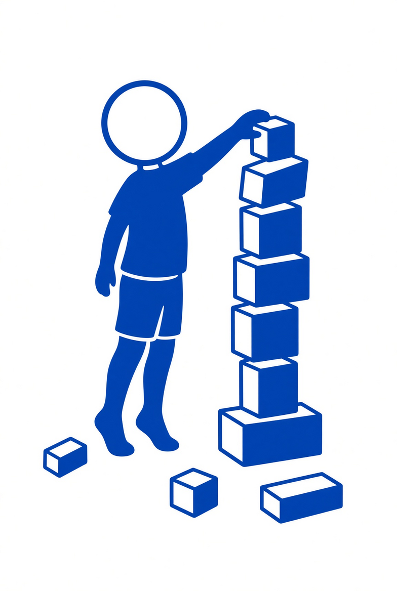
stapelen
to stack
regelmatigrang 7675Sport & gamesgetekend
- Scene
- one child stands on the toes and places a last wooden block on top of a tall tower of blocks; the tower leans slightly. A few loose blocks lie on the floor round the child's feet, and nothing else is in the picture.
- Must read
- a hand setting a block on top of a tall tower.
- Avoid
- a wall built brick by brick (bouwen); a box carried in both arms (dragen); boxes lifted off a lorry (lossen); a box set down on the floor (zetten).
- Alt text
- Een kind legt op de tenen een laatste blokje boven op een hoge toren van blokken.
- Example
- Ze stapelen de dozen tot aan het plafond.
They stack the boxes up to the ceiling.
stapelen.png · rang 7675 · B2 regelmatig · lexicon woorden.tsv
geen beeld
bekostigen
to finance, to pay for
regelmatigrang 7700Money & trade
- Scene
- One adult woman holds a banknote out towards a younger man who stands in front of a bus with a bag on his shoulder, a travel ticket sticking out of it. He looks at the note. No counter, no machine, no other people.
- Must read
- the note held out by one person for the other person's trip.
- Avoid
- coins on a shop counter (betalen); a woman handing a ticket to a man (geven); a woman dropping a coin into a beggar's cup (schenken); a man at a ticket machine (kopen).
- Alt text
- Een vrouw houdt een bankbiljet uit naar een jonge man voor een bus, met een kaartje in zijn tas.
- Example
- Moeder bekostigt de reis van Sam.
Mother pays for Sam's trip.
bekostigen.png · rang 7700 · B2 regelmatig · lexicon woorden.tsv
geen beeld
debatteren
to debate (formally)
regelmatigrang 7707Communication & language
- Scene
- two adults stand behind two tall lecterns facing each other across a gap, each with one arm raised and a finger pointing up, the mouths open, and a seated row of three plain people watches from the side.
- Must read
- two adults at lecterns facing each other, each with a raised pointing finger.
- Avoid
- two people talking at a table (praten); a person giving a speech alone (spreken); a person arguing with raised fists (ruziemaken); a person clapping (klappen); a person writing at a lectern (schrijven).
- Alt text
- Twee mensen staan achter katheders tegenover elkaar, elk met een opgeheven wijsvinger.
- Example
- De politici debatteren over het nieuwe plan.
The politicians debate the new plan.
debatteren.png · rang 7707 · B2 regelmatig · lexicon woorden.tsv

gluren
to peek
regelmatigrang 7720Movement & positiongetekend
- Scene
- one child stands behind a door that is open a crack and peers through the gap with one eye, one hand on the edge of the door; the rest of the body stays hidden.
- Must read
- one eye at the gap of a door left open a crack.
- Avoid
- a hand shading the eyes (kijken); an object hidden behind the back (verbergen); a door pulled wide open (openen); a person on tiptoe past a dog (sluipen).
- Alt text
- Een kind kijkt met één oog door de smalle kier van een deur.
- Example
- De kinderen gluren door het sleutelgat naar de cadeaus.
The children peek through the keyhole at the presents.
gluren.png · rang 7720 · B2 regelmatig · lexicon woorden.tsv
geen beeld
strekken
to stretch out
regelmatigrang 7753Abstract & general
- Scene
- One adult sits on the edge of a bed with both arms straight overhead and the fingers laced together, the back arched. The feet rest flat on the floor and the eyes are half closed. A pillow lies at the head of the bed, and nothing else is in the frame.
- Must read
- Both arms straight overhead with the fingers laced.
- Avoid
- an arm reaching for a jar on a shelf (reiken); a person yawning (gapen); a person bending over (buigen); a hand waving (zwaaien).
- Alt text
- Iemand zit op de rand van een bed met beide armen recht omhoog en de vingers in elkaar.
- Example
- Hij strekt zijn armen boven zijn hoofd.
He stretches his arms above his head.
strekken.png · rang 7753 · B2 regelmatig · lexicon woorden.tsv
geen beeld
verwisselen
to exchange
regelmatigrang 7770Abstract & general
- Scene
- two adults stand facing each other, each lifting their own hat off and holding it out toward the other, the two hats crossing halfway between them; both smile, both heads are bare, and no table, shop or other person is in the frame.
- Must read
- two hats crossing between two people who each hold one out.
- Avoid
- a person giving a hat away (geven); a person putting a hat on (opzetten); a person trying a hat in a shop (passen); two people shaking hands (schudden).
- Alt text
- Twee mensen houden elkaar tegenover elkaar elk een hoed voor; de hoeden kruisen elkaar halverwege.
- Example
- Zij verwisselen van hoed.
They swap hats.
verwisselen.png · rang 7770 · B2 regelmatig · lexicon woorden.tsv
geen beeld
illustreren
to illustrate
regelmatigrang 7784Abstract & general
- Scene
- One adult sits at a plain table with a pen, drawing a small apple in the margin beside a block of greeked scribble lines on a sheet. The apple has a short stem and one leaf. The other hand holds the sheet flat, and nothing else is on the table.
- Must read
- a pen drawing a small picture in the margin of a sheet of scribble lines.
- Avoid
- a person writing lines of text (schrijven); a person sketching a rough house on a clean sheet (schetsen); a person filling an outline with a crayon (kleuren); a person pointing at a picture on a wall (wijzen).
- Alt text
- Iemand zit aan een tafel en tekent met een pen een appeltje naast een blok krabbellijnen op een vel.
- Example
- Zij illustreert het boek met mooie tekeningen.
She illustrates the book with beautiful drawings.
illustreren.png · rang 7784 · B2 regelmatig · lexicon woorden.tsv
geen beeld
kleven
to stick, to cling
regelmatigrang 7799Abstract & general
- Scene
- one adult holds up a hand with a long strip of tape stuck across the palm and fingers and pulls at the strip with the other hand, which also catches.
- Must read
- a long strip of tape stuck to a hand.
- Avoid
- a stamp pressed onto an envelope (plakken); a hand holding a tool (vasthouden); a hand shaking off water (schudden); a hand pulling a rope (trekken).
- Alt text
- Een omhooggestoken hand met een lange reep tape op de handpalm; de andere hand haalt aan de reep.
- Example
- Het plakband kleeft aan mijn handen.
The tape sticks to my hands.
kleven.png · rang 7799 · B2 regelmatig · lexicon woorden.tsv
geen beeld
begroeten
to greet
regelmatigrang 7809Communication & language
- Scene
- two adults stand a few steps apart facing each other, each with one open hand raised at shoulder height, both smiling. Their feet are planted, their bodies lean slightly toward each other, and no objects or other people are in the frame.
- Must read
- two open hands raised at shoulder height facing each other.
- Avoid
- a person waving goodbye at a train window (zwaaien); two people hugging (omhelzen); two people bowing; two people with a bar each above the head (praten); two people shaking hands.
- Alt text
- Twee mensen staan een paar passen uit elkaar, elk met een open hand op schouderhoogte, en glimlachen.
- Example
- Ik begroet mijn buurman met een glimlach.
I greet my neighbour with a smile.
begroeten.png · rang 7809 · B2 regelmatig · lexicon woorden.tsv
geen beeld
dopen
to baptize
regelmatigrang 7813Abstract & general
- Scene
- one adult in a plain long robe holds a baby over a plain bowl on a stand and tips a little water from a small jug over the baby's forehead; the parents stand close by.
- Must read
- a small jug tipped over a baby's forehead above a bowl.
- Avoid
- a baby being bathed in a tub (wassen); a raised hand over a head (zegenen); a person carrying a baby (dragen); a person pouring tea (schenken).
- Alt text
- Een volwassene in een gewaad laat water uit een kannetje over het voorhoofd van een baby boven een kom.
- Example
- Ze dopen hun dochter in de kerk.
They are baptising their daughter in the church.
dopen.png · rang 7813 · B2 regelmatig · lexicon woorden.tsv
geen beeld
irriteren
to irritate
regelmatigrang 7815Abstract & general
- Scene
- A man sits at a kitchen table with his eyes squeezed shut, jaw clenched and one hand pressed to his ear. Above the sink behind him, a single drop hangs from the tap, caught just before it falls. No other person and no sound lines.
- Must read
- a man with squeezed eyes and a hand at his ear, a drop at the tap behind him.
- Avoid
- a man looking up from his book because of a knock at the door (storen); a man laughing at the table (lachen); a man asleep in bed (slapen); a man shouting with a raised fist (schreeuwen).
- Alt text
- Een man zit met een hand bij zijn oor; boven de gootsteen hangt een druppel aan de kraan.
- Example
- Het geluid van de kraan irriteert Sam.
The sound of the tap irritates Sam.
irriteren.png · rang 7815 · B2 regelmatig · lexicon woorden.tsv
geen beeld
slingeren
to dangle, to sway
regelmatigrang 7829Movement & position
- Scene
- one thick rope hangs from a high beam with a plain ball hooked at its lower end, the ball swung out to the right at the top of its arc and the rope slanted diagonally; a faint curved line behind it shows the path through the air.
- Must read
- a rope hanging from a beam with a ball at the end swung out to one side.
- Avoid
- a rope hanging straight down with the ball still (hangen); a person climbing a rope with both hands (klimmen); a person tying a rope to a beam (knopen); a person on a swing at a playground (schommelen); a ball rolling on the floor (rollen).
- Alt text
- Een bal aan een touw aan een balk is ver naar rechts uitgezwaaid met een boogvormig spoor erachter.
- Example
- De lamp slingert heen en weer in de wind.
The lamp sways back and forth in the wind.
slingeren.png · rang 7829 · B2 regelmatig · lexicon woorden.tsv
geen beeld
verdwalen
to get lost
regelmatigrang 7832Abstract & general
- Scene
- One adult stands at a junction of five roads beside a signpost with blank arms, turning around with an unfolded map held in both hands. No other person, car or building is in the frame, and the five roads fan out evenly like spokes.
- Must read
- A person at a five-way junction turning around with a map.
- Avoid
- a person searching a room (zoeken); a person strolling (wandelen); a person asking a passer-by (vragen); a person picking one of two doors (kiezen).
- Alt text
- Iemand staat op een kruispunt van vijf wegen bij een paal en draait zich om met een kaart.
- Example
- Ik verdwaal altijd in een nieuwe stad.
I always get lost in a new city.
verdwalen.png · rang 7832 · B2 regelmatig · lexicon woorden.tsv
geen beeld
dateren
to date (from)
regelmatigrang 7837People & relations
- Scene
- One adult stands on the pavement between two houses, looking up at the old one on the left: stone walls, a mossy roof and crooked windows. On the right stands a new house with straight white walls. Nothing else is in the frame.
- Must read
- the old crooked mossy house beside the new straight one.
- Avoid
- a builder laying bricks (bouwen); a person writing in a diary (noteren); a person painting a wall (verven); a person knocking down a wall (slopen).
- Alt text
- Een vrouw staat op straat tussen een oud scheef stenen huis met mos en een nieuw recht wit huis.
- Example
- Dit huis dateert uit de middeleeuwen.
This house dates from the Middle Ages.
dateren.png · rang 7837 · B2 regelmatig · lexicon woorden.tsv
geen beeld
hervatten
to resume
regelmatigrang 7841Work & jobs
- Scene
- One adult man crouches beside a wooden fence that is white on its left half and bare on its right half. He lifts a paintbrush again from a tin to start on the bare part. An open lunchbox with a sandwich stands on the ground beside him.
- Must read
- the brush lifted again toward the bare half of the fence, the lunchbox put aside.
- Avoid
- a man painting a whole fence in one go (schilderen); a man sitting and eating with the brush laid down; a man walking away from the fence; a finished white fence.
- Alt text
- Een man pakt een kwast op bij een hek dat half wit is; een broodtrommel staat open.
- Example
- Na de lunch hervat Piet zijn werk.
After lunch Piet resumes his work.
hervatten.png · rang 7841 · B2 regelmatig · lexicon woorden.tsv
geen beeld
repeteren
rehearse
regelmatigrang 7864Arts & media
- Scene
- A small group of adults stands in a half circle in a bare room, mouths open, all facing one adult who holds a thin stick in the air in front of them. A piano stands at the side with a seated pianist. No audience, no stage, no sheet music.
- Must read
- the group in a half circle facing the stick-holder in a bare room, with no audience.
- Avoid
- a full theatre with a crowd clapping (optreden); a student reading from a book at a desk (studeren); one person singing alone in a shower (zingen); a stage with a curtain and lights; a teacher writing on a board.
- Alt text
- Zangers staan in een halve cirkel in een kale kamer en kijken naar een man met een dun stokje.
- Example
- Het koor repeteert voor het concert.
The choir rehearses for the concert.
repeteren.png · rang 7864 · B2 regelmatig · lexicon woorden.tsv
geen beeld
evolueren
to evolve
regelmatigrang 7871Abstract & general
- Scene
- A man stands in front of three bicycles in a row and looks along them: an old one with a huge front wheel, a simple older frame with two wheels the same size and no gears, and a modern one with slim frame and gears. Nothing else in the picture.
- Must read
- the row of three bikes, each different from the one before.
- Avoid
- three identical bikes in a row (herhalen); a man swapping one wheel on a bike (veranderen); a man pedalling along a road (rijden); a bike taken apart in pieces (demonteren).
- Alt text
- Een man staat voor drie fietsen naast elkaar, van een heel oude met een enorm voorwiel tot een moderne.
- Example
- De fiets is in de loop van de tijd geëvolueerd.
The bicycle has evolved over time.
evolueren.png · rang 7871 · B2 regelmatig · lexicon woorden.tsv
geen beeld
gieren
to screech, to roar
regelmatigrang 7887Abstract & general
- Scene
- one adult stands bent forward with one hand on the stomach and the other on a knee, the head thrown back and the mouth wide open in a laugh, the eyes as dots.
- Must read
- a figure bent forward with a hand on the stomach and the mouth wide open laughing.
- Avoid
- a person smiling quietly with a closed mouth (glimlachen); a person crying with tears (huilen); a person shouting with fists up (schreeuwen); a person yawning (gapen).
- Alt text
- Iemand staat voorovergebogen met een hand op de buik en een wijd open mond.
- Example
- Ze giert van het lachen.
She screams with laughter.
gieren.png · rang 7887 · B2 regelmatig · lexicon woorden.tsv

verpakken
to pack, to package
regelmatigrang 7897House & homegetekend
- Scene
- one adult stands at a table and lowers a vase into an open cardboard shipping box lined with crumpled paper; more crumpled paper lies heaped beside the box and a roll of tape waits on the table. The box flaps stand open.
- Must read
- an object lowered into padding inside an open cardboard box.
- Avoid
- paper folded round a present (inpakken); a box handed over (geven); a T-shirt folded in half (vouwen); a box opened and emptied (uitpakken).
- Alt text
- Iemand zet een vaas in een open doos vol propjes papier; ernaast ligt een rol tape.
- Example
- Wil je dit cadeau mooi voor me verpakken?
Would you wrap this gift nicely for me?
verpakken.png · rang 7897 · B2 regelmatig · lexicon woorden.tsv
geen beeld
knutselen
to do crafts
regelmatigrang 7903Abstract & general
- Scene
- a child sits at a table with a pair of scissors and scraps of paper and presses together a half-built paper house, a small pot of glue open beside it.
- Must read
- scissors and scraps of paper beside a half-built paper house.
- Avoid
- a pencil drawing a picture (tekenen); a crayon filling an outline (kleuren); a brush with wet paint (schilderen); a needle and thread (naaien).
- Alt text
- Een kind zit aan tafel met een schaar en snippers papier en maakt er een half af huisje van.
- Example
- Wij knutselen een kaart voor oma.
We are making a card for grandma.
knutselen.png · rang 7903 · B2 regelmatig · lexicon woorden.tsv
geen beeld
piepen
to beep, to squeak
regelmatigrang 7909Abstract & general
- Scene
- a small chick stands on two thin legs with its beak wide open and the head tipped up, with a few short straight lines in front of the beak; the ground is flat and bare, and no hen, egg, nest or person is in the frame.
- Must read
- a small chick with a wide open beak and short lines in front of it.
- Avoid
- a bird flying (vliegen); a cat with an open mouth (miauwen); a dog barking (blaffen); a hen sitting on eggs; a nest.
- Alt text
- Een klein kuiken staat op twee pootjes met wijd open snaveltje en korte lijntjes ervoor.
- Example
- Het kuiken piept zachtjes.
The chick peeps softly.
piepen.png · rang 7909 · B2 regelmatig · lexicon woorden.tsv
geen beeld
schitteren
to sparkle, to shine
regelmatigrang 7937Abstract & general
- Scene
- One cut gem sits on a small cushion with short straight lines fanning out around it from its top corners. The gem has many flat faces and a pointed base, and the cushion rests on a plain shelf. Nothing else is in the frame, and no person, ring or light source appears.
- Must read
- short straight lines fanning out around a cut gem.
- Avoid
- a beam of light from a tower (lichten); a sun with long rays (stralen); a candle with a flame (branden); a person looking at a jewel (kijken).
- Alt text
- Een geslepen edelsteen ligt op een kussentje met korte rechte streepjes in een waaier eromheen.
- Example
- De sterren schitteren aan de hemel.
The stars sparkle in the sky.
schitteren.png · rang 7937 · B2 regelmatig · lexicon woorden.tsv
geen beeld
permitteren
to afford
regelmatigrang 7948Abstract & general
- Scene
- One man stands at a shop window and looks at a big bicycle on display. In one hand he holds his open wallet upside down at chest height, plainly empty with nothing falling out, and his shoulders are low. No other person in the picture.
- Must read
- the open wallet held upside down, empty.
- Avoid
- a man putting coins on a counter (betalen); a man smiling and wheeling out a new bike (kopen); a piggy bank on a table (sparen); a man looking at a window with no wallet in his hands.
- Alt text
- Een man staat bij een etalage met een fiets en houdt een lege portemonnee ondersteboven.
- Example
- Jan kan zich de nieuwe fiets niet permitteren.
Jan cannot afford the new bicycle.
permitteren.png · rang 7948 · B2 regelmatig · lexicon woorden.tsv
geen beeld
promoveren
to gain a doctorate, to be promoted
regelmatigrang 7949Abstract & general
- Scene
- One adult woman stands at a lectern in a lecture hall with a thick book on it; three adults in long gowns sit facing her in a row, and one of them stands to shake her hand.
- Must read
- the woman at the lectern facing three gowned examiners.
- Avoid
- a person walking into a bigger office (bevorderen); a person holding a roll of paper in a gown with a crowd (afstuderen); a person teaching a class (lesgeven); a person getting a medal.
- Alt text
- Een vrouw staat achter een katheder; drie mensen in lange togas zitten tegenover haar.
- Example
- Els promoveert vandaag aan de universiteit.
Els gets her doctorate at the university today.
promoveren.png · rang 7949 · B2 regelmatig · lexicon woorden.tsv
geen beeld
dwalen
to wander
regelmatigrang 7960Abstract & general
- Scene
- One adult walks slowly across a wide empty field with hanging arms and a lowered head; a loose zigzag trail of footprints winds behind. The field is flat and bare, with no path, no signpost and no trees in the frame, and the horizon is a plain straight line far ahead.
- Must read
- A loose zigzag trail of footprints behind a slow walker in an empty field.
- Avoid
- a person on a straight path (wandelen); a person with a map at a junction (verdwalen); a person searching (zoeken); a person sprinting (rennen).
- Alt text
- Iemand loopt langzaam met hangende armen en gebogen hoofd over een leeg veld; achter hem slingert een spoor van voetafdrukken.
- Example
- Hij dwaalt urenlang door de stad.
He wanders around the city for hours.
dwalen.png · rang 7960 · B2 regelmatig · lexicon woorden.tsv
geen beeld
flitsen
to flash
regelmatigrang 7961Abstract & general
- Scene
- One adult holds a camera with an attached flash unit up to the face, the flash unit firing with short straight rays bursting forward. The adult's other hand steadies the camera from below, and one eye is squeezed shut. Nothing else is in the frame, and no subject is shown.
- Must read
- short straight rays bursting from a flash unit on a camera.
- Avoid
- a person taking a photo with a phone (fotograferen); a bolt in the sky (bliksemen); a torch beam (schijnen); a person filming with a camcorder (filmen).
- Alt text
- Iemand houdt een toestel met een opzetlamp voor het gezicht; korte rechte stralen schieten naar voren.
- Example
- De camera flitst in het donker.
The camera flashes in the dark.
flitsen.png · rang 7961 · B2 regelmatig · lexicon woorden.tsv
geen beeld
hinderen
to impede, to hinder
regelmatigrang 7968Abstract & general
- Scene
- One driver sits at the wheel of a car, seen from the side through the open window, and lifts one hand up to shade his eyes. Ahead on the road a low sun hangs just above the horizon. His eyes are narrowed. Nothing else in the frame.
- Must read
- the raised hand shading the narrowed eyes in front of the low sun.
- Avoid
- a driver braking at a crossing (stoppen); a driver sleeping at the wheel (slapen); a driver pushing a stuck car (duwen); a driver with sunglasses smiling (genieten).
- Alt text
- Een man achter het stuur houdt zijn hand boven zijn ogen terwijl de zon laag boven de weg staat.
- Example
- De lage zon hindert de chauffeur.
The low sun bothers the driver.
hinderen.png · rang 7968 · B2 regelmatig · lexicon woorden.tsv
geen beeld
sleuren
to drag, to haul
regelmatigrang 7978Movement & position
- Scene
- one adult walks bent far forward and leaning back against the pull, with both hands gripping a strap of a bulky sack that trails along the ground behind, the feet dug in.
- Must read
- a bent figure pulling a bulky sack along the ground by a strap, feet dug in.
- Avoid
- a person carrying a bag on the shoulder (dragen); a person pushing a wheelbarrow (duwen); a person lifting a sack off the ground (tillen); a person walking with a light bag (lopen).
- Alt text
- Iemand loopt voorovergebogen en trekt met beide handen een bolle zak aan een band over de grond.
- Example
- Ze sleurt een zware tas over de straat.
She drags a heavy bag along the street.
sleuren.png · rang 7978 · B2 regelmatig · lexicon woorden.tsv
geen beeld
snuiven
to sniff, to snort
regelmatigrang 7979Abstract & general
- Scene
- A dog stands with its nose pressed against the ground and its tail up, nostrils flared, beside a tree trunk. The dog's ears hang forward and its front legs are slightly bent. The ground is flat and bare, and no person or other animal is in the frame.
- Must read
- a dog with its nose pressed to the ground.
- Avoid
- a person smelling a flower (ruiken); a dog digging a hole (graven); a dog licking a bowl (likken); a dog barking (blaffen).
- Alt text
- Een hond staat met de neus tegen de grond gedrukt en de staart omhoog naast een boomstam.
- Example
- De hond snuift aan de boomstam.
The dog sniffs at the tree trunk.
snuiven.png · rang 7979 · B2 regelmatig · lexicon woorden.tsv
geen beeld
knipperen
to blink, to flicker
regelmatigrang 7994Abstract & general
- Scene
- a car is seen from the side, front to the right, with short straight rays bursting out around one lamp at its front corner; nothing else is in the picture.
- Must read
- short rays around one corner lamp of a car.
- Avoid
- a headlamp lighting the road ahead (schijnen); a ceiling lamp lighting a room (verlichten); a person winking one eye (flirten); a bicycle bell being pressed (rinkelen); a driver.
- Alt text
- Een auto van opzij gezien met korte stralende streepjes rond één hoeklamp.
- Example
- Het lampje knippert.
The little light is flashing.
knipperen.png · rang 7994 · B2 regelmatig · lexicon woorden.tsv
geen beeld
overheersen
to dominate (rule over)
regelmatigrang 7999Abstract & general
- Scene
- A classroom seen from the back: rows of desks facing a board with no writing. Nearly every desk has a girl at it, and only two boys sit among them. No teacher is in the picture and nothing is written anywhere.
- Must read
- many girls and only two boys at the desks.
- Avoid
- a classroom with equal numbers of boys and girls (verdelen); one big student bossing smaller ones (domineren); a teacher talking at the board (lesgeven); an empty classroom
- Alt text
- Een klas van achteren gezien: bijna alle bureaus hebben een meisje, en er zijn maar twee jongens.
- Example
- In deze klas overheersen de meisjes.
In this class the girls predominate.
overheersen.png · rang 7999 · B2 regelmatig · lexicon woorden.tsv
geen beeld
sneuvelen
to be killed in battle
regelmatigrang 8004Nature & weather
- Scene
- one soldier in a helmet lies still on his back on open ground with a rifle beside him; a second soldier crouches next to him looking down. The ground is bare and flat, no other people are in the frame, and the crouching soldier holds his own helmet.
- Must read
- a soldier in a helmet lying still on his back beside a rifle.
- Avoid
- a person tripping and falling (vallen); a person asleep on the ground (slapen); a soldier aiming a rifle (schieten); two people fighting (vechten).
- Alt text
- Een man met een helm ligt op zijn rug naast een geweer; een tweede man hurkt bij hem.
- Example
- Veel soldaten sneuvelden in de oorlog.
Many soldiers were killed in the war.
sneuvelen.png · rang 8004 · B2 regelmatig · lexicon woorden.tsv
geen beeld
sneuvelen (breken)
to break, to smash (of things)
regelmatigrang 8004Nature & weather
- Scene
- One drinking glass lies on a tiled floor split into large shards with small pieces springing up; the edge of a table shows at the top of the picture, and no hand, person or liquid is in the frame.
- Must read
- a glass split into large shards with small pieces springing up.
- Avoid
- a glass falling through the air (vallen); a drink spilling across a table (morsen); a person throwing a glass (gooien); a person drinking from a glass (drinken).
- Alt text
- Een glas ligt op de grond in grote scherven met kleine stukjes die opspringen; bovenaan is een tafelrand.
- Example
- Het glas sneuvelde toen het van de tafel viel.
The glass broke when it fell off the table.
sneuvelen-breken.png · rang 8004 · B2 regelmatig · lexicon woorden.tsv
geen beeld
stampen
to stamp
regelmatigrang 8006Communication & language
- Scene
- one small child stands with the right leg raised high and bent at the knee, the foot just above the floor, both fists clenched at the sides and the brows lowered; short impact lines fan out where the other foot is planted on the floor.
- Must read
- a raised foot above the floor with clenched fists and a furrowed brow.
- Avoid
- a child jumping with both feet (springen); a child kicking a ball (schoppen); a child running away (rennen); a child crying with the hands over the eyes (huilen); a child pushing a toy over (omduwen).
- Alt text
- Een kind tilt een been hoog op en laat de voet stevig omlaag komen, de vuisten gebald.
- Example
- Het kind stampt boos op de grond.
The child stamps angrily on the floor.
stampen.png · rang 8006 · B2 regelmatig · lexicon woorden.tsv
geen beeld
verteren
to digest
regelmatigrang 8011Abstract & general
- Scene
- One adult in a coat walks calmly along a park path, one hand resting on his stomach, eyes ahead. Far behind him a table stands by a house with empty plates and dishes on it. Nothing else is in the picture.
- Must read
- the calm walk away from the empty dinner table, a hand on the stomach.
- Avoid
- a man eating at the table (eten); a man lying on a sofa (rusten); a man jogging fast (rennen); a man carrying heavy shopping bags.
- Alt text
- Een man loopt rustig door een park met een hand op zijn buik; achter hem staat een tafel met borden.
- Example
- Na het eten gaat Piet wandelen, zodat zijn eten goed verteert.
After dinner Piet goes for a walk so that his food digests well.
verteren.png · rang 8011 · B2 regelmatig · lexicon woorden.tsv
geen beeld
baseren
to base (on)
regelmatigrang 8032Movement & position
- Scene
- A woman sits at a table drawing a dog with a pencil on a sheet of paper, half finished. In front of her a photo in a small frame stands upright with its back towards us, and she looks at it as she works.
- Must read
- the woman copying her drawing from the standing photo.
- Avoid
- a person drawing with eyes closed from imagination (bedenken); a person tracing a shape on paper held against a window (overtrekken); a person painting at an easel (schilderen); a person holding up a camera (fotograferen).
- Alt text
- Een vrouw zit aan een tafel en kijkt naar een omgekeerde foto terwijl ze een blad half vol potloodlijnen zet.
- Example
- Eva baseert haar tekening op een foto.
Eva bases her drawing on a photo.
baseren.png · rang 8032 · B2 regelmatig · lexicon woorden.tsv
geen beeld
stuiten
to encounter | to stop
regelmatigrang 8079People & relations
- Scene
- One man stands in a garden, bent over a spade whose tip has hit a big stone showing in the soil. The spade is stopped and slightly tilted; he looks down at the stone with wide eyes. Nothing else in the picture.
- Must read
- the spade tip stopped against the big stone in the soil.
- Avoid
- a man digging a deep hole with no stone (graven); a man lifting a stone out with both hands (tillen); a man tripping over a stone and falling (vallen); a man throwing the spade down (gooien); a man planting a small tree.
- Alt text
- Een man in een tuin heeft zijn schep tegen een grote steen in de grond en kijkt verbaasd naar beneden.
- Example
- Jan stuit op een grote steen.
Jan runs into a big stone.
stuiten.png · rang 8079 · B2 regelmatig · lexicon woorden.tsv
geen beeld
vergezellen
to escort
regelmatigrang 8081Abstract & general
- Scene
- Two adults walk side by side toward the right in mid-stride; the younger one has a hand under the elbow of the older one, who uses a walking stick. Both look ahead along a flat path. The older person's steps are short and careful, and nothing else is in the frame.
- Must read
- two people mid-stride side by side, one hand under the other's elbow.
- Avoid
- two people walking one behind the other (volgen); a person leading a child by the hand (leiden); a person walking alone (lopen); two people waving (zwaaien); a wheelchair.
- Alt text
- Twee mensen lopen naast elkaar naar rechts; de een heeft een stok en wordt bij de elleboog ondersteund.
- Example
- Ik vergezel mijn oma naar de dokter.
I accompany my grandmother to the doctor.
vergezellen.png · rang 8081 · B2 regelmatig · lexicon woorden.tsv
geen beeld
aarzelen
to hesitate
regelmatigrang 8085Abstract & general
- Scene
- one adult stands barefoot at the very end of a high diving board with the toes curled over the edge and one arm half raised, the other hand gripping the opposite elbow, the head turned down towards the water and the shoulders pulled in; a small ladder is behind.
- Must read
- an adult on the end of a diving board with toes over the edge and a hand on the elbow.
- Avoid
- a person diving headfirst into the water (duiken); a person swimming (zwemmen); a person climbing the ladder (klimmen); a person jumping off the board with arms up (springen); a person lying on a towel (liggen).
- Alt text
- Iemand staat op het uiteinde van een duikplank met de tenen over de rand en kijkt twijfelend omlaag.
- Example
- Hij aarzelt voor hij de deur opent.
He hesitates before he opens the door.
aarzelen.png · rang 8085 · B2 regelmatig · lexicon woorden.tsv
geen beeld
vernoemen
to name
regelmatigrang 8111Abstract & general
- Scene
- A young father holds a baby in his arms. Beside him stands his own old father with white hair, one hand resting gently on the baby's head. The three look at one another warmly. No other people or objects in the frame.
- Must read
- the old man's hand on the baby's head between the two men.
- Avoid
- a man whispering a name into a baby's ear (fluisteren); a doctor holding a newborn (geboren worden); a man pointing at a person and speaking (aanwijzen); a man rocking a baby to sleep (wiegen).
- Alt text
- Een man houdt een baby vast, en een oude man met wit haar legt zacht zijn hand op het hoofdje.
- Example
- Piet vernoemt zijn zoon naar zijn vader.
Piet names his son after his father.
vernoemen.png · rang 8111 · B2 regelmatig · lexicon woorden.tsv
geen beeld
constateren
to ascertain
regelmatigrang 8115Abstract & general
- Scene
- One boy stands in front of an open, completely empty fridge, his head slightly forward and his eyes on the bare shelves. One hand rests on the fridge door. Only the boy and the fridge are in the picture.
- Must read
- the boy facing the empty fridge, seeing the fact for himself.
- Avoid
- a boy with a magnifying glass studying the shelf (onderzoeken); a boy pointing at a closed fridge (wijzen); a boy with hands on his stomach (honger hebben); a boy glancing out of a window (kijken).
- Alt text
- Een jongen staat voor een open, lege koelkast met zijn hoofd iets naar voren.
- Example
- Sam constateert dat de melk op is.
Sam establishes that the milk has run out.
constateren.png · rang 8115 · B2 regelmatig · lexicon woorden.tsv
geen beeld
spreiden
to spread
regelmatigrang 8124Abstract & general
- Scene
- A woman stands on a lawn and holds two corners of a large plain blanket with her arms wide apart. The blanket billows out flat in the air and is about to land on the grass. No basket, no other person.
- Must read
- a blanket opened wide in the air above the grass.
- Avoid
- a woman folding a blanket into a neat pile (vouwen); a woman lying down on a blanket (liggen); a woman putting one plate down on the grass (leggen); a woman shaking a rug out of a window (uitkloppen).
- Alt text
- Een vrouw houdt met gestrekte armen twee hoeken van een deken vast die boven het gras zweeft.
- Example
- Els spreidt de deken op het gras.
Els spreads the blanket on the grass.
spreiden.png · rang 8124 · B2 regelmatig · lexicon woorden.tsv
geen beeld
bestempelen
to label
regelmatigrang 8128Abstract & general
- Scene
- In a classroom a teacher stands pointing straight at a boy who sleeps with his head on his desk; two other pupils turn in their seats and look at the boy. Nothing else is in the frame.
- Must read
- the teacher's pointing finger aimed at the sleeping boy.
- Avoid
- a teacher handing back a marked paper (nakijken); a teacher whispering to a pupil (fluisteren); a boy asleep alone at a desk with nobody near (slapen); a person stamping a paper (stempelen).
- Alt text
- Een leraar wijst met zijn vinger naar een jongen die met zijn hoofd op de tafel ligt; de klas kijkt.
- Example
- De leraar bestempelt Sam als lui.
The teacher labels Sam as lazy.
bestempelen.png · rang 8128 · B2 regelmatig · lexicon woorden.tsv
geen beeld
verwaarlozen
to neglect
regelmatigrang 8139Abstract & general
- Scene
- One adult man sits on a sofa with his back half turned to the room, eyes on a phone in his hands. Behind him on a shelf stand three pots with drooping, dry plants whose leaves hang down. He does not look at them.
- Must read
- the man looking at his phone while the plants behind him droop.
- Avoid
- a plant with its leaves curling in a bare pot (verwelken); a man watering a plant with a can; a man throwing a plant away; a man asleep on the sofa; a dusty room.
- Alt text
- Een man zit op een bank met zijn telefoon; achter hem staan potten met slappe, droge bladeren.
- Example
- Sam verwaarloost zijn planten.
Sam neglects his plants.
verwaarlozen.png · rang 8139 · B2 regelmatig · lexicon woorden.tsv
geen beeld
tasten
to grope, to feel about
regelmatigrang 8161Abstract & general
- Scene
- One adult walks with the eyes shut, one hand sliding along a wall and the other arm stretched out in front with the fingers spread; the wall is plain and straight, the feet step slowly, and no door, furniture or second person is in the frame.
- Must read
- Shut eyes, one hand on a wall and the other arm out in front.
- Avoid
- a hand resting on a surface (voelen); a person looking through a drawer (zoeken); a hand closing on a cup (grijpen); a person reaching for a shelf (strekken).
- Alt text
- Iemand loopt met gesloten ogen en een hand langs een muur, de andere arm gespreid naar voren.
- Example
- Hij tast in het donker naar de lichtschakelaar.
He gropes in the dark for the light switch.
tasten.png · rang 8161 · B2 regelmatig · lexicon woorden.tsv
geen beeld
verduidelijken
to clarify
regelmatigrang 8162Abstract & general
- Scene
- One adult stands at a tall board drawing a simple branching line diagram with chalk, the other hand holding a pointer toward one branch; a seated pupil looks up. The diagram has one trunk line and three short branches. The pupil sits at a small desk, and nothing else is in the frame.
- Must read
- a pointer on one branch of a simple line diagram on a board.
- Avoid
- a person writing a long text on a board (schrijven); a person painting a canvas (schilderen); a person pointing at a map (wijzen); a teacher talking with raised hands (uitleggen).
- Alt text
- Iemand tekent op een groot bord een eenvoudig vertakt lijnenschema en houdt een stok bij een tak.
- Example
- De leraar verduidelijkt de opdracht met een tekening.
The teacher clarifies the task with a drawing.
verduidelijken.png · rang 8162 · B2 regelmatig · lexicon woorden.tsv
geen beeld
vorderen
to claim
regelmatigrang 8163Law & conflict
- Scene
- One adult man in a suit stands at an open front door and holds out his hand palm up, firm and flat. Facing him a worried woman holds a small purse that hangs open and nearly empty. He looks at her, she looks at the purse.
- Must read
- the suited man's flat outstretched hand and the woman's almost empty purse.
- Avoid
- a cashier giving change over a counter (betalen); a woman handing a coin to a man (innen); a man ringing a doorbell with a letter (bezoeken); a man grabbing the purse out of her hand (stelen); a shop till.
- Alt text
- Een man in pak staat bij een open deur met zijn hand uit voor een bezorgde vrouw.
- Example
- De bank vordert het geld terug.
The bank claims the money back.
vorderen.png · rang 8163 · B2 regelmatig · lexicon woorden.tsv
geen beeld
resulteren
to result
regelmatigrang 8171Abstract & general
- Scene
- A man in work clothes leans on a spade in a neat blooming garden, wipes his brow with one hand and looks at the flower beds. A wheelbarrow stands empty beside him. The finished garden fills the frame.
- Must read
- the finished garden next to the man with the spade.
- Avoid
- a man digging soil (graven); a man watering with a can (gieten); a man picking a flower (plukken); a man asleep in a chair (rusten).
- Alt text
- Een man staat met een schep in een tuin vol bloemen en veegt zijn voorhoofd af.
- Example
- Hard werken resulteert in een mooie tuin.
Hard work results in a beautiful garden.
resulteren.png · rang 8171 · B2 regelmatig · lexicon woorden.tsv
geen beeld
beletten
to prevent (forbid, block)
regelmatigrang 8176Abstract & general
- Scene
- One large man stands in a doorway with both arms spread wide, filling the frame of the door. In front of him, facing the door, stands a small man who wants to go through and cannot. Seen from the side, both men plain and nothing else in the frame.
- Must read
- the spread arms filling the doorway against the small man.
- Avoid
- a man shoulder against a door holding it shut (sluiten); a man shoving another away with both hands (duwen); a man gripping another by the sleeve (tegenhouden); a man pointing down the street (wegsturen).
- Alt text
- Een grote man staat met gespreide armen in een deur en een kleine man staat voor hem.
- Example
- De grote man belet Jan om binnen te komen.
The big man prevents Jan from coming in.
beletten.png · rang 8176 · B2 regelmatig · lexicon woorden.tsv
geen beeld
besmetten
to infect
regelmatigrang 8177Abstract & general
- Scene
- One adult man sits on a sofa and sneezes into his fist; a woman beside him already holds a tissue to her nose and wrinkles her face, shoulders touching his. Nothing else in the frame.
- Must read
- the man's sneeze reaching the woman beside him.
- Avoid
- a person sneezing alone (niezen); a person lying in bed with a thermometer (ziek zijn); a person taking medicine from a spoon (genezen); a person giving a hug.
- Alt text
- Een man hoest op een bank; naast hem houdt een vrouw een zakdoek voor haar neus.
- Example
- Sam besmet zijn zus met griep.
Sam gives his sister the flu.
besmetten.png · rang 8177 · B2 regelmatig · lexicon woorden.tsv
geen beeld
bestraffen
to reprimand
regelmatigrang 8178Abstract & general
- Scene
- one adult stands upright with one arm stretched straight toward the corner of a room where two walls meet; a small child stands facing the corner with the head bowed and the hands behind the back.
- Must read
- a child facing a room corner with the head down while a parent's arm points at it.
- Avoid
- a parent hugging a child (knuffelen); a child sitting alone on a step (zitten); a parent waving a raised finger at a child (waarschuwen); a child pushing a toy away (duwen).
- Alt text
- Een kind staat met gebogen hoofd en de handen op de rug in een hoek, terwijl een volwassene wijst.
- Example
- De vader bestraft zijn zoon voor het stelen.
The father punishes his son for stealing.
bestraffen.png · rang 8178 · B2 regelmatig · lexicon woorden.tsv
geen beeld
sussen
to soothe, to calm
regelmatigrang 8192Abstract & general
- Scene
- one adult stands and holds a crying baby upright against the shoulder with one arm, the other hand patting the baby's back flat; tears run from the baby's closed eyes and the adult's head is tilted toward it.
- Must read
- a flat hand patting the back of a crying baby held on the shoulder.
- Avoid
- a baby lying in a cot (slapen); a person feeding a baby with a bottle (voeden); a person changing a nappy (verschonen); a person laughing and playing with a baby (spelen); a pram.
- Alt text
- Iemand houdt een huilend kindje tegen de schouder en klopt het met de vlakke hand op de rug.
- Example
- Ze sust de huilende baby.
She soothes the crying baby.
sussen.png · rang 8192 · B2 regelmatig · lexicon woorden.tsv
geen beeld
wikkelen
to wrap
regelmatigrang 8204Abstract & general
- Scene
- one adult lays a baby on a soft blanket on a table and folds the cloth tightly around its body, only the face and head showing; the adult looks down at the baby with a calm face, and no bath, bed or second person is in the frame.
- Must read
- a baby with only the face showing, folded tight in a blanket.
- Avoid
- a person carrying a baby (dragen); a baby in a bath (wassen); a person dressing a baby in a jumper (aankleden); a person wrapping a gift box in paper (inpakken).
- Alt text
- Een volwassene slaat een doek om het lijfje van een baby tot alleen het hoofdje er nog uitsteekt.
- Example
- Ze wikkelt de baby in een warme deken.
She wraps the baby in a warm blanket.
wikkelen.png · rang 8204 · B2 regelmatig · lexicon woorden.tsv
geen beeld
betrappen
to catch (in the act)
regelmatigrang 8209Movement & position
- Scene
- A parent stands in a kitchen doorway pointing straight at a child; the child freezes at the worktop with one hand deep in a cookie jar and looks round with wide eyes, caught mid-reach, while the lid lies beside the jar.
- Must read
- the frozen child's hand in the jar, seen by the pointing parent.
- Avoid
- a child holding a biscuit and smiling (eten); a child grabbing a bag and running (stelen); a parent handing a biscuit to a child (geven); two people looking at each other with no jar.
- Alt text
- Een kind heeft een hand in de koekjestrommel en de vader staat in de deur.
- Example
- De vader betrapt het kind bij de koekjes.
The father catches the child at the biscuits.
betrappen.png · rang 8209 · B2 regelmatig · lexicon woorden.tsv
geen beeld
betwijfelen
to question
regelmatigrang 8210Thought & knowledge
- Scene
- One adult stands with arms crossed and one brow raised, the head tilted back and the mouth pulled to one side, looking sideways at a second adult who talks with a raised hand.
- Must read
- Crossed arms and a single raised brow while another person talks.
- Avoid
- a person nodding (geloven); a person scratching the head between two doors (twijfelen); a person with a chin on a hand (denken); a person listening with a tilted head (luisteren).
- Alt text
- Iemand staat met de armen over elkaar en een opgetrokken wenkbrauw terwijl een ander met een geheven hand praat.
- Example
- Ik betwijfel of hij op tijd komt.
I doubt that he will arrive on time.
betwijfelen.png · rang 8210 · B2 regelmatig · lexicon woorden.tsv
geen beeld
grillen
to grill
regelmatigrang 8215Food & drink
- Scene
- one adult in an apron stands beside a barbecue with the lid off, holding long tongs and turning a sausage on the bars; three sausages lie on the bars and a few smoke curls rise.
- Must read
- sausages on bars with smoke curls and an adult holding long tongs.
- Avoid
- meat in a frying pan (braden); a pot boiling on a stove (koken); a person eating a sausage (eten); a bonfire with logs (stoken).
- Alt text
- Iemand met een schort draait met een lange tang worsten op een rooster waar rook uit opstijgt.
- Example
- We grillen worstjes in de tuin.
We grill sausages in the garden.
grillen.png · rang 8215 · B2 regelmatig · lexicon woorden.tsv
geen beeld
legitimeren
to prove one's identity
regelmatigrang 8216Law & conflict
- Scene
- one adult behind a plain desk leans forward to look at a small oblong card that a second adult holds up at chest height; the card shows the outline of a head and a few greeked lines.
- Must read
- a small oblong card with a head portrait held up to a second adult behind a desk.
- Avoid
- an unfolded sheet held up to another person (tonen); a coin handed over a counter (betalen); a person handing over a key (geven); a person looking at a photo with a magnifier (bekijken).
- Alt text
- Iemand houdt een klein kaartje met een hoofdje erop omhoog naar een ander achter een bureau, die voorover kijkt.
- Example
- U moet zich legitimeren met een paspoort of rijbewijs.
You must prove your identity with a passport or a driving licence.
legitimeren.png · rang 8216 · B2 regelmatig · lexicon woorden.tsv
geen beeld
optimaliseren
optimize
regelmatigrang 8220Technology & tools
- Scene
- One man stands at the open back of a small car and fits the last box into a neat stack, boxes tight against each other with no gaps. One small empty space is left on one side. He looks at the stack with his head tilted. Nothing else in the frame.
- Must read
- the boxes stacked tight against each other with one small space left.
- Avoid
- a man throwing bags in at random (gooien); a man carrying a box into a house (dragen); a man closing an empty boot (sluiten); a man repairing a car engine (repareren).
- Alt text
- Een man zet dozen precies tegen elkaar achter in een kleine auto.
- Example
- Sam optimaliseert de ruimte in de auto.
Sam makes the best use of the space in the car.
optimaliseren.png · rang 8220 · B2 regelmatig · lexicon woorden.tsv
geen beeld
rommelen
to rummage, to tinker
regelmatigrang 8222Abstract & general
- Scene
- one adult has one hand deep in an overfull kitchen drawer while loose items such as spoons and string pile up on the counter beside it; the adult bends over the drawer with a frown, and no other person or shelf is in the frame.
- Must read
- a hand deep in an overfull drawer with loose items piled on the counter.
- Avoid
- a person looking calmly under a bed (zoeken); a person arranging a drawer tidily (opruimen); a hand taking one spoon (pakken); a person throwing things away (gooien).
- Alt text
- Iemand heeft een hand diep in een overvolle la en stapelt losse spullen op het aanrecht.
- Example
- Hij rommelt in de la naar de schaar.
He rummages in the drawer for the scissors.
rommelen.png · rang 8222 · B2 regelmatig · lexicon woorden.tsv
geen beeld
verschonen
to change (a nappy, bed)
regelmatigrang 8227Food & drink
- Scene
- one adult stands beside a changing table where a baby lies on its back; one hand lifts both of the baby's ankles up together and the other hand holds a folded nappy ready.
- Must read
- a baby on its back with both ankles lifted in one hand.
- Avoid
- a person calming a crying baby on the shoulder (sussen); a person washing a baby in a bath (wassen); a person feeding a baby with a spoon (voeden); a person pulling a sheet off a bed (opmaken); a toy.
- Alt text
- Iemand staat bij een tafel met een baby op de rug en tilt de beentjes aan de enkels omhoog.
- Example
- Ik verschoon de baby voor het slapen.
I change the baby before bedtime.
verschonen.png · rang 8227 · B2 regelmatig · lexicon woorden.tsv
geen beeld
knikken
to nod
regelmatigrang 8234Movement & position
- Scene
- one adult is drawn from the front with the head tipped forward mid-nod, eyes closed and a small smile, with a short curved line on each side of the head.
- Must read
- a head tipped forward mid-nod with a short curved line on each side.
- Avoid
- a head turned from side to side (schudden); a bow from the waist (buigen); a head drooping in sleep (slapen); a hand raised in greeting (groeten).
- Alt text
- Iemand staat met het hoofd naar voren en de ogen dicht, met een krom streepje aan weerskanten.
- Example
- Zij knikt als ze mij ziet.
She nods when she sees me.
knikken.png · rang 8234 · B2 regelmatig · lexicon woorden.tsv

picknicken
to picnic
regelmatigrang 8237Sport & gamesgetekend
- Scene
- two adults sit on a blanket on the grass in a park with a basket between them, one pouring from a flask and the other holding a sandwich; a tree stands behind.
- Must read
- two people on a blanket with a basket between them.
- Avoid
- people eating at a table (eten); a person asleep on the grass (slapen); two people at a chessboard (schaken); two people on a bench (zitten).
- Alt text
- Twee mensen zitten op een kleed in het park met een mand tussen hen in.
- Example
- Als het mooi weer is, picknicken we in het park.
When the weather is nice, we picnic in the park.
picknicken.png · rang 8237 · B2 regelmatig · lexicon woorden.tsv
geen beeld
snurken
to snore
regelmatigrang 8239Body & health
- Scene
- one adult lies on the back in a bed under a blanket with the mouth wide open and the head tilted back, three curved sound lines coming out of the mouth; the pillow is pushed up.
- Must read
- an adult asleep on the back with a wide open mouth and curved lines leaving it.
- Avoid
- a person yawning in an armchair (gapen); a person sleeping on the side with a closed mouth (slapen); a person reading in bed (lezen); a person turning in bed (draaien); a person singing in bed (zingen).
- Alt text
- Iemand ligt in bed op de rug met wijd open mond; er komen gebogen lijnen uit.
- Example
- Mijn man snurkt de hele nacht.
My husband snores all night.
snurken.png · rang 8239 · B2 regelmatig · lexicon woorden.tsv
geen beeld
lijmen
to glue
regelmatigrang 8250Abstract & general
- Scene
- one adult sits at a table pressing a glue tube along the edge of a sheet of paper while a second sheet waits above it, held in the other hand.
- Must read
- a glue tube drawing a line along a sheet edge with a second sheet held above.
- Avoid
- a person pasting a stamp on an envelope (plakken); a person cutting paper with scissors (knippen); a person painting a wall (verven); a person drawing a line with a pencil (tekenen).
- Alt text
- Iemand drukt een tube langs de rand van een vel papier terwijl een tweede vel erboven wacht.
- Example
- Ik lijm de foto in mijn schrift.
I glue the photo in my notebook.
lijmen.png · rang 8250 · B2 regelmatig · lexicon woorden.tsv
geen beeld
restaureren
to restore
regelmatigrang 8271Abstract & general
- Scene
- One adult works with a small brush on a large old painting of a house standing on an easel. The left half of the painting is dark and dirty, and the right half she has already worked on is bright and clear. The brush is at the border between the halves.
- Must read
- the brush at the border between the dark half and the bright half.
- Avoid
- a person wiping a window with a cloth (schoonmaken); a person rebuilding a wall with bricks (renoveren); a person drawing on blank paper (tekenen); a person hanging a picture on a wall (ophangen)
- Alt text
- Een vrouw werkt met een klein penseel aan een groot oud schilderij; de ene helft is donker, de andere helder.
- Example
- Een vrouw restaureert het oude schilderij.
A woman is restoring the old painting.
restaureren.png · rang 8271 · B2 regelmatig · lexicon woorden.tsv
geen beeld
verlossen
to release, to free
regelmatigrang 8274Abstract & general
- Scene
- At a party one adult woman stands with a tired face beside a man who talks with big gestures. Her friend arrives from the side and gently takes her arm to lead her away. The tired woman looks relieved at the friend.
- Must read
- the friend taking her arm to lead her away from the talking man.
- Avoid
- a friend shoving the man away (duwen); a woman running off alone (vluchten); a friend carrying her over a shoulder (redden); two women hugging (omhelzen).
- Alt text
- Een man praat met grote gebaren tegen een vermoeide vrouw; haar vriendin pakt haar zachtjes bij de arm.
- Example
- Haar vriendin verlost Eva van het saaie gesprek.
Her friend rescues Eva from the boring conversation.
verlossen.png · rang 8274 · B2 regelmatig · lexicon woorden.tsv
geen beeld
blozen
to blush
regelmatigrang 8278Emotion & feeling
- Scene
- one adult presses both hands to the cheeks and looks down shyly with a small smile; two short strokes mark each side of the face, the shoulders are drawn up a little, and no other person or object is in the frame.
- Must read
- both hands on the cheeks, eyes down, short strokes beside the face.
- Avoid
- a person laughing out loud (lachen); a person crying (huilen); a person ashamed with face hidden (schamen); a person sweating with drops (zweten).
- Alt text
- Iemand drukt beide handen tegen de wangen en kijkt verlegen naar beneden, met streepjes naast het gezicht.
- Example
- Ze bloost als hij haar een compliment geeft.
She blushes when he gives her a compliment.
blozen.png · rang 8278 · B2 regelmatig · lexicon woorden.tsv
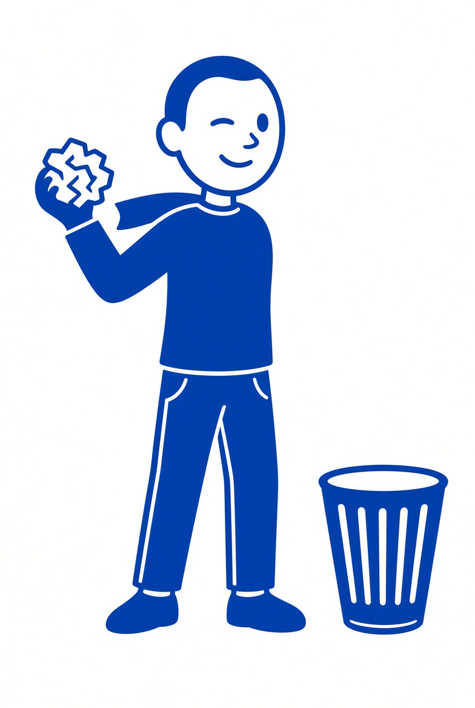
mikken
to aim
regelmatigrang 8284Sport & gamesgetekend
- Scene
- one adult stands with one eye closed, holding a crumpled paper ball at shoulder height and lining it up with a waste-paper basket across the room; the arm is drawn back, not yet thrown.
- Must read
- an arm drawn back with one eye closed, lined up on a basket.
- Avoid
- a ball in the air (gooien); a sheet dropped into a bin from close by (verwijderen); a finger pointing (wijzen); a club swung back over a ball (golfen).
- Alt text
- Iemand heeft één oog dicht en houdt een prop papier klaar, met de blik op een prullenbak.
- Example
- Hij mikt op de prullenbak, maar gooit er net naast.
He aims at the bin but throws just past it.
mikken.png · rang 8284 · B2 regelmatig · lexicon woorden.tsv
geen beeld
signaleren
to signal, to observe
regelmatigrang 8290Abstract & general
- Scene
- A teacher stands at a classroom window and points outside to a colleague beside her. In the playground beyond the glass one child stands alone near a wall, while several other children play together some way off.
- Must read
- the pointing teacher and the lone child outside.
- Avoid
- a teacher alone looking out of a window with nobody beside her (zien); a teacher at a board explaining a sum (uitleggen); a teacher writing in a notebook (noteren); a teacher waving through the glass (zwaaien).
- Alt text
- Een lerares wijst naar buiten tegen een collega; op het schoolplein staat een kind alleen terwijl de rest samen speelt.
- Example
- De juf signaleert dat Sam vaak alleen is.
The teacher notices that Sam is often alone.
signaleren.png · rang 8290 · B2 regelmatig · lexicon woorden.tsv
geen beeld
timmeren
to hammer, to do carpentry
regelmatigrang 8293Abstract & general
- Scene
- one adult stands at a workbench holding a nail against a plank with one hand and a raised hammer in the other; the nail is already partly driven in; the plank lies flat on the bench, and no saw or second person is in the frame.
- Must read
- a raised hammer above a nail that is part-way into a plank.
- Avoid
- a person knocking on a door (kloppen); a person turning a screwdriver (schroeven); a person sawing a plank (zagen); a person striking a bell (slaan).
- Alt text
- Iemand houdt met een hand een spijker tegen een plank en heeft in de andere een opgeheven hamer.
- Example
- Mijn vader timmert een nieuwe kast.
My father is building a new cupboard.
timmeren.png · rang 8293 · B2 regelmatig · lexicon woorden.tsv
geen beeld
googelen
to google
regelmatigrang 8303Abstract & general
- Scene
- one adult sits at a plain desk with a laptop open, one finger on the keypad and the face leaning in towards the screen; a plain round magnifying glass shape is drawn alone on the screen above a straight empty bar.
- Must read
- a magnifying glass shape above an empty bar on a laptop screen.
- Avoid
- a person typing a letter on a laptop (typen); a person looking in a book (opzoeken); a person reading a newspaper (lezen); a person talking on the phone (bellen); a person writing an email (mailen).
- Alt text
- Iemand zit voorovergebogen bij een laptop waarop een vergrootglas boven een lege balk staat.
- Example
- Ik google het adres van het restaurant.
I google the restaurant's address.
googelen.png · rang 8303 · B2 regelmatig · lexicon woorden.tsv
geen beeld
klemmen
to stick, to jam
regelmatigrang 8304Food & drink
- Scene
- One man walks along a plain path with a thick book pressed tight between his upper arm and his side. His hand on that side hangs free and his other hand carries a cup. He looks ahead. Nothing else in the picture.
- Must read
- the thick book pressed tight under his arm.
- Avoid
- a man holding a book open in both hands (lezen); a man carrying a bag on his shoulder (dragen); a man with a book in his hand held down at his side (houden); a door shut on a person's finger (knijpen); a man putting a book on a shelf.
- Alt text
- Een man loopt met een dik boek stevig onder zijn arm en een kop in zijn andere hand.
- Example
- Sam klemt het boek onder zijn arm.
Sam clamps the book under his arm.
klemmen.png · rang 8304 · B2 regelmatig · lexicon woorden.tsv
geen beeld
nestelen
to nestle
regelmatigrang 8317Abstract & general
- Scene
- A bird settles down on a round nest of twigs lodged in the fork of a bare tree, wings folding in and body sinking into the nest. A man stands below on the grass and looks up at it with interest. Nothing else in the frame.
- Must read
- the bird sinking into the twig nest in the fork of the tree.
- Avoid
- a bird sitting on a branch with no twigs (zitten); a bird flying away from the tree (vliegen); a bird sitting on eggs with a worried look (broeden); a man holding a birdhouse (ophangen).
- Alt text
- Een vogel gaat op een rond twijgenbed zitten in de tak van een boom; een man kijkt omhoog.
- Example
- De vogel nestelt in de boom.
The bird is nesting in the tree.
nestelen.png · rang 8317 · B2 regelmatig · lexicon woorden.tsv

brullen
to roar
regelmatigrang 8333Animalsgetekend
- Scene
- a lion stands on a rock with its mane spread and its mouth wide open, head thrown forward; one child watches from behind a fence at a distance. The mane stands out round the head like a ring.
- Must read
- a lion with its mouth wide open.
- Avoid
- a dog with an open mouth at a gate (blaffen); a person shouting (roepen); a cat asleep (slapen); a person with a hand over an open mouth (gapen).
- Alt text
- Een leeuw staat op een rots met de bek wijd open en de manen wijd uit.
- Example
- De leeuw brulde zo hard dat de kinderen schrokken.
The lion roared so loudly that the children were startled.
brullen.png · rang 8333 · B2 regelmatig · lexicon woorden.tsv

knielen
to kneel
regelmatigrang 8338Movement & positiongetekend
- Scene
- one adult kneels on both knees on the floor beside a low cupboard, back straight and upright, hands resting on the thighs, looking into the open cupboard. The cupboard door stands open and nothing else is in the picture. The person kneels on both knees with the thighs straight up, hips well above the heels and not resting on the lower legs, torso tall, hands on the thighs.
- Must read
- a person upright on both knees.
- Avoid
- hands folded with the head bowed (bidden); a person sinking to the knees (zakken); a person on hands and knees (kruipen); a person sitting with folded legs (mediteren).
- Alt text
- Iemand steunt met beide onderbenen op de vloer voor een laag kastje, het bovenlijf rechtop, de handen op de bovenbenen.
- Example
- Ze knielt om onder de kast te kijken.
She kneels to look under the cupboard.
knielen.png · rang 8338 · B2 regelmatig · lexicon woorden.tsv
geen beeld
specialiseren
to specialize
regelmatigrang 8344Abstract & general
- Scene
- One adult man stands in a woodworking shop and sands the back of a chair with a block of sandpaper. Only chairs stand in the room, in all sizes, from small to tall. No tables, no cupboards, no other people.
- Must read
- a workshop holding only chairs, in all sizes.
- Avoid
- a man sanding one table among tables and cupboards (maken); a shelf of mixed tools (verzamelen); a man at a school desk with a book (studeren); a man selling chairs to a customer (verkopen).
- Alt text
- Een man schuurt in een werkplaats de rug van een stoel; om hem heen staan alleen stoelen, groot en klein.
- Example
- Piet specialiseert zich in stoelen.
Piet specialises in chairs.
specialiseren.png · rang 8344 · B2 regelmatig · lexicon woorden.tsv
geen beeld
neigen
to incline
regelmatigrang 8349Abstract & general
- Scene
- A man stands beside a table with a tie hanging crooked, his shirt half out of his trousers and one shoelace undone. His whole body leans a little to one side. Beside him a pile of loose papers leans too. No other person.
- Must read
- the man's crooked tie, loose shoelace and leaning body.
- Avoid
- a man dropping a cup on the floor (laten vallen); a man stumbling over a step (struikelen); a man bowing politely (buigen); a tidy desk with a neat stack of papers.
- Alt text
- Een man met een scheve das en een hemd half uit zijn broek staat scheef naast een rommelig stapeltje papier.
- Example
- Piet neigt ertoe slordig te zijn.
Piet tends to be untidy.
neigen.png · rang 8349 · B2 regelmatig · lexicon woorden.tsv
geen beeld
ordenen
to arrange, to put in order
regelmatigrang 8350Abstract & general
- Scene
- one adult stands at a long plain table with three neat even piles of identical sheets in a row and lays one more sheet on top of the third pile; the sheets are blank.
- Must read
- three neat even piles of sheets in a row and a hand placing one more on a pile.
- Avoid
- a hand stacking blocks into a tower (stapelen); a hand adding a block to a row (voegen); sheets flying loose in the air (gooien); a person putting a plate in a cupboard (opruimen).
- Alt text
- Iemand staat aan een lange tafel met drie nette stapels papier en legt een vel boven op de derde stapel.
- Example
- Zij ordent de papieren op haar bureau.
She puts the papers on her desk in order.
ordenen.png · rang 8350 · B2 regelmatig · lexicon woorden.tsv
geen beeld
wapenen
to arm
regelmatigrang 8354Body & health
- Scene
- one figure pulls a round shield off a rack on the wall with one hand and holds a sword in the other, feet apart and ready; the rack holds a spear and a helmet hanging in a row, and no second person is in the frame.
- Must read
- a hand pulling a shield from a wall rack with a sword in the other hand.
- Avoid
- a person picking up a spoon (pakken); a person carrying a bag (dragen); a person building a wall (bouwen); two people fighting (vechten).
- Alt text
- Iemand haalt een rond schild van een rek aan de muur en houdt een zwaard in de andere hand.
- Example
- De ridder wapent zich met een schild.
The knight arms himself with a shield.
wapenen.png · rang 8354 · B2 regelmatig · lexicon woorden.tsv

struikelen
to trip
regelmatigrang 8374Movement & positiongetekend
- Scene
- one adult walking along a path catches a foot on a stone and pitches forward, arms flung out in front, the back foot still on the ground. The stone sticks up from the flat path and nothing else is in the picture.
- Must read
- a foot caught on a stone with the body pitching forward.
- Avoid
- a person already lying on the ground (vallen); a person sinking to the knees (zakken); a person jumping (springen); a knee bumped on a table (stoten).
- Alt text
- Iemand blijft met een voet achter een steen hangen en schiet met de armen vooruit naar voren.
- Example
- Pas op, je kunt over die losse tegel struikelen.
Careful, you could trip over that loose tile.
struikelen.png · rang 8374 · B2 regelmatig · lexicon woorden.tsv
geen beeld
hollen
to run, to rush
regelmatigrang 8378Movement & position
- Scene
- one adult runs at full stride leaning far forward with the arms pumping and one foot just leaving the ground, the mouth open, with a few short straight lines behind the back.
- Must read
- a long forward-leaning stride with pumping arms and short lines behind.
- Avoid
- a person walking fast (lopen); a person running after a bus that has left (missen); a person jumping over a puddle (springen); a person on a bicycle (fietsen); a finish line.
- Alt text
- Iemand leunt voorover in een lange pas met stampende armen en korte streepjes achter zich.
- Example
- Ik hol naar de bus.
I rush to the bus.
hollen.png · rang 8378 · B2 regelmatig · lexicon woorden.tsv
geen beeld
verzoenen
to reconcile
regelmatigrang 8410Abstract & general
- Scene
- two adults stand facing each other after a quarrel, both holding the arms wide open and stepping a pace nearer, the faces softened with small smiles; the hands are about to meet in the middle; their shoulders have dropped.
- Must read
- two adults stepping towards each other with open arms and softened faces.
- Avoid
- two people shaking hands as a greeting (groeten); two people arguing with pointed fingers (ruziemaken); two people turning their backs (negeren); two people hugging tightly (omhelzen); a person handing a gift (geven).
- Alt text
- Twee mensen lopen met open armen en zachte gezichten op elkaar af.
- Example
- Na de ruzie verzoenden ze zich.
After the argument, they made up.
verzoenen.png · rang 8410 · B2 regelmatig · lexicon woorden.tsv
geen beeld
wapperen
to flutter, to wave in the wind
regelmatigrang 8411Abstract & general
- Scene
- One plain rectangular cloth flag on a pole streams out flat sideways in a wavy line while a tree beside the pole bends the same way. The pole stands upright on bare ground, and the edge of the cloth ripples in sharp folds. Nothing else is in the frame, and no building or person appears.
- Must read
- A plain flag streaming out sideways from its pole in a wavy line.
- Avoid
- a flag hanging slack (hangen); a hand waving (zwaaien); a tree bending in the wind (waaien); a bird flying (vliegen).
- Alt text
- Aan een paal golft een effen doek recht opzij met een kronkelende rand terwijl een boom ernaast buigt.
- Example
- De vlag wappert op het dak.
The flag flutters on the roof.
wapperen.png · rang 8411 · B2 regelmatig · lexicon woorden.tsv
geen beeld
afbeelden
to depict
regelmatigrang 8425Abstract & general
- Scene
- One woman stands in front of a large framed painting on a plain wall. The painting shows a sailing boat on calm water, clearly recognisable. She looks at the picture with her hands behind her back. Nothing else is in the frame.
- Must read
- the framed picture with a recognisable boat in it.
- Avoid
- a woman painting at an easel (schilderen); a woman taking a photo with a camera (fotograferen); a woman hanging a frame on a nail (ophangen); a man drawing a boat on paper (tekenen).
- Alt text
- Een vrouw staat voor een ingelijst doek met een zeilboot op rustig water.
- Example
- Het schilderij beeldt een boot af.
The painting depicts a boat.
afbeelden.png · rang 8425 · B2 regelmatig · lexicon woorden.tsv
geen beeld
glippen
to slip
regelmatigrang 8430Abstract & general
- Scene
- one adult stands with an open hand, the fingers spread, just above a cup that tilts in mid air a short way over the floor; the adult's mouth is open and the eyes are wide.
- Must read
- a cup tilting in mid air just below an open hand with spread fingers.
- Avoid
- a hand setting a cup on a table (zetten); a cup broken on the floor (breken); a hand throwing a cup (gooien); a hand gripping a cup firmly (vasthouden).
- Alt text
- Een hand met gespreide vingers staat open boven een kopje dat in de lucht kantelt, boven de vloer.
- Example
- Het kopje glipt uit mijn hand.
The cup slips out of my hand.
glippen.png · rang 8430 · B2 regelmatig · lexicon woorden.tsv
geen beeld
zuchten
to sigh
regelmatigrang 8443Emotion & feeling
- Scene
- one adult stands with the shoulders dropped, eyes closed and cheeks puffed, and a wavy stroke leaves the mouth. The arms hang loose at the sides, the room behind is plain, and no other person or object is in the frame.
- Must read
- dropped shoulders and puffed cheeks with a wavy stroke leaving the mouth.
- Avoid
- a person blowing out a candle (blazen); a wide yawn (gapen); a panting runner (hijgen); a person whistling (fluiten).
- Alt text
- Iemand laat de schouders zakken met bolle wangen en een golvend streepje uit de mond.
- Example
- Ze zucht en pakt haar tas.
She sighs and picks up her bag.
zuchten.png · rang 8443 · B2 regelmatig · lexicon woorden.tsv
geen beeld
beschilderen
to paint, to decorate with paint
regelmatigrang 8449House & home
- Scene
- one adult stands before a plain wall with a brush in one hand, next to a row of simple flowers painted on the wall, each a round centre with five round petals; the last flower in the row is only half done.
- Must read
- a brush beside a row of simple flowers, the last one half finished.
- Avoid
- a roller covering the wall in one wide stripe (schilderen); a pencil drawing on paper (tekenen); a person washing a wall (wassen); a person pasting a roll of wallpaper (behangen); a bucket of paint.
- Alt text
- Iemand staat voor een muur met een penseel naast een rij bloemen, de laatste is nog niet af.
- Example
- Ze beschildert de muur met grote bloemen.
She decorates the wall with big flowers.
beschilderen.png · rang 8449 · B2 regelmatig · lexicon woorden.tsv
geen beeld
huwen
to wed
regelmatigrang 8461People & relations
- Scene
- two adults stand facing each other holding both hands; one wears a long dress with a veil and the other a suit with a bow tie, and both are smiling.
- Must read
- two people facing each other holding both hands, one in a long dress with a veil, one in a suit.
- Avoid
- two people kissing (kussen); two people dancing (dansen); two people posing for a photo (poseren); two people walking apart (scheiden).
- Alt text
- Twee mensen staan tegenover elkaar met handen in elkaar; een draagt een jurk met sluier, de ander een pak.
- Example
- Ze huwen volgend jaar.
They are getting married next year.
huwen.png · rang 8461 · B2 regelmatig · lexicon woorden.tsv
geen beeld
omringen
to encircle
regelmatigrang 8476Abstract & general
- Scene
- One adult sits in the middle of a ring of tall stacks of books with only the head and shoulders showing above them; the stacks touch one another all the way round, the adult looks up, and no shelf or door is in the frame.
- Must read
- A person in the middle of a ring of tall book stacks.
- Avoid
- a person reading one book (lezen); a person collecting objects (verzamelen); a person tidying a shelf (opruimen); a person sitting alone (zitten).
- Alt text
- Iemand zit in het midden van een kring hoge stapels boeken waar alleen het hoofd en de schouders bovenuit steken.
- Example
- Hij omringt zich met boeken.
He surrounds himself with books.
omringen.png · rang 8476 · B2 regelmatig · lexicon woorden.tsv
geen beeld
jeuken
to itch
regelmatigrang 8504Abstract & general
- Scene
- one adult sits with a sleeve pushed up, the fingertips of the other hand raking the bare forearm, the face scrunched with one eye shut. The other arm rests on the knee and the room is plain, with no objects or other people.
- Must read
- fingertips raking a bare forearm with a scrunched face.
- Avoid
- nails scratching a wall (krabben); a hand rubbing a sore elbow (wrijven); a hand slapping a mosquito (slaan); a person washing an arm under a tap (wassen).
- Alt text
- Iemand schuift een mouw op en haalt met de vingers van de andere hand over de onderarm.
- Example
- Mijn arm jeukt.
My arm itches.
jeuken.png · rang 8504 · B2 regelmatig · lexicon woorden.tsv
geen beeld
beven
to tremble, to shake
regelmatigrang 8514Emotion & feeling
- Scene
- one adult stands with the knees pressed together and both arms held out in front, the fingers spread, with short double lines around the hands and the knees, the eyes wide and the mouth wobbling.
- Must read
- a figure with knees together and arms in front, short double lines around hands and knees, wide eyes.
- Avoid
- a person hugging the own arms in the cold (rillen); a phone buzzing in a hand (trillen); a person running away (vluchten); a person jumping with arms up (springen).
- Alt text
- Iemand staat met de knieën tegen elkaar en de armen naar voren, met dubbele streepjes bij handen en knieën.
- Example
- Ik beef van de zenuwen voor het examen.
I am shaking with nerves before the exam.
beven.png · rang 8514 · B2 regelmatig · lexicon woorden.tsv
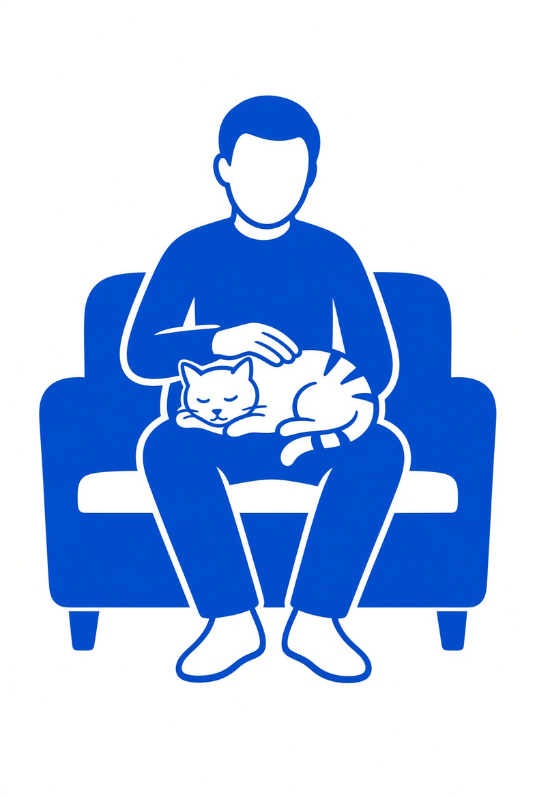
strelen
to stroke
regelmatigrang 8522Body & healthgetekend
- Scene
- one adult sits on a sofa with a cat on the lap and runs a flat hand along the cat's back from head to tail; the cat's eyes are closed.
- Must read
- a flat hand moving along a cat's back.
- Avoid
- a child hugging a teddy (knuffelen); fingernails on a forearm (krabben); a cat crouched before a mouse (jagen); a dog being brushed.
- Alt text
- Iemand zit met een kat op schoot en haalt een vlakke hand over de rug van het dier.
- Example
- Ze streelt de kat zachtjes over zijn rug.
She gently strokes the cat on its back.
strelen.png · rang 8522 · B2 regelmatig · lexicon woorden.tsv
geen beeld
wankelen
to wobble, to totter
regelmatigrang 8525Abstract & general
- Scene
- one adult stands on one leg with the body tilted to one side and both arms flapping wide; the other leg is bent in the air. The ground is flat and plain, the face shows alarm, and no furniture or other people are in the frame.
- Must read
- a one-legged stance with a tilted body and flapping arms.
- Avoid
- a person lying on the floor (vallen); a person dancing (dansen); a person walking along a rope (balanceren); a person walking steadily (lopen).
- Alt text
- Iemand staat op een been met een scheef lichaam en maait met de armen om overeind te blijven.
- Example
- Hij wankelt op een been.
He wobbles on one leg.
wankelen.png · rang 8525 · B2 regelmatig · lexicon woorden.tsv
geen beeld
declareren
to claim (the costs)
regelmatigrang 8527Law & conflict
- Scene
- One adult man sits at a desk and hands a long paper receipt and a single form across the desk to an adult woman. Her hand is held out to take them. The two face each other with the papers halfway between their hands. Nothing else on the desk.
- Must read
- the receipt and form passing from his hand to hers across the desk.
- Avoid
- a man putting coins on a counter (betalen); a woman handing money back to a man (vergoeden); a man signing his name on a form; a train ticket held up; a bank note.
- Alt text
- Een man geeft een lange bon en een formulier aan een vrouw achter een bureau; zij steekt haar hand uit.
- Example
- Mark declareert zijn treinkaartje bij zijn baas.
Mark claims his train ticket from his boss.
declareren.png · rang 8527 · B2 regelmatig · lexicon woorden.tsv
geen beeld
kreunen
to groan
regelmatigrang 8534Abstract & general
- Scene
- one adult hugs a huge box in both arms with the knees bent, the eyes squeezed shut and the mouth pulled open to one side; the box is as wide as the body and the feet stand flat on a plain floor with nothing else around.
- Must read
- an open mouth and squeezed eyes above a huge box held in both arms.
- Avoid
- a person holding a bar overhead (heffen); a person carrying a light bag with a smile (dragen); a person shouting with the hands cupped at the mouth (roepen); a person yawning (gapen); a cracked floor.
- Alt text
- Iemand houdt met beide armen een enorme doos vast, de knieën gebogen, de ogen dichtgeknepen en de mond scheef open.
- Example
- Hij kreunt onder het gewicht van de kist.
He groans under the weight of the crate.
kreunen.png · rang 8534 · B2 regelmatig · lexicon woorden.tsv
geen beeld
loeren
to peek, to lurk
regelmatigrang 8535Abstract & general
- Scene
- one person presses against the edge of a wall, with only half of the head, one large eye and a few fingertips showing round the corner. The wall is plain and tall, the free hand clings to the corner, and no other person is in the frame.
- Must read
- half a head with one large eye round the edge of a wall.
- Avoid
- a person looking openly through a window (kijken); a person hiding behind a tree (verstoppen); a person tiptoeing (sluipen); a person staring with wide eyes (staren).
- Alt text
- Iemand drukt zich tegen de rand van een muur; alleen een halve kop met een groot oog steekt eromheen.
- Example
- Het kind loert om de hoek.
The child peeks round the corner.
loeren.png · rang 8535 · B2 regelmatig · lexicon woorden.tsv
geen beeld
mopperen
to grumble, to complain
regelmatigrang 8536Abstract & general
- Scene
- one adult stands with the arms folded over the chest, the brows lowered and the mouth turned down, one finger of the folded hand pointing at a pile of dishes in the sink; the head is turned sideways and the shoulders are hunched.
- Must read
- folded arms, lowered brows and a turned-down mouth beside a sink of dishes.
- Avoid
- a person shouting with a raised fist (schreeuwen); a person laughing at a friend (lachen); a person washing the dishes (afwassen); a person crying (huilen); a person sleeping in a chair (slapen).
- Alt text
- Iemand staat met gevouwen armen en een neerwaartse mond naast een gootsteen vol vaat.
- Example
- Hij moppert altijd over het weer.
He always grumbles about the weather.
mopperen.png · rang 8536 · B2 regelmatig · lexicon woorden.tsv
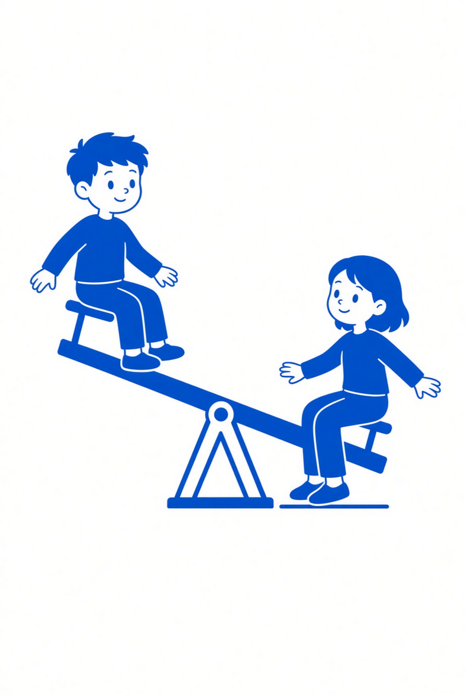
wippen
to seesaw
regelmatigrang 8541Sport & gamesgetekend
- Scene
- two children sit at opposite ends of a seesaw in a playground; the left one is high in the air and the right one is low, feet pushing off the ground.
- Must read
- a seesaw with one child up and one child down.
- Avoid
- a child going down a slide (glijden); a child jumping (springen); two pans on a balance (wegen); a child on a swing.
- Alt text
- Twee kinderen zitten elk aan een kant van een lange plank; het ene kind is boven, het andere beneden.
- Example
- Mijn dochter wil graag met haar vriendinnetje wippen.
My daughter would like to play on the seesaw with her friend.
wippen.png · rang 8541 · B2 regelmatig · lexicon woorden.tsv
geen beeld
deugen
to be good
regelmatigrang 8543Abstract & general
- Scene
- One adult man stands beside a bicycle whose front wheel is bent into a bow and whose tyre is flat. He looks down at it, shaking his head with his arms crossed. A bare pavement, no other person, no tools.
- Must read
- the bent wheel and flat tyre beside the head-shaking man.
- Avoid
- a man pumping up the tyre with a hand pump (oppompen); a man with a spanner on the wheel (repareren); a man riding the bike away happily (fietsen); a new shiny bicycle in a shop; a thumbs-up.
- Alt text
- Een man staat naast een fiets met een kromgebogen voorwiel en een platte band en kijkt bedenkelijk.
- Example
- De oude fiets deugt niet meer.
The old bike is no good any more.
deugen.png · rang 8543 · B2 regelmatig · lexicon woorden.tsv
geen beeld
hijgen
to pant, to gasp
regelmatigrang 8547Abstract & general
- Scene
- One adult stands bent forward with both hands on the knees and a wide open mouth with the tongue hanging out, drops flying from the forehead. The chest is heaving and the eyes are half shut. The adult stands alone on a flat path, with no other people and nothing else in the frame.
- Must read
- Bent over with hands on the knees and a wide open mouth.
- Avoid
- a runner mid-stride (rennen); a person with drops on the forehead wiping it (zweten); a person yawning (gapen); a person sighing with a hand on the chest (zuchten).
- Alt text
- Iemand staat voorovergebogen met beide handen op de knieën en een wijd open mond waar een tong uit hangt.
- Example
- Na de trap hijgt hij zwaar.
After the stairs he is panting hard.
hijgen.png · rang 8547 · B2 regelmatig · lexicon woorden.tsv
geen beeld
schrapen
to scrape
regelmatigrang 8554Abstract & general
- Scene
- one adult stands at a car and pulls a flat scraper across the windscreen, the glass half cleared in a wide band and the other half still with a thick layer of frost.
- Must read
- a flat blade pulled across a windscreen, half cleared.
- Avoid
- a person wiping a window with a cloth (vegen); a person washing a car with a sponge (wassen); a person scratching a wall (krabben); a person sanding wood (schuren).
- Alt text
- Iemand haalt met een plat blad over de ruit van een auto; de helft ervan is al helder.
- Example
- Hij schraapt het ijs van de ruit.
He scrapes the ice off the window.
schrapen.png · rang 8554 · B2 regelmatig · lexicon woorden.tsv
geen beeld
gloeien
to glow
regelmatigrang 8561Abstract & general
- Scene
- a light bulb hangs from a cord with a curled filament visible inside the glass and eight short straight rays spread evenly around it; no person, no lamp shade and no ceiling, only the cord rising out of the top of the frame.
- Must read
- a bulb with a curled filament inside and short rays all around it.
- Avoid
- a sun with long rays (stralen); a candle with a flame (branden); a bulb with no rays around it (doven); a person warming the hands at a radiator (verwarmen).
- Alt text
- Een peertje met een gekrulde draad erin hangt aan een snoer en heeft korte streepjes eromheen.
- Example
- De lamp gloeit in het donker.
The bulb glows in the dark.
gloeien.png · rang 8561 · B2 regelmatig · lexicon woorden.tsv
geen beeld
ontlenen
to derive
regelmatigrang 8581Abstract & general
- Scene
- A woman stands at a kitchen counter with a mixing bowl and stirs with a spoon. Beside the bowl lies an old cookbook, open, with worn pages; she looks down into it as she stirs. No text visible on the pages.
- Must read
- the old open book beside the bowl: the recipe comes from it.
- Avoid
- a woman reading a book on a sofa (lezen); a woman cooking at a stove (koken); a woman writing on paper (schrijven); a woman borrowing a book at a library desk (lenen).
- Alt text
- Een vrouw staat bij het aanrecht met een kom en kijkt in een oud boek dat open ligt.
- Example
- Eva ontleent het recept aan een oud boek.
Eva takes the recipe from an old book.
ontlenen.png · rang 8581 · B2 regelmatig · lexicon woorden.tsv
geen beeld
verwittigen
to notify
regelmatigrang 8590Communication & language
- Scene
- One man stands on a station platform with a phone pressed to his ear and his mouth open, speaking; his other hand is raised slightly as he explains. Behind him a train stands with its doors open. No other person in the picture.
- Must read
- the man speaking into the phone beside the train.
- Avoid
- a man writing a note on paper (schrijven); a man pointing at a board with times (aanwijzen); a man waving at a train (zwaaien); a man shouting across the platform (roepen).
- Alt text
- Een man staat op een perron met een telefoon tegen zijn oor, achter hem staat een trein.
- Example
- Jan verwittigt zijn baas dat de trein te laat is.
Jan notifies his boss that the train is late.
verwittigen.png · rang 8590 · B2 regelmatig · lexicon woorden.tsv
geen beeld
frituren
to deep-fry
regelmatigrang 8597Food & drink
- Scene
- one adult lowers a wire basket of potato sticks into a deep pot of oil with small bubbles rising, steam strokes above it. The pot sits on a small counter, the adult wears an apron, and one hand grips the basket handle firmly.
- Must read
- a basket of potato sticks lowered into a pot of bubbling oil.
- Avoid
- an egg in a frying pan (bakken); a pot with a lid and steam (koken); a person eating a bag of chips (eten); a person cutting potatoes (snijden).
- Alt text
- Iemand laat een mandje met staafjes aardappel zakken in een bak met borrelende olie.
- Example
- Wij frituren de patat zelf.
We deep-fry the chips ourselves.
frituren.png · rang 8597 · B2 regelmatig · lexicon woorden.tsv
geen beeld
razen
to speed along
regelmatigrang 8601Sport & games
- Scene
- a car is seen from the side with the nose to the right and a long row of straight streaks behind it, the whole body stretched forward; no driver and no road marks are drawn.
- Must read
- a car with a long row of streaks stretched out behind it.
- Avoid
- a person running (hollen); a car parked at the kerb (parkeren); a person at the wheel of a car (besturen); a person on a bicycle (fietsen); a crowd at the side.
- Alt text
- Een auto van opzij gezien, de neus naar rechts, met een lange rij strepen erachter.
- Example
- De auto raast over de snelweg.
The car races along the motorway.
razen.png · rang 8601 · B2 regelmatig · lexicon woorden.tsv
geen beeld
razen (storm)
to howl (storm)
regelmatigrang 8601Sport & games
- Scene
- a single tall tree is bent hard to one side so that all its branches stream the same way, and a handful of leaves are blown off horizontally; a small house with a chimney stands beside it.
- Must read
- a tree bent far over to one side with leaves blowing off horizontally.
- Avoid
- a person holding an umbrella that has turned inside out (waaien); rain falling straight down (regenen); a person holding on to a hat (vasthouden); snow falling (sneeuwen); lightning.
- Alt text
- Een boom buigt diep door naar één kant en de blaadjes vliegen horizontaal weg.
- Example
- De storm raast over het land.
The storm rages over the country.
razen-storm.png · rang 8601 · B2 regelmatig · lexicon woorden.tsv
geen beeld
verlammen
to paralyse
regelmatigrang 8604Abstract & general
- Scene
- One adult woman looks out of a window onto a street where a bus and several cars stand bumper to bumper under thick falling snowflakes; nothing on the street moves, and no people are outside.
- Must read
- a whole street of vehicles standing stuck in snow.
- Avoid
- a car driving along a snowy road (rijden); a person shovelling snow (scheppen); a person throwing a snowball (gooien); people on strike with banners (staken).
- Alt text
- Een vrouw kijkt uit een raam naar auto's en een bus die stilstaan in een straat vol vlokken.
- Example
- De sneeuw verlamt de stad.
The snow paralyses the city.
verlammen.png · rang 8604 · B2 regelmatig · lexicon woorden.tsv
geen beeld
migreren
migrate
regelmatigrang 8612Technology & tools
- Scene
- One girl sits on a plain fence and looks up at a flock of birds in a wide V shape flying across the sky over a bare empty field. A single bare tree stands to one side. Her head is tilted back and one hand shades her eyes.
- Must read
- the flock of birds in a V shape crossing the sky above the girl on the fence.
- Avoid
- a single bird sitting on a branch (zitten); a bird landing on a hand (landen); a plane flying with a trail (vliegen); a girl chasing a bird in a garden (jagen).
- Alt text
- Een meisje zit op een hek en kijkt omhoog naar vogels in een V-vorm boven een leeg veld.
- Example
- De vogels migreren naar het zuiden.
The birds migrate to the south.
migreren.png · rang 8612 · B2 regelmatig · lexicon woorden.tsv
geen beeld
onderstrepen
to underline
regelmatigrang 8632Abstract & general
- Scene
- one hand draws a straight line with a pen under a row of scribble marks on a sheet of paper; the line is half drawn, the sheet lies flat on a plain table, and no ruler, second hand or other object is in the frame.
- Must read
- a straight pen line under a row of scribble marks.
- Avoid
- a pen writing curly letters (schrijven); a line struck through the middle of the marks (doorhalen); a loop drawn round a word (omcirkelen); a pen drawing a picture (tekenen).
- Alt text
- Een hand trekt met een pen een rechte lijn onder een rij krabbels op een vel papier.
- Example
- Onderstreep de belangrijkste woorden.
Underline the most important words.
onderstrepen.png · rang 8632 · B2 regelmatig · lexicon woorden.tsv
geen beeld
omhelzen
to hold close
regelmatigrang 8649Abstract & general
- Scene
- two adults stand close together, each with both arms wrapped around the other's back, the heads resting against each other's shoulders and the eyes closed; one pair of feet stands on tiptoe.
- Must read
- two adults with both arms wrapped around each other's backs.
- Avoid
- two people shaking hands (groeten); two people waving at a distance (zwaaien); a person patting a friend's back (troosten); a person carrying a friend (dragen); two people dancing (dansen).
- Alt text
- Twee mensen houden elkaar stevig vast met beide armen om de rug, de ogen dicht.
- Example
- Ze omhelst haar zus bij het station.
She hugs her sister at the station.
omhelzen.png · rang 8649 · B2 regelmatig · lexicon woorden.tsv
geen beeld
pogen
to strive, to try hard
regelmatigrang 8720Abstract & general
- Scene
- One adult stands on tiptoe at a tall cupboard with one arm stretched high towards a jar on the top shelf, face turned up. The jar stands just beyond the fingertips, and no chair or ladder is in the picture.
- Must read
- the stretched arm and the jar just beyond the fingertips.
- Avoid
- a person on a stepladder holding the jar (pakken); a person climbing onto the counter (klimmen); jumping with both feet off the ground (springen); a person pointing at the jar and asking another person (vragen)
- Alt text
- Een man op zijn tenen strekt zijn arm naar een pot op de bovenste plank.
- Example
- Jan poogt de pot van de hoogste plank te pakken.
Jan strives to take the jar from the highest shelf.
pogen.png · rang 8720 · B2 regelmatig · lexicon woorden.tsv
geen beeld
bewonen
to live in, to inhabit
regelmatigrang 8724Abstract & general
- Scene
- A family of three stands in the open front door of a small house with a chimney; above them one person looks out of an upstairs window. Washing hangs on a line beside the house and a path leads to the gate.
- Must read
- A house with a family in the open doorway and a face at the window.
- Avoid
- a person renting at a desk (huren); a person laying bricks (bouwen); a family with boxes in a van (verhuizen); a person buying keys (kopen).
- Alt text
- Een gezin staat in de open voordeur van een klein huis met schoorsteen; boven kijkt iemand uit het raam.
- Example
- Zij bewonen een klein huis in het dorp.
They live in a small house in the village.
bewonen.png · rang 8724 · B2 regelmatig · lexicon woorden.tsv
geen beeld
donderen
to thunder
regelmatigrang 8725Nature & weather
- Scene
- One heavy cloud hangs over a house with a jagged bolt below it, and a child under it presses both hands over the ears with shoulders raised. The child stands on a lawn in front of the house with eyes squeezed shut. Nothing else is in the frame.
- Must read
- a bolt from a heavy cloud and a person with hands over the ears.
- Avoid
- heavy rain on an umbrella (regenen); wind bending a tree (stormen); a drum being struck (slaan); a person shouting (schreeuwen).
- Alt text
- Een zware wolk met een gekartelde streep boven een huis; een kind drukt beide handen tegen de oren.
- Example
- Het dondert en bliksemt buiten.
It is thundering and lightning outside.
donderen.png · rang 8725 · B2 regelmatig · lexicon woorden.tsv
geen beeld
krijsen
to shriek, to scream
regelmatigrang 8754Abstract & general
- Scene
- One adult has both hands raised and the mouth stretched into a tall oval with wide eyes, backing away from a small mouse on the floor. One foot is lifted off the floor and the knees are bent. The mouse sits still, and nothing else is in the frame.
- Must read
- a tall oval mouth and raised hands facing a mouse on the floor.
- Avoid
- a child crying with tears (janken); a person calling out to a friend (roepen); a person laughing (lachen); a person singing (zingen).
- Alt text
- Iemand houdt beide handen omhoog met een hoog opengesperde mond en kijkt naar een muisje op de vloer.
- Example
- Ze krijst als ze de muis ziet.
She shrieks when she sees the mouse.
krijsen.png · rang 8754 · B2 regelmatig · lexicon woorden.tsv
geen beeld
zetelen
to reside
regelmatigrang 8760Abstract & general
- Scene
- A large old house stands beside a river, wide front steps leading to the door. One adult in a suit walks up the steps. Through the tall windows several adults can be seen sitting at desks. No family scenes, no beds.
- Must read
- the big old house by the river with people at desks in the windows.
- Avoid
- a man unlocking the door of an ordinary home (wonen); a man carrying boxes up the steps (verhuizen); a person asleep in a bed behind a window (slapen); a shop sign over the door.
- Alt text
- Een groot oud huis staat aan een rivier, en door de ramen zitten mensen aan bureaus.
- Example
- Het bedrijf zetelt in een oud huis aan de rivier.
The company has its seat in an old house by the river.
zetelen.png · rang 8760 · B2 regelmatig · lexicon woorden.tsv
geen beeld
geleiden
to guide, to lead
regelmatigrang 8785Nature & weather
- Scene
- A woman walks in front of a loose line of five tourists through a plain museum hall, one arm stretched out to the side towards an open doorway and her head turned back to the group. The tourists follow with their faces turned towards her.
- Must read
- the woman in front with her arm out towards the doorway and a line behind her.
- Avoid
- a guide standing in front of a painting talking to a seated group (rondleiden); a person at the head of a marching crowd carrying a flag (leiden); a person walking a dog on a lead (uitlaten); a person holding a child's hand at a kerb (begeleiden).
- Alt text
- Een vrouw loopt voorop met een uitgestoken arm naar een deur, en een rij mensen volgt haar door de zaal.
- Example
- Els geleidt de toeristen door het museum.
Els guides the tourists through the museum.
geleiden.png · rang 8785 · B2 regelmatig · lexicon woorden.tsv
geen beeld
prikkelen
to stimulate
regelmatigrang 8789Abstract & general
- Scene
- One boy stands in front of a bakery window looking at loaves and cakes behind the glass, one hand on his stomach and his head tilted to one side. He is alone, with his mouth slightly open. No people inside the shop.
- Must read
- the boy's hand on his stomach as he looks at the bread.
- Avoid
- a boy eating a cake at a table (eten); a boy holding his nose over a flower (ruiken); a boy holding his stomach and bent double in pain (pijn); a boy paying at a counter (betalen); a boy poking another boy with a stick.
- Alt text
- Een jongen staat voor een etalage met brood en taarten, houdt zijn hand op zijn buik en kijkt naar binnen.
- Example
- De geur van brood prikkelt de trek van Sam.
The smell of bread whets Sam's appetite.
prikkelen.png · rang 8789 · B2 regelmatig · lexicon woorden.tsv
geen beeld
subsidiëren
to subsidize
regelmatigrang 8804Abstract & general
- Scene
- A woman in a jacket holds out a plain envelope to two men in work clothes standing next to a half-built playground frame with a swing. The nearer man has his hand open to take the envelope. Nothing else in the frame.
- Must read
- the envelope passing from the woman to the builders at the playground.
- Avoid
- a customer paying coins at a till (betalen); a woman handing a present to a child (cadeau geven); a man counting notes alone at a desk (tellen); the finished playground full of children (spelen).
- Alt text
- Een vrouw in een jas houdt een envelop voor twee mannen bij een half klaar klimrek met een schommel.
- Example
- De gemeente subsidieert de nieuwe speeltuin.
The council is subsidising the new playground.
subsidieren.png · rang 8804 · B2 regelmatig · lexicon woorden.tsv
geen beeld
brommen
to growl
regelmatigrang 8809Abstract & general
- Scene
- one big dog stands stiff with its head low and its lips curled back so the teeth show, a few short wavy lines in front of the mouth; the tail hangs straight down and the ears lie flat, and no person is in the frame.
- Must read
- a dog with a low head and curled lips showing teeth, wavy lines in front of the mouth.
- Avoid
- a dog barking with an open mouth (blaffen); a dog howling at the sky (janken); a dog biting a stick (bijten); a dog wagging its tail (kwispelen).
- Alt text
- Een grote hond staat stijf met de kop laag en opgetrokken lippen waardoor de tanden bloot zijn.
- Example
- De hond bromt als ik dichterbij kom.
The dog growls when I come closer.
brommen.png · rang 8809 · B2 regelmatig · lexicon woorden.tsv
geen beeld
brommen (cel)
to serve time (in jail)
regelmatigrang 8809Abstract & general
- Scene
- One man sits on a narrow bed in a small bare room with one small window crossed by thick bars, hands hanging between his knees; a heavy door stands shut behind him and the floor is plain stone.
- Must read
- a man on a narrow bed in a room with a barred window.
- Avoid
- a man asleep in a bed (slapen); a man waiting at a station (wachten); a man standing outside a locked gate (sluiten); a man walking out of a door (gaan).
- Alt text
- Een man zit op een smal bed in een kleine kamer met een raam met dikke tralies.
- Example
- Hij moet een jaar brommen.
He has to do a year in prison.
brommen-cel.png · rang 8809 · B2 regelmatig · lexicon woorden.tsv
geen beeld
verrekenen
to offset
regelmatigrang 8829Abstract & general
- Scene
- One woman and one man sit facing each other at a restaurant table. The man holds up a slip of paper; the woman slides coins and notes from her purse across the table towards him. Both look at the money. No waiter.
- Must read
- the woman sliding her share of money across the table to the man.
- Avoid
- a person paying a waiter at a till (betalen); two people clinking glasses (proosten); a man tearing up a slip of paper (verscheuren); a person leaving a tip on a plate.
- Alt text
- Twee mensen zitten aan een tafel; een vrouw legt munten en biljetten voor een man met een papiertje.
- Example
- Na het eten verrekenen Jan en Els wat ze elk moeten betalen.
After the meal Jan and Els settle what they each have to pay.
verrekenen.png · rang 8829 · B2 regelmatig · lexicon woorden.tsv
geen beeld
verwonderen
to be amazed
regelmatigrang 8830Emotion & feeling
- Scene
- one adult stands facing a tall tree that has a single large flower on top, the head tilted back, both eyebrows raised high and the mouth a round open O; one hand is lifted at chest height with the fingers spread.
- Must read
- wide eyes, a round open mouth and one spread hand while looking up at a tall tree.
- Avoid
- a person laughing at a friend (lachen); a person screaming with fear (schreeuwen); a person yawning (gapen); a person pointing at a bird (wijzen); a person running away (rennen).
- Alt text
- Iemand kijkt met opgetrokken wenkbrauwen en een ronde mond omhoog naar een hoge boom met één bloem.
- Example
- Zijn snelle antwoord verwondert me.
His quick answer amazes me.
verwonderen.png · rang 8830 · B2 regelmatig · lexicon woorden.tsv
geen beeld
zoemen
to buzz, to hum
regelmatigrang 8834Animals
- Scene
- One bee with a round furry body hovers beside a flower with blurred wings and short curved lines on both sides of the wings. The flower has a thick stem and wide petals, and the bee's legs dangle below its body. Nothing else is in the frame, and no other insects appear.
- Must read
- A bee with blurred wings and short curved lines beside a flower.
- Avoid
- a bee stinging a hand (steken); a bird flying (vliegen); a person singing (zingen); a bear growling (brommen).
- Alt text
- Een insect met een gestreepte rug zweeft met bewegende vleugels vlak naast een bloem.
- Example
- De bij zoemt rond de bloemen.
The bee buzzes around the flowers.
zoemen.png · rang 8834 · B2 regelmatig · lexicon woorden.tsv
geen beeld
multitasken
to multitask
regelmatigrang 8844Abstract & general
- Scene
- One adult stands at a stove holding a baby on one hip, a phone pressed to the other ear and a wooden spoon in the free hand over a steaming pan, all three things happening at the same moment, in a plain kitchen with nothing else.
- Must read
- three different actions done at once by one person.
- Avoid
- an adult only stirring a pan (roeren); an adult only talking on the phone (bellen); an adult only carrying a baby (dragen); two adults each doing one task.
- Alt text
- Een vrouw heeft een baby op haar heup, een telefoon aan haar oor en een lepel in een pan.
- Example
- Zij kookt, belt en past op de baby: ze doet alles tegelijk.
She cooks, phones and minds the baby: she does everything at once.
multitasken.png · rang 8844 · B2 regelmatig · lexicon woorden.tsv
geen beeld
mompelen
to mumble
regelmatigrang 8856Abstract & general
- Scene
- one adult stands with the chin tucked into the chest and one hand half covering a narrow slit of a mouth, the eyes cast down; a second adult at the left leans in with a hand cupped behind the ear.
- Must read
- a small narrow mouth behind a half raised hand and a head down, while a second adult cups an ear.
- Avoid
- a person shouting with the mouth wide (schreeuwen); a person whispering into a cupped hand at an ear (fluisteren); a person reading aloud (voorlezen); a person with a finger on the lips (zwijgen).
- Alt text
- Iemand staat met de kin op de borst en een hand voor de mond; een ander luistert dicht erbij.
- Example
- Hij mompelt iets en loopt weg.
He mumbles something and walks away.
mompelen.png · rang 8856 · B2 regelmatig · lexicon woorden.tsv
geen beeld
tackelen
to tackle
regelmatigrang 8860Sport & games
- Scene
- a footballer slides along the grass with one leg stretched out and reaches the ball at the feet of an opponent, who leaps up over the slide. The pitch is flat grass, the second player wears a plain shirt, and no goal or spectators are in the frame.
- Must read
- a sliding leg reaching the ball at an opponent's feet.
- Avoid
- a foot kicking at a person (schoppen); a player running with the ball (rennen); a player tumbling over (vallen); a player shooting at the goal (schieten).
- Alt text
- Een voetballer glijdt met een gestrekt been over het gras naar de bal terwijl een tegenstander opspringt.
- Example
- Hij tackelt de spits vlak voor het doel.
He tackles the striker just in front of the goal.
tackelen.png · rang 8860 · B2 regelmatig · lexicon woorden.tsv

wenken
to beckon
regelmatigrang 8862Communication & languagegetekend
- Scene
- one single large hand shown from the front, the palm up, the index finger curled in a clear hook towards the palm and the other fingers folded in; nothing else.
- Must read
- one crooked finger curling back towards the body.
- Avoid
- a straight finger pointing away (wijzen); a whole hand raised to greet (groeten); open arms in a doorway for a guest (verwelkomen); a raised flat palm halting a child (verbieden).
- Alt text
- Een hand met een gekromde wijsvinger krult naar binnen.
- Example
- De ober wenkt ons naar een tafel bij het raam.
The waiter beckons us to a table by the window.
wenken.png · rang 8862 · B2 regelmatig · lexicon woorden.tsv
geen beeld
verouderen
to age, to grow old
regelmatigrang 8870Abstract & general
- Scene
- two adults stand side by side in the same long coat and hat; the left one is upright with a smooth face, and the right one is bent forward with lines on the face and a walking stick.
- Must read
- an upright smooth-faced person beside a bent, lined-face person with a stick in the same clothes.
- Avoid
- a person with a baby (opgroeien); a person walking with a stick alone (lopen); a person asleep in a chair (slapen); a person with a grandchild (spelen); a calendar.
- Alt text
- Twee mensen in dezelfde jas en hoed: de ene rechtop met een glad gezicht, de ander gebogen met rimpels.
- Example
- Je veroudert elke dag een beetje.
You grow a little older every day.
verouderen.png · rang 8870 · B2 regelmatig · lexicon woorden.tsv
geen beeld
doceren
to teach, to lecture
regelmatigrang 8873Education & learning
- Scene
- one man stands behind a lectern in front of rising rows of seated people with notebooks, one arm out to the side and his mouth open; the rows are drawn as simple heads and shoulders, and no board or screen hangs behind him.
- Must read
- a man at a lectern in front of rising rows of people with notebooks.
- Avoid
- a person reading a book alone (lezen); a teacher at a small board with three pupils (uitleggen); a person writing in a notebook (schrijven); a person reading a story aloud to a child (voorlezen).
- Alt text
- Een man staat achter een katheder voor oplopende rijen zittende mensen met schriften en heeft een arm opzij.
- Example
- De professor doceert geschiedenis aan de universiteit.
The professor teaches history at the university.
doceren.png · rang 8873 · B2 regelmatig · lexicon woorden.tsv
geen beeld
dribbelen
to dribble
regelmatigrang 8874Sport & games
- Scene
- one footballer runs forward with the ball tight at the feet, the ball touching the toe of the leading foot, the body bent slightly forward and the arms spread wide for balance, weaving past two upright cones on the ground.
- Must read
- a runner with a ball held close at the feet weaving between two cones.
- Avoid
- a player kicking a ball hard into the air (schoppen); a player passing a ball to a friend (geven); a goalkeeper diving (vangen); a player standing on the ball (staan); a player heading a ball (koppen).
- Alt text
- Een voetballer loopt met de bal tegen de voet tussen twee pionnen door, armen wijd.
- Example
- Hij dribbelt langs drie verdedigers.
He dribbles past three defenders.
dribbelen.png · rang 8874 · B2 regelmatig · lexicon woorden.tsv
geen beeld
giechelen
to giggle
regelmatigrang 8914Abstract & general
- Scene
- Two girls lean against each other, each with a hand over the mouth and the eyes squeezed shut, the shoulders trembling; they sit side by side on a plain bench, and no other person or object appears in the frame.
- Must read
- Two heads leaning together with hands over mouths and squeezed eyes.
- Avoid
- a person laughing with an open mouth (lachen); a hand cupped at an ear (fluisteren); a small smile (glimlachen); a person crying (huilen).
- Alt text
- Twee meisjes leunen tegen elkaar met een hand voor de mond en dichtgeknepen ogen, de schouders trillend.
- Example
- De meisjes giechelen om een grapje.
The girls giggle at a joke.
giechelen.png · rang 8914 · B2 regelmatig · lexicon woorden.tsv
geen beeld
grommen
to snarl
regelmatigrang 8932Abstract & general
- Scene
- A dog stands low with flat ears and a lifted lip showing teeth, facing a person who steps backward with hands raised. The dog's body is tense and its legs are stiff. The person stands a few paces away, and a plain fence runs behind them. Nothing else is in the frame.
- Must read
- a crouching dog with flat ears and bared teeth.
- Avoid
- a dog barking with an open mouth (blaffen); a dog biting a sleeve (bijten); a dog howling at the sky (janken); a dog wagging its tail (kwispelen).
- Alt text
- Een hond staat laag met platte oren en een opgetrokken lip met zichtbare tanden voor een achteruitdeinzend persoon.
- Example
- De hond gromt naar de postbode.
The dog growls at the postman.
grommen.png · rang 8932 · B2 regelmatig · lexicon woorden.tsv
geen beeld
rillen
to shiver
regelmatigrang 8950Abstract & general
- Scene
- one adult stands with both arms wrapped round the body, the shoulders hunched, the knees together and the teeth drawn as a row of small squares to show chattering; the feet are flat on bare ground, and no coat or heater is in the frame.
- Must read
- arms wrapped around the body, shoulders hunched and teeth chattering.
- Avoid
- a person trembling with fear with the arms out (beven); a hand holding a buzzing phone (trillen); a person warming the hands at a radiator (verwarmen); a person pulling on a coat (aantrekken).
- Alt text
- Iemand staat met de armen om het lijf geslagen, opgetrokken schouders en klapperende tanden.
- Example
- Ik ril van de kou.
I am shivering with cold.
rillen.png · rang 8950 · B2 regelmatig · lexicon woorden.tsv
geen beeld
mankeren
to be wrong
regelmatigrang 8976Abstract & general
- Scene
- A man crouches next to a bicycle with one hand on the front wheel, which is visibly bent and sits crooked in the fork. His head is tilted and he frowns in puzzlement. No tools, no second person, nothing else in the frame.
- Must read
- the bent front wheel with the puzzled frowning man.
- Avoid
- a man mending the chain with a spanner (repareren); a man riding the bicycle along a road (rijden); a man pumping up a tyre with a hand pump (oppompen); a bicycle standing perfectly fine with the man smiling (deugen).
- Alt text
- Een man zit gehurkt naast een fiets en fronst naar het voorwiel, dat scheef in de vork staat.
- Example
- Er mankeert iets aan de fiets van Mark.
Something is wrong with Mark's bicycle.
mankeren.png · rang 8976 · B2 regelmatig · lexicon woorden.tsv
geen beeld
glanzen
to shine, to gleam
regelmatigrang 8984Abstract & general
- Scene
- one adult stands beside a car holding a cloth in one hand and looks pleased; short strokes mark the roof and the bonnet of the car. The car is parked on a flat drive, the paint looks smooth and clean, and there are no other cars.
- Must read
- a car with short strokes at roof and bonnet beside a person holding a cloth.
- Avoid
- a cloth rubbing the car (poetsen); a pan with short strokes (blinken); a sponge and bucket on a car (wassen); a car driving off (rijden).
- Alt text
- Iemand staat met een doek in de hand naast een auto, met korte streepjes bij het dak.
- Example
- De nieuwe auto glanst in de zon.
The new car gleams in the sun.
glanzen.png · rang 8984 · B2 regelmatig · lexicon woorden.tsv
geen beeld
turen
to stare, to peer
regelmatigrang 8994Abstract & general
- Scene
- one adult stands leaning forward with the flat of one hand held above the eyes like a visor, the eyes narrowed and the other hand on the hip, gazing off to one side.
- Must read
- a flat hand above narrowed eyes and a forward lean.
- Avoid
- a person looking through binoculars (kijken); a person pointing into the distance (wijzen); a person standing with the eyes shut in the sun (slapen); a person staring at a phone (kijken); a telescope.
- Alt text
- Iemand houdt een vlakke hand boven de ogen, leunt naar voren en knijpt de ogen half dicht.
- Example
- Hij tuurt over de zee.
He peers across the sea.
turen.png · rang 8994 · B2 regelmatig · lexicon woorden.tsv
geen beeld
vervellen
to moult, to shed skin
regelmatigrang 9005Animals
- Scene
- one snake slides out of an empty wrinkled skin that trails behind it from the head backwards like a loose sock, the body in front smooth and clean. The grass is flat and no other animal or person is in the frame.
- Must read
- a snake sliding out of a wrinkled loose skin that trails behind it.
- Avoid
- a snake coiled up asleep (slapen); a snake gliding in a curve (kronkelen); a snake biting a stick (bijten); a snake rising up with its head raised (opkijken).
- Alt text
- Een slang schuift uit een lege gerimpelde huid die vanaf de kop achter hem aan hangt.
- Example
- De slang vervelt elke paar maanden.
The snake moults every few months.
vervellen.png · rang 9005 · B2 regelmatig · lexicon woorden.tsv
geen beeld
woeden
to rage
regelmatigrang 9008Emotion & feeling
- Scene
- A house stands at the edge of a field, with trees bent far to one side and a fence leaning over. A boy stands inside at the window, one hand on the glass, looking out. Nothing else is in the frame.
- Must read
- the bent trees outside and the boy safe at the window.
- Avoid
- a boy watching raindrops on a window (regenen); a boy in bed with the covers pulled up (slapen); a person closing a shutter (sluiten); a man holding his hat in a gentle breeze (waaien).
- Alt text
- Een jongen staat met zijn hand op het raam en ziet bomen en een hek scheef in de wind staan.
- Example
- Buiten woedt een storm.
A storm rages outside.
woeden.png · rang 9008 · B2 regelmatig · lexicon woorden.tsv
geen beeld
fronsen
to frown
regelmatigrang 9023Abstract & general
- Scene
- one adult stands facing the viewer, whole figure, with the eyebrows drawn down and together into a sharp V, deep creases between the brows and the mouth set in a flat line; the arms hang loose and nothing else is in the picture.
- Must read
- eyebrows drawn down into a V with creases between them.
- Avoid
- a person smiling with raised cheeks (glimlachen); a person crying with tear drops (huilen); a person shouting with the mouth wide open (schreeuwen); a person yawning (gapen); a person with raised eyebrows and a round mouth (verwonderen).
- Alt text
- Een volwassene staat met scherp naar beneden getrokken wenkbrauwen en een rechte mond.
- Example
- Ze fronst haar wenkbrauwen bij de som.
She frowns at the sum.
fronsen.png · rang 9023 · B2 regelmatig · lexicon woorden.tsv
geen beeld
matigen
to moderate
regelmatigrang 9026Abstract & general
- Scene
- One adult driver sits in a car moving slowly along a narrow street, both hands on the wheel, eyes on three children who play with a ball at the side of the street. The car keeps well clear of them; nothing else in the picture.
- Must read
- the slow car passing the playing children with the driver watching them.
- Avoid
- a car braking hard with a puff of dust (remmen); a car racing along an empty road (rijden); a child running after a ball in front of the car; a speed sign with numbers; a parked car.
- Alt text
- Een auto gaat langzaam door een straat waar kinderen met een bal spelen.
- Example
- Mark matigt zijn snelheid bij de spelende kinderen.
Mark moderates his speed near the playing children.
matigen.png · rang 9026 · B2 regelmatig · lexicon woorden.tsv
geen beeld
grijnzen
to grin
regelmatigrang 9045Abstract & general
- Scene
- one adult in close view from the waist up, hands in the pockets, with a mouth stretched across both cheeks showing the upper teeth and one eyebrow raised. The background is a plain wall, the neck is straight, and the eyes crinkle at the corners.
- Must read
- a mouth stretched across both cheeks with the upper teeth showing.
- Avoid
- a person laughing aloud with the head thrown back (lachen); a person with a soft closed-lip smile (glimlachen); a person with tears running (huilen); a person clenching the jaw (bijten).
- Alt text
- Iemand met de handen in de zakken heeft een mond die over beide wangen is uitgerekt met zichtbare tanden.
- Example
- Hij grijnst breed naar zijn vrienden.
He grins widely at his friends.
grijnzen.png · rang 9045 · B2 regelmatig · lexicon woorden.tsv
geen beeld
ontroeren
to move (emotionally), to touch
regelmatigrang 9050Movement & position
- Scene
- one adult sits on a chair with a hand pressed on the chest, one tear on the cheek and a soft smile, looking ahead at two figures who stand facing each other holding both hands.
- Must read
- a smiling seated adult with a hand on the chest and one tear on the cheek, looking at a couple holding hands.
- Avoid
- a person crying with both hands over the face (huilen); a person laughing loudly (gieren); a person bowing to say thanks (danken); a person with wide eyes and an open mouth (verbazen).
- Alt text
- Iemand met een hand op de borst en een traan op de wang kijkt glimlachend naar twee mensen.
- Example
- De bruiloft van mijn zus ontroert me.
My sister's wedding moves me.
ontroeren.png · rang 9050 · B2 regelmatig · lexicon woorden.tsv
geen beeld
frustreren
to frustrate
regelmatigrang 9066Abstract & general
- Scene
- one adult sits at a desk and pushes a wide round plug against a small round hole in a board that is too small; the jaw is tight, one hand clenches and the other hand grips the hair.
- Must read
- a wide plug pressed against a hole that is too small, with a clenched fist and a tight jaw.
- Avoid
- a person crying with tears (huilen); a person stamping a foot (stampen); a person asleep at a desk (slapen); a person solving a puzzle with a smile (lukken).
- Alt text
- Iemand zit aan een bureau en duwt een brede stop in een te klein gat, met gebalde vuist.
- Example
- Het lawaai frustreert me tijdens het werk.
The noise frustrates me while I work.
frustreren.png · rang 9066 · B2 regelmatig · lexicon woorden.tsv
geen beeld
grinniken
to chuckle
regelmatigrang 9067Abstract & general
- Scene
- one adult stands with one hand half covering the lower face, the shoulders raised a little and the eyes crinkled over a small closed-mouth grin; the other arm hangs loose, the head tilts slightly, and nobody else is in the frame.
- Must read
- a hand half covering a small grin with the shoulders raised.
- Avoid
- a person laughing with the head back and an open mouth (lachen); a person yawning behind a hand (gapen); a person coughing into a fist (hoesten); a person whispering behind a hand to another (fluisteren); a person clapping.
- Alt text
- Iemand houdt een hand half voor de mond met de schouders licht omhoog en de ogen vol lachrimpels.
- Example
- Hij grinnikt om de grap.
He chuckles at the joke.
grinniken.png · rang 9067 · B2 regelmatig · lexicon woorden.tsv
geen beeld
hullen
to shroud
regelmatigrang 9068Abstract & general
- Scene
- One adult sits on a plain bench wrapped in a big thick blanket from the head to the knees, only the face and one hand showing. The hand holds a mug. The person looks ahead calmly. No other person, no scenery.
- Must read
- the whole body inside one big blanket, only the face and the mug hand showing.
- Avoid
- a person pulling a blanket over the bed (opmaken); a person putting on a coat with sleeves (aantrekken); a person folding a blanket on a shelf (opvouwen); a person asleep under a duvet; a scarf round the neck only.
- Alt text
- Een vrouw zit op een bank, tot aan haar knieen in een grote deken, met een mok in haar hand.
- Example
- Anna hult zich in een dikke deken.
Anna wraps herself in a thick blanket.
hullen.png · rang 9068 · B2 regelmatig · lexicon woorden.tsv
geen beeld
resteren
to be left over
regelmatigrang 9087Abstract & general
- Scene
- A girl sits at a table and looks at a large cake dish where one single slice is left. Around the dish lie empty plates with forks, and crumbs. Her hands rest in her lap.
- Must read
- the single slice left on the dish.
- Avoid
- a whole uncut cake on a dish (hebben); a girl lifting the last slice onto her plate (pakken); a girl cutting cake with a knife (snijden); a completely empty dish (opeten).
- Alt text
- Een meisje zit aan een tafel en kijkt naar één stuk taart op een schaal, omringd door lege borden.
- Example
- Van de taart resteert nog één stuk.
Only one piece of the cake remains.
resteren.png · rang 9087 · B2 regelmatig · lexicon woorden.tsv
geen beeld
ontkiemen
to germinate, to sprout
regelmatigrang 9095Plants & farming
- Scene
- a cutaway of soil shows one seed with a thin root going down and a short stem with two small leaves pushing up through the surface. The seed coat is split open, the soil is shown in flat layers, and no hand, pot or watering can is in the frame.
- Must read
- a seed in cutaway soil with a root going down and a stem with two leaves pushing up.
- Avoid
- a hand pressing a seed into the soil (planten); a full plant in flower (bloeien); a watering can over soil (gieten); a person digging a hole (graven).
- Alt text
- Een doorsnede toont een zaadje met een worteltje naar beneden en een stengeltje met twee blaadjes omhoog.
- Example
- De zaadjes ontkiemen na een week.
The seeds sprout after a week.
ontkiemen.png · rang 9095 · B2 regelmatig · lexicon woorden.tsv
geen beeld
pruttelen
to simmer, to sputter
regelmatigrang 9099Abstract & general
- Scene
- one tall pot with a lid slightly tilted stands on a stove ring, with a few round bubbles bursting at the rim and three short wavy lines rising from the gap under the lid; no person is in the picture.
- Must read
- a tall pot with a tilted lid with small bubbles at the rim and short curly lines rising.
- Avoid
- a pot with the lid off and big flames underneath (koken); a pot on a cold stove (staan); a person stirring in a pot (roeren); a person pouring water into a pot (gieten); a kettle with a spout (koken).
- Alt text
- Een hoge pan met een scheef deksel staat op een kookpit met kleine belletjes aan de rand.
- Example
- De soep pruttelt zachtjes op het fornuis.
The soup simmers gently on the stove.
pruttelen.png · rang 9099 · B2 regelmatig · lexicon woorden.tsv
geen beeld
schuifelen
to shuffle
regelmatigrang 9100Abstract & general
- Scene
- One elderly person with a bent back and a stick moves forward in slippers with tiny steps, the feet dragging almost flat along the floor; the free hand hangs loose, the head is bowed, and no other person or furniture is in the frame.
- Must read
- Dragging feet in slippers in tiny steps with a bent back.
- Avoid
- a person walking with a long stride (lopen); a person limping on one leg (hinkelen); a person strolling (wandelen); a person pushing a cart (duwen).
- Alt text
- Een oudere persoon met een gebogen rug en een stok sleept in pantoffels met kleine stapjes de voeten vooruit.
- Example
- Opa schuifelt in zijn pantoffels naar de keuken.
Grandad shuffles to the kitchen in his slippers.
schuifelen.png · rang 9100 · B2 regelmatig · lexicon woorden.tsv
geen beeld
huiveren
to shudder
regelmatigrang 9110Abstract & general
- Scene
- one adult stands pressing both hands to the chest with shoulders pulled up and eyes wide, looking at a small spider hanging on a thread in front of the face.
- Must read
- raised shoulders and wide eyes before a small spider on a thread.
- Avoid
- a person shivering in a thin coat in the cold (rillen); a person screaming with open mouth (schreeuwen); a person running away (rennen); a person crushing a spider with a shoe (doodmaken).
- Alt text
- Iemand drukt de handen tegen de borst met opgetrokken schouders en grote ogen naar een spin aan een draad.
- Example
- Ik huiver bij het zien van een spin.
I shudder when I see a spider.
huiveren.png · rang 9110 · B2 regelmatig · lexicon woorden.tsv
geen beeld
fascineren
to fascinate
regelmatigrang 9123Abstract & general
- Scene
- one small child stands with both palms and the nose pressed against a big rectangular glass tank in which three simple fish swim; the child's eyes are wide and the mouth is slightly open.
- Must read
- a child with palms and nose against a big glass tank with fish inside.
- Avoid
- a person looking through binoculars (observeren); a child pointing at a toy (wijzen); a person fishing with a rod (vissen); a person with wide eyes and an open mouth in shock (verbazen).
- Alt text
- Een klein kind staat met beide handen en de neus tegen een grote glazen bak met drie vissen erin.
- Example
- De vissen fascineren het kind.
The fish fascinate the child.
fascineren.png · rang 9123 · B2 regelmatig · lexicon woorden.tsv
geen beeld
sissen
to hiss
regelmatigrang 9127Abstract & general
- Scene
- a snake lies coiled with its head raised and its mouth open, a forked tongue sticking out and short strokes at its mouth. The snake lies on flat ground, its body forms a tight loop, and there is no other animal or person in the frame.
- Must read
- a coiled snake with raised head, open mouth and forked tongue.
- Avoid
- a mouth clamped on an arm (bijten); a snake sliding along the ground (kronkelen); a person with puffed cheeks (blazen); a cat miaowing (miauwen).
- Alt text
- Een slang ligt opgerold met een opgeheven kop en een open bek waaruit een gespleten tong steekt.
- Example
- De slang sist naar de hond.
The snake hisses at the dog.
sissen.png · rang 9127 · B2 regelmatig · lexicon woorden.tsv
geen beeld
prijken
to be displayed proudly
regelmatigrang 9134Abstract & general
- Scene
- One girl stands next to a long shelf in a living room, smiling proudly with her hands behind her back. On the middle of the shelf stands one large cup, alone and bold, with nothing else on the shelf, so it is the first thing anyone entering the room would see.
- Must read
- the one big cup alone in the middle of the shelf.
- Avoid
- a girl polishing a cup with a cloth (poetsen); a girl holding a cup up high (tonen); a girl on a podium winning a cup (winnen); a cup packed away in a box (opbergen).
- Alt text
- Een grote beker staat alleen midden op een lange plank, en een meisje staat lachend ernaast.
- Example
- De beker prijkt midden op de plank.
The cup takes pride of place in the middle of the shelf.
prijken.png · rang 9134 · B2 regelmatig · lexicon woorden.tsv
geen beeld
snikken
to sob
regelmatigrang 9148Abstract & general
- Scene
- one adult sits bent forward with both hands over the face and the shoulders shaken up, with a few large drops falling from below the hands; the adult sits on a plain stool, and no tissue or other person is in the frame.
- Must read
- both hands over the face, the shoulders shaken, drops falling.
- Avoid
- a person laughing (lachen); a person with one tear running down a calm face (huilen); a person yawning (gapen); a person washing the face (wassen); a tissue.
- Alt text
- Iemand zit voorovergebogen met beide handen voor het gezicht en schokkende schouders; druppels vallen omlaag.
- Example
- Ze snikt om het slechte nieuws.
She sobs over the bad news.
snikken.png · rang 9148 · B2 regelmatig · lexicon woorden.tsv
geen beeld
sukkelen
to trudge, to trot
regelmatigrang 9150Abstract & general
- Scene
- One adult farmer walks beside an old horse along a country lane; the horse plods slowly with its head hanging low and its back sagging, and its feet drag. The farmer holds a loose rope.
- Must read
- the horse's slow tired gait with the head hanging.
- Avoid
- a horse galloping with its mane flying (galopperen); a person strolling happily in the sun (wandelen); a horse pulling a heavy cart (trekken); a horse standing still eating grass.
- Alt text
- Een oud paard sjokt met hangende kop over een landweg, een boer naast hem.
- Example
- Het oude paard sukkelt over de weg.
The old horse plods along the road.
sukkelen.png · rang 9150 · B2 regelmatig · lexicon woorden.tsv
geen beeld
vertrouwen
to trust
regelmatigrang 9175Emotion & feeling
- Scene
- one adult hands a small set of keys across with the arm stretched and the palm open, to a friend who stands facing them with both hands cupped to receive; the first adult looks straight at the friend with a small calm smile and the shoulders relaxed.
- Must read
- keys placed in a friend's cupped hands by an adult with a calm gaze.
- Avoid
- a person holding keys tight in a fist (houden); a person locking a door with a key (sluiten); a person taking keys from a table (pakken); a person throwing keys away (gooien); two people hugging (omhelzen).
- Alt text
- Iemand legt een sleutelbos in de handpalmen van een vriend en kijkt hem rustig aan.
- Example
- Ik vertrouw mijn buurman met mijn huissleutel.
I trust my neighbour with my house key.
vertrouwen.png · rang 9175 · B2 regelmatig · lexicon woorden.tsv
geen beeld
valideren
validate
regelmatigrang 9183Technology & tools
- Scene
- One woman sits at a laptop and fills in a form on the screen, the form shown as plain boxes with no text. A second person stands behind her, bends over her shoulder and points one finger at the screen. A small tick mark is next to a box on the screen.
- Must read
- the second person pointing at the form on the screen over her shoulder.
- Avoid
- a person typing alone at a laptop (typen); a person reading a book at a desk (lezen); a person counting coins (tellen); two people shaking hands over a desk (afspreken).
- Alt text
- Een vrouw zit achter een laptop en een tweede persoon wijst achter haar schouder naar het scherm.
- Example
- Een collega valideert de gegevens van Anna.
A colleague validates Anna's details.
valideren.png · rang 9183 · B2 regelmatig · lexicon woorden.tsv
geen beeld
vermoeden
to suspect, to presume
regelmatigrang 9185Abstract & general
- Scene
- one adult stands with a hand on the chin, the head tilted and one brow raised, giving a sideways look at a second adult who walks away at the right carrying a bag.
- Must read
- a sideways look with a raised brow and a hand on the chin, aimed at a figure walking off with a bag.
- Avoid
- a child with a magnifier above a beetle (ontdekken); a person with a hand on the chin thinking alone (peinzen); a person pointing at a friend in a group (herkennen); a person with binoculars (observeren).
- Alt text
- Iemand kijkt schuin met een opgetrokken wenkbrauw en een hand aan de kin naar een ander die wegloopt.
- Example
- Ik vermoed dat hij liegt.
I suspect that he is lying.
vermoeden.png · rang 9185 · B2 regelmatig · lexicon woorden.tsv
geen beeld
wuiven
to wave
regelmatigrang 9234Nature & weather
- Scene
- one adult stands on a station platform and lifts one open hand to shoulder height with two curved strokes beside it, toward a train pulling away. The train is shown as a plain long box with small windows, and the adult's other arm hangs down.
- Must read
- one open palm lifted to shoulder height with curved strokes beside it, toward a departing train.
- Avoid
- a whole arm swung high over the head (zwaaien); a small nod of greeting (groeten); a finger curling to call someone (wenken); two people hugging goodbye (omarmen).
- Alt text
- Iemand staat op een perron en tilt een open hand op schouderhoogte, terwijl een trein wegrijdt.
- Example
- Ze wuift naar haar vriendin in de trein.
She waves to her friend in the train.
wuiven.png · rang 9234 · B2 regelmatig · lexicon woorden.tsv
geen beeld
versleutelen
to encrypt
regelmatigrang 9252Technology & tools
- Scene
- one adult stands at a plain table holding a sheet covered in rows of scribbles, and with the other hand presses a padlock shut through a hole punched in the corner of the sheet.
- Must read
- a padlock being snapped shut through a hole in a scribbled sheet.
- Avoid
- a person turning a key in a door lock (sluiten); a person writing on a sheet (schrijven); a person folding a letter into an envelope (versturen); a person tearing a sheet (scheuren); a safe with a dial.
- Alt text
- Iemand drukt een hangslot dicht door een gat in de hoek van een vel vol krabbels.
- Example
- Het bedrijf versleutelt alle berichten.
The company encrypts all messages.
versleutelen.png · rang 9252 · B2 regelmatig · lexicon woorden.tsv
geen beeld
bestuiven
to pollinate
regelmatigrang 9260Animals
- Scene
- one insect with small wings sits in the middle of a large open flower, with small dots drifting from its centre toward a second flower beside it. The insect has fuzzy legs, the petals curve outward around it, and no hand or person appears anywhere in the frame.
- Must read
- an insect on a flower with dots drifting toward a second flower.
- Avoid
- a hand sowing seeds (zaaien); a hand picking a flower (plukken); a person smelling a flower (ruiken); a watering can over a flower (gieten).
- Alt text
- Een insect met vleugeltjes zit midden op een grote open bloem; kleine stipjes zweven naar een tweede bloem ernaast.
- Example
- Bijen bestuiven de bloemen.
Bees pollinate the flowers.
bestuiven.png · rang 9260 · B2 regelmatig · lexicon woorden.tsv
geen beeld
ondertitelen
to subtitle
regelmatigrang 9273Abstract & general
- Scene
- one adult sits at a desk with a monitor showing a film scene of two small people in a field, with a wide empty strip drawn beneath the picture; the adult's fingers are on a keyboard and the head is bent forward; no letters appear in the strip.
- Must read
- a monitor showing a film scene with an empty strip along its lower edge.
- Avoid
- a person watching a film on a couch (kijken); a person writing a letter (schrijven); a person on a stage reading aloud (voorlezen); a person recording sound with a microphone (opnemen); a person typing in a chat (chatten).
- Alt text
- Iemand zit bij een beeldscherm met een filmbeeld en een lege balk onderaan en typt erbij.
- Example
- Ze ondertitelt de film voor het festival.
She subtitles the film for the festival.
ondertitelen.png · rang 9273 · B2 regelmatig · lexicon woorden.tsv
geen beeld
vermoeien
to tire (out)
regelmatigrang 9316Abstract & general
- Scene
- One adult sits on a garden bench with the head hanging down and both arms dangling between the knees. A spade leans against the bench and a full wheelbarrow stands near. No other person is in the picture.
- Must read
- the hanging head and arms between the knees after the garden work.
- Avoid
- a person lying asleep in a hammock (slapen); a person sitting with feet up and a drink (rusten); a person digging hard with sweat flying (graven); a person yawning at a desk (gapen)
- Alt text
- Een man met hangend hoofd en armen tussen zijn knieën op een tuinbank; naast hem staat een kruiwagen.
- Example
- Het werk in de tuin vermoeit Jan.
The work in the garden tires Jan out.
vermoeien.png · rang 9316 · B2 regelmatig · lexicon woorden.tsv
geen beeld
bestemmen
to intend
regelmatigrang 9367Abstract & general
- Scene
- One adult woman sits at a small table and sets one wrapped book apart on it, next to an empty child-sized chair. On the floor, away from the table, lies a pile of other plain parcels. She looks at the chair as she sets the book down.
- Must read
- the one book set apart next to the small chair.
- Avoid
- a woman handing the book over to someone (geven); a woman wrapping a book at a table (inpakken); a woman browsing shelves and picking a book (kiezen); a book with a ribbon and bow.
- Alt text
- Een vrouw legt een boek in papier apart naast een klein stoeltje, weg van een stapel op de vloer.
- Example
- Dit boek is bestemd voor haar zus.
This book is intended for her sister.
bestemmen.png · rang 9367 · B2 regelmatig · lexicon woorden.tsv
geen beeld
verifiëren
authenticate
regelmatigrang 9377Technology & tools
- Scene
- At a border desk an officer in a cap holds an open passport up beside a traveller's face, his eyes going between the small photo and the face. The traveller stands still facing him with a suitcase by their feet.
- Must read
- the open passport held next to the traveller's face.
- Avoid
- an officer opening a suitcase and searching it (controleren); a man glancing idly at a passport (kijken); an officer stamping a page (stempelen); a person writing in a notebook (schrijven).
- Alt text
- Een man met een pet houdt een geopend paspoort naast het gezicht van een reiziger met een koffer.
- Example
- De douanier verifieert het paspoort van Jan.
The customs officer verifies Jan's passport.
verifieren.png · rang 9377 · B2 regelmatig · lexicon woorden.tsv
geen beeld
peinzen
to ponder, to muse
regelmatigrang 9403Abstract & general
- Scene
- one adult sits on a stool with the elbow on the knee and the chin resting on the fist, the eyes looking up and away to one side; nothing else is drawn.
- Must read
- an adult seated with the elbow on the knee and the chin on the fist, looking away upward.
- Avoid
- an adult with a hand on the chin eyeing a walking person (vermoeden); an adult asleep while sitting (slapen); an adult slumped and yawning at a table (vervelen); an adult with a hand on the forehead (vergeten).
- Alt text
- Iemand zit op een kruk, elleboog op de knie, kin op de vuist, en blikt schuin omhoog.
- Example
- Hij peinst over zijn toekomst.
He ponders his future.
peinzen.png · rang 9403 · B2 regelmatig · lexicon woorden.tsv
geen beeld
tutten
to fuss
regelmatigrang 9482Abstract & general
- Scene
- One boy sits on a staircase with one shoe on and the other shoe in his hand, playing with a small toy car on the step beside him. His mother stands at the open front door holding a bag, looking at him and waiting. Nothing else in the picture.
- Must read
- the boy with one shoe off, playing while his mother waits.
- Avoid
- a boy tying his laces with full attention (strikken); a boy running down the stairs to the door (rennen); a boy crying on the stairs (huilen); a mother pulling a boy's arm (trekken); a boy asleep on the stairs.
- Alt text
- Een jongen zit op een trap met een schoen en een autootje; zijn moeder wacht bij de deur.
- Example
- Sam zit op de trap te tutten.
Sam is dawdling on the stairs.
tutten.png · rang 9482 · B2 regelmatig · lexicon woorden.tsv
geen beeld
pocheren
to poach
regelmatigrang 9504Food & drink
- Scene
- one adult holds a slotted spoon over a shallow pan on a stove ring; in the pan one whole egg without its shell floats in water with small bubbles rising, and nothing else is in the pan.
- Must read
- one shelled egg in a pan of bubbling water under a slotted spoon.
- Avoid
- an egg cracked into a pan with oil (bakken); whole eggs in a pan of rolling water (koken); a person whisking eggs in a bowl (kloppen); a person stirring soup (roeren); a plate.
- Alt text
- Een hand houdt een lepel met gaatjes boven een pan waarin één ei zonder schaal drijft en kleine belletjes opstijgen.
- Example
- Ik pocheer een ei voor het ontbijt.
I poach an egg for breakfast.
pocheren.png · rang 9504 · B2 regelmatig · lexicon woorden.tsv
geen beeld
pensioneren
to retire
regelmatigrang 9520Work & jobs
- Scene
- An older man carries a cardboard box with a potted plant and a desk lamp sticking out of it through an office door, smiling. Two colleagues stand just inside the room behind him and wave. Nothing else in the frame.
- Must read
- the older man's box of desk things carried out of the office door.
- Avoid
- a man walking in with a box on his first day (beginnen); a man packing a suitcase at a station (reizen); a man being handed papers by a boss with a stern face (ontslaan); a man asleep in a deckchair (rusten).
- Alt text
- Een oudere man draagt een doos met een bloempot en een lamp de deur van een kantoor uit; collega's zwaaien.
- Example
- Jan is vandaag gepensioneerd.
Jan retired today.
pensioneren.png · rang 9520 · B2 regelmatig · lexicon woorden.tsv
geen beeld
blesseren
to injure
regelmatigrang 9529Abstract & general
- Scene
- One footballer sits on the grass holding both hands around one knee, face screwed up in pain, a ball lying beside him. His other leg is stretched out straight, and a goalpost stands far behind him. No other players or people are in the frame.
- Must read
- both hands round a knee on a footballer sitting on the grass.
- Avoid
- a footballer falling over (vallen); a footballer crying (huilen); a footballer resting on a bench (rusten); a footballer kicking a ball (schoppen).
- Alt text
- Een voetballer zit op het gras met beide handen om een knie en een vertrokken gezicht.
- Example
- Ik blesseer mijn knie bij het voetballen.
I injure my knee while playing football.
blesseren.png · rang 9529 · B2 regelmatig · lexicon woorden.tsv
geen beeld
gelukken
to succeed
regelmatigrang 9553Abstract & general
- Scene
- One adult woman stands in a kitchen and holds up, with both arms raised, a round cake tin containing a tall, perfectly risen cake. She is smiling and looks at the cake. Nothing else in the picture.
- Must read
- the proud raised cake that has risen perfectly.
- Avoid
- a woman crying over a flat cake (mislukken); a woman stirring batter in a bowl (bakken); a woman standing at an oven with the door shut; a girl holding a trophy.
- Alt text
- Een lachende vrouw houdt met beide armen een hoge, ronde taart omhoog.
- Example
- De taart van Anna is gelukt.
Anna's cake turned out well.
gelukken.png · rang 9553 · B2 regelmatig · lexicon woorden.tsv
geen beeld
wildkamperen
to camp in the wild
regelmatigrang 9573Abstract & general
- Scene
- one small tent stands alone on a clearing in the middle of a forest of tall trees, with one adult sitting in the open door flap with a mug, a small pot of coals by their feet; no road, no building and no other tent is anywhere in the picture.
- Must read
- a single small tent in a forest clearing with a sitter at the door.
- Avoid
- a camping site with many tents in rows (kamperen); a house in the woods (wonen); a person hiking with a backpack (wandelen); a person sleeping in a bed (slapen); a person lighting a fire (aansteken).
- Alt text
- Een enkel tentje staat op een open plek in het bos met iemand die in de ingang zit.
- Example
- Wij wildkamperen graag in de bergen.
We like wild camping in the mountains.
wildkamperen.png · rang 9573 · B2 regelmatig · lexicon woorden.tsv
geen beeld
proeflezen
to proofread
regelmatigrang 9637Arts & media
- Scene
- One adult sits at a desk holding a pen over a sheet of printed lines of scribbles, the finger of the other hand under one line. The head is bent close to the sheet and the brow is furrowed. A second sheet lies at the desk corner, and nothing else is in the frame.
- Must read
- A pen held over a page of scribbled lines with a finger under one line.
- Avoid
- a person holding a book (lezen); a person writing a letter (schrijven); a person drawing (tekenen); a person circling a mistake on a board (corrigeren).
- Alt text
- Iemand zit aan een bureau met een pen boven een vel vol krabbelregels en een vinger onder een regel.
- Example
- Kun je mijn brief even proeflezen?
Can you proofread my letter?
proeflezen.png · rang 9637 · B2 regelmatig · lexicon woorden.tsv
geen beeld
verbijsteren
to bewilder, to astound
regelmatigrang 9763Abstract & general
- Scene
- one adult stands stiff and frozen with the arms straight down, the eyes huge and the mouth slightly open; a bag lies on the ground at the feet where it has slipped from the limp hand.
- Must read
- a stiff frozen figure with the arms straight down and a dropped bag at its feet.
- Avoid
- a round open mouth with open hands raised (verbazen); a person fainting (vallen); a person yelling (schreeuwen); a person hiding the face in both hands (huilen).
- Alt text
- Iemand staat stokstijf met de armen recht omlaag, enorme ogen en een tas op de grond voor de voeten.
- Example
- Het nieuws verbijstert haar.
The news stuns her.
verbijsteren.png · rang 9763 · B2 regelmatig · lexicon woorden.tsv
geen beeld
volleyen
to volley
regelmatigrang 9980Sport & games
- Scene
- a tennis player stands close to the net with feet apart and meets the ball with the racket in the air before it has touched the ground. The court is flat, the racket is held with both hands, and no second player is in the frame.
- Must read
- a racket meeting the ball in the air near the net.
- Avoid
- a ball tossed overhead before a serve (serveren); a stroke after the ball has bounced (slaan); a ball thrown by hand (gooien); a ball caught by a hand (vangen).
- Alt text
- Een tennisser staat bij het net en raakt met een racket een bal die nog in de lucht is.
- Example
- Ze volleyt de bal terug over het net.
She volleys the ball back over the net.
volleyen.png · rang 9980 · B2 regelmatig · lexicon woorden.tsv
geen beeld
wildplukken
to forage
regelmatigrang 9985Abstract & general
- Scene
- one adult crouches between two tall trees with a basket on one arm and pinches a mushroom at its base to pull it from the forest floor; a second mushroom stands a step ahead.
- Must read
- a hand picking a mushroom from the forest floor with a basket on the arm.
- Avoid
- a person pulling carrots from a bed (oogsten); a person cutting a flower (snijden); a person digging with a shovel (graven); a person picking an apple from a branch (plukken); a picnic.
- Alt text
- Iemand zit gehurkt tussen twee bomen met een mand aan de arm en trekt een paddenstoel uit de grond.
- Example
- In het najaar gaan we wildplukken in het bos.
In autumn we go foraging in the forest.
wildplukken.png · rang 9985 · B2 regelmatig · lexicon woorden.tsv